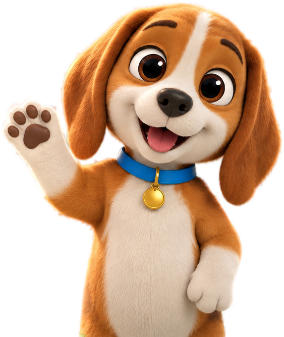
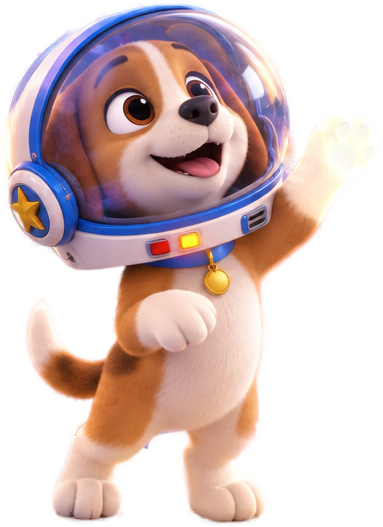

<title>Пакет картинок Klockowo</title>
<meta name="claude:viewport-fit-sides" content="cover">
<link rel="preconnect" href="https://fonts.googleapis.com"><link rel="preconnect" href="https://fonts.gstatic.com" crossorigin>
<link rel="stylesheet" href="https://fonts.googleapis.com/css2?family=Fredoka:wght@500;600&family=Nunito:wght@400;600;700&family=Rubik:wght@500;700&display=swap">
<style>
/* Робоча сторінка: шапка з поступом і порадами, смуга наборів, далі набори карток (1 колонка на телефоні, 2 на широкому). */
:root {
  --bg: #edf2f9; --surface: #ffffff; --ink: #2b2a4a; --muted: #5d6585; --line: #d3dbea; --code: #f5f8fd;
  --accent: #1f6fd0; --on-accent: #ffffff; --ok: #2c8a25; --warn: #a85400;
  --red: #e8352f; --yellow: #ffcf1f; --blue: #1f7fe0; --green: #3fae35; --orange: #ff8a1f; --violet: #8b4fe0;
  --display: 'Rubik', 'Nunito', system-ui, sans-serif; --body: 'Nunito', system-ui, sans-serif;
  --num: 'Fredoka', 'Rubik', system-ui, sans-serif; --mono: ui-monospace, 'Cascadia Mono', Consolas, monospace;
}
@media (prefers-color-scheme: dark) {
  :root:not([data-theme="light"]) {
    --bg: #10151f; --surface: #1a2130; --ink: #e9edf6; --muted: #a3acc4; --line: #2e3850; --code: #141b28;
    --accent: #5aa8ff; --on-accent: #0c1424; --ok: #72d068; --warn: #ffb15c; color-scheme: dark;
  }
}
:root[data-theme="dark"] {
  --bg: #10151f; --surface: #1a2130; --ink: #e9edf6; --muted: #a3acc4; --line: #2e3850; --code: #141b28;
  --accent: #5aa8ff; --on-accent: #0c1424; --ok: #72d068; --warn: #ffb15c; color-scheme: dark;
}

[hidden] { display: none !important; }
body { background: var(--bg); color: var(--ink); font: 16px/1.5 var(--body); }
.wrap {
  max-width: 1240px; margin: 0 auto; display: grid; grid-template-columns: minmax(0, 1fr); gap: 28px; padding-block: 24px 64px;
  padding-left: max(16px, env(safe-area-inset-left, 0px)); padding-right: max(16px, env(safe-area-inset-right, 0px));
}
h1, h2 { font-family: var(--display); text-wrap: balance; margin: 0; }
h1 { font-size: clamp(26px, 4vw, 36px); }
h2 { font-size: 22px; display: flex; align-items: center; gap: 10px; }
code { font-family: var(--mono); font-size: 0.92em; }
.top { display: grid; gap: 6px; }
.total { margin: 0; color: var(--muted); }
.total b { font: 600 22px var(--num); color: var(--ink); font-variant-numeric: tabular-nums; }
.mode { margin: 0; font-weight: 600; }
.howto { background: var(--surface); border: 1px solid var(--line); border-radius: 14px; padding: 14px 18px; }
.howto summary { font: 700 18px var(--display); cursor: pointer; }
.howto ol { margin: 10px 0; padding-left: 22px; display: grid; gap: 6px; max-width: 75ch; }
.howto p { margin: 8px 0 0; max-width: 75ch; }
.fine { color: var(--muted); font-size: 14px; }
body.live .offline-only { display: none; }

.sets { display: flex; flex-wrap: wrap; gap: 8px; }
.sets a {
  color: var(--ink); text-decoration: none; border: 1px solid var(--line); background: var(--surface);
  border-radius: 999px; padding: 6px 12px; font-weight: 600; font-size: 14px;
}
.sets a span { color: var(--muted); font-variant-numeric: tabular-nums; }

.set { display: grid; grid-template-columns: minmax(0, 1fr); gap: 12px; scroll-margin-top: 12px; }
.set-head { display: flex; flex-wrap: wrap; align-items: center; gap: 8px 14px; }
.set-head h2::before {
  content: ""; width: 26px; height: 16px; border-radius: 4px; background: var(--brick);
  box-shadow: inset 0 -3px 0 rgb(0 0 0 / 0.18), 6px -5px 0 -1px var(--brick), 15px -5px 0 -1px var(--brick);
  margin: 6px 10px 0 0;
}
.count { font: 600 16px var(--num); color: var(--muted); font-variant-numeric: tabular-nums; }
.count b { color: var(--ink); }
.studs { display: flex; flex-wrap: wrap; gap: 4px; }
.studs i { width: 11px; height: 11px; border-radius: 50%; background: var(--line); }
.studs i.on { background: var(--brick); box-shadow: inset 0 -2px 0 rgb(0 0 0 / 0.2); }
.note { margin: 0; color: var(--muted); max-width: 80ch; }
.cards { display: grid; gap: 14px; grid-template-columns: repeat(auto-fill, minmax(min(100%, 520px), 1fr)); }

.card {
  background: var(--surface); border: 1px solid var(--line); border-radius: 14px; padding: 14px;
  display: grid; gap: 10px; min-width: 0; scroll-margin-top: 12px;
}
.card-head { display: flex; align-items: center; gap: 10px; min-width: 0; }
.n { font: 600 15px var(--num); color: var(--muted); min-width: 2.2em; font-variant-numeric: tabular-nums; }
.fname { font-size: 15px; font-weight: 700; overflow-wrap: anywhere; min-width: 0; }
.state {
  margin-left: auto; font-size: 13px; font-weight: 700; border-radius: 999px; padding: 2px 10px;
  border: 1px solid var(--line); color: var(--muted); white-space: nowrap;
}
.card.done .state { color: var(--ok); border-color: currentColor; }
.card.busy .state, .card.error .state { color: var(--warn); border-color: currentColor; }
.refs { display: flex; flex-wrap: wrap; align-items: flex-start; gap: 10px; }
.label { font-size: 13px; font-weight: 700; color: var(--muted); width: 100%; }
.ref { margin: 0; display: grid; gap: 4px; justify-items: start; }
.ref img { height: 72px; width: auto; border-radius: 8px; border: 1px solid var(--line); background: #fff; }
.ref figcaption { display: flex; align-items: center; gap: 6px; font-size: 13px; }
.ref.missing figcaption code::after { content: " — ще немає"; color: var(--warn); font-family: var(--body); }
.prompt {
  margin: 0; background: var(--code); border: 1px solid var(--line); border-radius: 10px; padding: 10px 12px;
  font: 13px/1.5 var(--mono); white-space: pre-wrap; overflow-wrap: anywhere; max-height: 10.5em; overflow: auto;
}
.actions { display: flex; flex-wrap: wrap; gap: 8px; }
.btn, .save {
  font: 700 14px var(--body); color: var(--ink); background: var(--surface); border: 1px solid var(--line);
  border-radius: 10px; padding: 9px 14px; cursor: pointer; min-height: 40px;
}
.save { padding: 2px 8px; min-height: 28px; font-size: 12px; }
.btn.primary { background: var(--accent); border-color: var(--accent); color: var(--on-accent); }
.btn.up { position: relative; border-style: dashed; border-color: var(--accent); color: var(--accent); display: inline-flex; align-items: center; }
.btn.up input { position: absolute; inset: 0; opacity: 0; cursor: pointer; width: 100%; }
.btn:focus-visible, .save:focus-visible, .sets a:focus-visible, .btn.up:focus-within, summary:focus-visible { outline: 3px solid var(--accent); outline-offset: 2px; }
.msg { margin: 0; font-size: 14px; font-weight: 600; color: var(--warn); }
.result { display: flex; align-items: flex-end; gap: 12px; flex-wrap: wrap; }
.result img { height: 140px; width: auto; max-width: 100%; border-radius: 10px; border: 1px solid var(--line); background: #fff; }
.meta { font-size: 13px; color: var(--muted); font-variant-numeric: tabular-nums; }
.meta .bad { color: var(--warn); font-weight: 700; }
</style>
<main class="wrap">
<header class="top">
<h1>Пакет картинок Klockowo</h1>
<p class="total"><b id="done">0</b> з 154 готово <span id="usage"></span></p>
<p class="mode" id="mode">Перевіряю, чи можна додавати картинки просто тут…</p>
</header>
<details class="howto" open><summary>Як працювати</summary>
<ol>
<li>У Gemini — той самий режим, що й для проби (Łatka, фон W4). Одна група — один новий чат; іди згори вниз: перші картинки групи стають зразками для наступних.</li>
<li>На картці: <b>Копіювати запит</b> → встав у Gemini → прикріпи файли з рядка «Прикріпити» (зразок можна просто перетягнути зі сторінки в Gemini або натиснути «Зберегти») → надішли.</li>
<li>Вдала — завантаж <b>оригінал</b> кнопкою завантаження в Gemini (з підпискою Pro це 2K; не скриншот і не копія з чату) і натисни <b>Додати картинку</b> на цій картці. Невдала — напиши в Gemini «try again» або що виправити: «make the background plain white», «remove the text».</li>
<li>Перевір: видно всю фігуру й нічого не обрізано краєм; тло однотонне; жодних літер і логотипів, пупирці гладкі; Kubik той самий (вуха, плями, синій нашийник, жовта цеглинка); на руках рівно стільки пальців, скільки в назві.</li>
<li>Прозоре тло не проси: Gemini малює «шахівку». Тло я виріжу сам.</li>
</ol>
<p class="offline-only">Ця копія відкрита не з claude.ai, тож кнопки «Додати картинку» немає: збережи файл під іменем із картки (<b>Копіювати ім'я</b>) у папку <code>design/v2/gen/</code>.</p>
<p class="fine">Предмети для лічби — без облич (у сонечка, метелика, каченяти й рибки — лише очі). Запити англійською: так Gemini розуміє точніше.</p>
</details>
<nav class="sets"><a href="#set-kubik-1">Kubik: головні пози <span data-nav="kubik-1"></span></a><a href="#set-kubik-2">Kubik: ще пози й рот <span data-nav="kubik-2"></span></a><a href="#set-kubik-3">Kubik у світах <span data-nav="kubik-3"></span></a><a href="#set-team">Команда <span data-nav="team"></span></a><a href="#set-pups">Twój piesek <span data-nav="pups"></span></a><a href="#set-animals-1">Тваринки 1 <span data-nav="animals-1"></span></a><a href="#set-animals-2">Тваринки 2 <span data-nav="animals-2"></span></a><a href="#set-items-1">Предмети W1–W3 <span data-nav="items-1"></span></a><a href="#set-items-2">Предмети W4–W7 <span data-nav="items-2"></span></a><a href="#set-digits">Цифри <span data-nav="digits"></span></a><a href="#set-hands">Руки <span data-nav="hands"></span></a><a href="#set-build">База, споруди світів, транспорт <span data-nav="build"></span></a><a href="#set-bg">Фони світів <span data-nav="bg"></span></a><a href="#set-path">Доріжки рівнів <span data-nav="path"></span></a><a href="#set-islands">Острови мапи й скрині <span data-nav="islands"></span></a></nav>
<section class="set" id="set-kubik-1" data-set="kubik-1" style="--brick: var(--red)">
<div class="set-head"><h2>Kubik: головні пози</h2><span class="count"><b data-done>0</b> / 10</span><span class="studs" aria-hidden="true"><i></i><i></i><i></i><i></i><i></i><i></i><i></i><i></i><i></i><i></i></span></div>
<p class="note">Почни з kubik-idle: зразок — вирізка з вашого фото. Коли kubik-idle вдалий, додай його сюди — далі він зразок для всіх поз, команди й цуценят.</p>
<div class="cards"><article class="card" id="kubik-idle" data-id="kubik-idle" data-scene="0">
<header class="card-head"><span class="n">1</span><code class="fname">kubik-idle.png</code><span class="state">чекає</span></header>
<div class="refs"><span class="label">Прикріпити</span><figure class="ref" data-src="cut/kubik-wave.png" data-name="kubik-wave.png"><figcaption><code>kubik-wave.png</code><button type="button" class="save" hidden>Зберегти</button></figcaption></figure></div>
<pre class="prompt" id="p-kubik-idle">Use the attached picture of the puppy as the character reference: keep his face, fur colours, ears and proportions, but replace the round gold tag with the brick pendant described here. Kubik, a beagle puppy who stands upright on his hind legs like a cartoon character: tan-brown and white fur, long floppy brown ears, a white blaze on the forehead, big warm brown eyes, black nose, white muzzle and chest, a blue collar with a small round yellow pendant shaped like a toy brick with one smooth round stud (no badge, no emblem, no paw print), standing calmly with a friendly closed-mouth smile, front paws relaxed, looking at the viewer. The whole figure is visible with empty space around it and nothing touches the edges; centered on a plain flat pure white background, no floor, no shadow. No text, letters, numbers, logos or emblems anywhere. High-quality 3D animated feature-film render, soft global illumination, bright cheerful daylight, vibrant saturated colours. Cute rounded proportions, big expressive eyes, soft detailed fur.</pre>
<div class="actions"><button type="button" class="btn primary" data-copy-from="p-kubik-idle">Копіювати запит</button><button type="button" class="btn" data-copy="kubik-idle.png">Копіювати ім'я</button><label class="btn up" hidden><input type="file" accept="image/png,image/jpeg,image/webp" data-up>Додати картинку</label></div>
<p class="msg" hidden></p>
<div class="result" hidden><span class="meta"></span></div>
</article>
<article class="card" id="kubik-pointing-left" data-id="kubik-pointing-left" data-scene="0">
<header class="card-head"><span class="n">2</span><code class="fname">kubik-pointing-left.png</code><span class="state">чекає</span></header>
<div class="refs"><span class="label">Прикріпити</span><figure class="ref" data-gen="kubik-idle" data-src="kubik-idle.png" data-name="kubik-idle.png"><figcaption><code>kubik-idle.png</code><button type="button" class="save" hidden>Зберегти</button></figcaption></figure></div>
<pre class="prompt" id="p-kubik-pointing-left">Use the attached picture as the character reference and keep Kubik exactly the same: face, fur pattern, ears, collar, pendant, proportions and style. Kubik, a beagle puppy who stands upright on his hind legs like a cartoon character: tan-brown and white fur, long floppy brown ears, a white blaze on the forehead, big warm brown eyes, black nose, white muzzle and chest, a blue collar with a small round yellow pendant shaped like a toy brick with one smooth round stud (no badge, no emblem, no paw print), pointing with one front paw towards the left edge of the picture, looking the same way. The whole figure is visible with empty space around it and nothing touches the edges; centered on a plain flat pure white background, no floor, no shadow. No text, letters, numbers, logos or emblems anywhere. High-quality 3D animated feature-film render, soft global illumination, bright cheerful daylight, vibrant saturated colours. Cute rounded proportions, big expressive eyes, soft detailed fur.</pre>
<div class="actions"><button type="button" class="btn primary" data-copy-from="p-kubik-pointing-left">Копіювати запит</button><button type="button" class="btn" data-copy="kubik-pointing-left.png">Копіювати ім'я</button><label class="btn up" hidden><input type="file" accept="image/png,image/jpeg,image/webp" data-up>Додати картинку</label></div>
<p class="msg" hidden></p>
<div class="result" hidden><span class="meta"></span></div>
</article>
<article class="card" id="kubik-pointing-right" data-id="kubik-pointing-right" data-scene="0">
<header class="card-head"><span class="n">3</span><code class="fname">kubik-pointing-right.png</code><span class="state">чекає</span></header>
<div class="refs"><span class="label">Прикріпити</span><figure class="ref" data-gen="kubik-idle" data-src="kubik-idle.png" data-name="kubik-idle.png"><figcaption><code>kubik-idle.png</code><button type="button" class="save" hidden>Зберегти</button></figcaption></figure></div>
<pre class="prompt" id="p-kubik-pointing-right">Use the attached picture as the character reference and keep Kubik exactly the same: face, fur pattern, ears, collar, pendant, proportions and style. Kubik, a beagle puppy who stands upright on his hind legs like a cartoon character: tan-brown and white fur, long floppy brown ears, a white blaze on the forehead, big warm brown eyes, black nose, white muzzle and chest, a blue collar with a small round yellow pendant shaped like a toy brick with one smooth round stud (no badge, no emblem, no paw print), pointing with one front paw towards the right edge of the picture, looking the same way. The whole figure is visible with empty space around it and nothing touches the edges; centered on a plain flat pure white background, no floor, no shadow. No text, letters, numbers, logos or emblems anywhere. High-quality 3D animated feature-film render, soft global illumination, bright cheerful daylight, vibrant saturated colours. Cute rounded proportions, big expressive eyes, soft detailed fur.</pre>
<div class="actions"><button type="button" class="btn primary" data-copy-from="p-kubik-pointing-right">Копіювати запит</button><button type="button" class="btn" data-copy="kubik-pointing-right.png">Копіювати ім'я</button><label class="btn up" hidden><input type="file" accept="image/png,image/jpeg,image/webp" data-up>Додати картинку</label></div>
<p class="msg" hidden></p>
<div class="result" hidden><span class="meta"></span></div>
</article>
<article class="card" id="kubik-pointing-down" data-id="kubik-pointing-down" data-scene="0">
<header class="card-head"><span class="n">4</span><code class="fname">kubik-pointing-down.png</code><span class="state">чекає</span></header>
<div class="refs"><span class="label">Прикріпити</span><figure class="ref" data-gen="kubik-idle" data-src="kubik-idle.png" data-name="kubik-idle.png"><figcaption><code>kubik-idle.png</code><button type="button" class="save" hidden>Зберегти</button></figcaption></figure></div>
<pre class="prompt" id="p-kubik-pointing-down">Use the attached picture as the character reference and keep Kubik exactly the same: face, fur pattern, ears, collar, pendant, proportions and style. Kubik, a beagle puppy who stands upright on his hind legs like a cartoon character: tan-brown and white fur, long floppy brown ears, a white blaze on the forehead, big warm brown eyes, black nose, white muzzle and chest, a blue collar with a small round yellow pendant shaped like a toy brick with one smooth round stud (no badge, no emblem, no paw print), pointing down at the ground in front of his feet, looking down. The whole figure is visible with empty space around it and nothing touches the edges; centered on a plain flat pure white background, no floor, no shadow. No text, letters, numbers, logos or emblems anywhere. High-quality 3D animated feature-film render, soft global illumination, bright cheerful daylight, vibrant saturated colours. Cute rounded proportions, big expressive eyes, soft detailed fur.</pre>
<div class="actions"><button type="button" class="btn primary" data-copy-from="p-kubik-pointing-down">Копіювати запит</button><button type="button" class="btn" data-copy="kubik-pointing-down.png">Копіювати ім'я</button><label class="btn up" hidden><input type="file" accept="image/png,image/jpeg,image/webp" data-up>Додати картинку</label></div>
<p class="msg" hidden></p>
<div class="result" hidden><span class="meta"></span></div>
</article>
<article class="card" id="kubik-demonstrating" data-id="kubik-demonstrating" data-scene="0">
<header class="card-head"><span class="n">5</span><code class="fname">kubik-demonstrating.png</code><span class="state">чекає</span></header>
<div class="refs"><span class="label">Прикріпити</span><figure class="ref" data-gen="kubik-idle" data-src="kubik-idle.png" data-name="kubik-idle.png"><figcaption><code>kubik-idle.png</code><button type="button" class="save" hidden>Зберегти</button></figcaption></figure></div>
<pre class="prompt" id="p-kubik-demonstrating">Use the attached picture as the character reference and keep Kubik exactly the same: face, fur pattern, ears, collar, pendant, proportions and style. Kubik, a beagle puppy who stands upright on his hind legs like a cartoon character: tan-brown and white fur, long floppy brown ears, a white blaze on the forehead, big warm brown eyes, black nose, white muzzle and chest, a blue collar with a small round yellow pendant shaped like a toy brick with one smooth round stud (no badge, no emblem, no paw print), proudly holding up a small tower of three colourful toy bricks to show the viewer. The whole figure is visible with empty space around it and nothing touches the edges; centered on a plain flat pure white background, no floor, no shadow. No text, letters, numbers, logos or emblems anywhere. High-quality 3D animated feature-film render, soft global illumination, bright cheerful daylight, vibrant saturated colours. Cute rounded proportions, big expressive eyes, soft detailed fur.</pre>
<div class="actions"><button type="button" class="btn primary" data-copy-from="p-kubik-demonstrating">Копіювати запит</button><button type="button" class="btn" data-copy="kubik-demonstrating.png">Копіювати ім'я</button><label class="btn up" hidden><input type="file" accept="image/png,image/jpeg,image/webp" data-up>Додати картинку</label></div>
<p class="msg" hidden></p>
<div class="result" hidden><span class="meta"></span></div>
</article>
<article class="card" id="kubik-thinking" data-id="kubik-thinking" data-scene="0">
<header class="card-head"><span class="n">6</span><code class="fname">kubik-thinking.png</code><span class="state">чекає</span></header>
<div class="refs"><span class="label">Прикріпити</span><figure class="ref" data-gen="kubik-idle" data-src="kubik-idle.png" data-name="kubik-idle.png"><figcaption><code>kubik-idle.png</code><button type="button" class="save" hidden>Зберегти</button></figcaption></figure></div>
<pre class="prompt" id="p-kubik-thinking">Use the attached picture as the character reference and keep Kubik exactly the same: face, fur pattern, ears, collar, pendant, proportions and style. Kubik, a beagle puppy who stands upright on his hind legs like a cartoon character: tan-brown and white fur, long floppy brown ears, a white blaze on the forehead, big warm brown eyes, black nose, white muzzle and chest, a blue collar with a small round yellow pendant shaped like a toy brick with one smooth round stud (no badge, no emblem, no paw print), thinking, one paw on his chin, eyes looking up. The whole figure is visible with empty space around it and nothing touches the edges; centered on a plain flat pure white background, no floor, no shadow. No text, letters, numbers, logos or emblems anywhere. High-quality 3D animated feature-film render, soft global illumination, bright cheerful daylight, vibrant saturated colours. Cute rounded proportions, big expressive eyes, soft detailed fur.</pre>
<div class="actions"><button type="button" class="btn primary" data-copy-from="p-kubik-thinking">Копіювати запит</button><button type="button" class="btn" data-copy="kubik-thinking.png">Копіювати ім'я</button><label class="btn up" hidden><input type="file" accept="image/png,image/jpeg,image/webp" data-up>Додати картинку</label></div>
<p class="msg" hidden></p>
<div class="result" hidden><span class="meta"></span></div>
</article>
<article class="card" id="kubik-happy" data-id="kubik-happy" data-scene="0">
<header class="card-head"><span class="n">7</span><code class="fname">kubik-happy.png</code><span class="state">чекає</span></header>
<div class="refs"><span class="label">Прикріпити</span><figure class="ref" data-gen="kubik-idle" data-src="kubik-idle.png" data-name="kubik-idle.png"><figcaption><code>kubik-idle.png</code><button type="button" class="save" hidden>Зберегти</button></figcaption></figure></div>
<pre class="prompt" id="p-kubik-happy">Use the attached picture as the character reference and keep Kubik exactly the same: face, fur pattern, ears, collar, pendant, proportions and style. Kubik, a beagle puppy who stands upright on his hind legs like a cartoon character: tan-brown and white fur, long floppy brown ears, a white blaze on the forehead, big warm brown eyes, black nose, white muzzle and chest, a blue collar with a small round yellow pendant shaped like a toy brick with one smooth round stud (no badge, no emblem, no paw print), jumping with joy, both front paws up, big open smile, tail wagging. The whole figure is visible with empty space around it and nothing touches the edges; centered on a plain flat pure white background, no floor, no shadow. No text, letters, numbers, logos or emblems anywhere. High-quality 3D animated feature-film render, soft global illumination, bright cheerful daylight, vibrant saturated colours. Cute rounded proportions, big expressive eyes, soft detailed fur.</pre>
<div class="actions"><button type="button" class="btn primary" data-copy-from="p-kubik-happy">Копіювати запит</button><button type="button" class="btn" data-copy="kubik-happy.png">Копіювати ім'я</button><label class="btn up" hidden><input type="file" accept="image/png,image/jpeg,image/webp" data-up>Додати картинку</label></div>
<p class="msg" hidden></p>
<div class="result" hidden><span class="meta"></span></div>
</article>
<article class="card" id="kubik-celebrating" data-id="kubik-celebrating" data-scene="0">
<header class="card-head"><span class="n">8</span><code class="fname">kubik-celebrating.png</code><span class="state">чекає</span></header>
<div class="refs"><span class="label">Прикріпити</span><figure class="ref" data-gen="kubik-idle" data-src="kubik-idle.png" data-name="kubik-idle.png"><figcaption><code>kubik-idle.png</code><button type="button" class="save" hidden>Зберегти</button></figcaption></figure></div>
<pre class="prompt" id="p-kubik-celebrating">Use the attached picture as the character reference and keep Kubik exactly the same: face, fur pattern, ears, collar, pendant, proportions and style. Kubik, a beagle puppy who stands upright on his hind legs like a cartoon character: tan-brown and white fur, long floppy brown ears, a white blaze on the forehead, big warm brown eyes, black nose, white muzzle and chest, a blue collar with a small round yellow pendant shaped like a toy brick with one smooth round stud (no badge, no emblem, no paw print), celebrating, throwing a handful of small colourful toy bricks into the air. The whole figure is visible with empty space around it and nothing touches the edges; centered on a plain flat pure white background, no floor, no shadow. No text, letters, numbers, logos or emblems anywhere. High-quality 3D animated feature-film render, soft global illumination, bright cheerful daylight, vibrant saturated colours. Cute rounded proportions, big expressive eyes, soft detailed fur.</pre>
<div class="actions"><button type="button" class="btn primary" data-copy-from="p-kubik-celebrating">Копіювати запит</button><button type="button" class="btn" data-copy="kubik-celebrating.png">Копіювати ім'я</button><label class="btn up" hidden><input type="file" accept="image/png,image/jpeg,image/webp" data-up>Додати картинку</label></div>
<p class="msg" hidden></p>
<div class="result" hidden><span class="meta"></span></div>
</article>
<article class="card" id="kubik-encouraging" data-id="kubik-encouraging" data-scene="0">
<header class="card-head"><span class="n">9</span><code class="fname">kubik-encouraging.png</code><span class="state">чекає</span></header>
<div class="refs"><span class="label">Прикріпити</span><figure class="ref" data-gen="kubik-idle" data-src="kubik-idle.png" data-name="kubik-idle.png"><figcaption><code>kubik-idle.png</code><button type="button" class="save" hidden>Зберегти</button></figcaption></figure></div>
<pre class="prompt" id="p-kubik-encouraging">Use the attached picture as the character reference and keep Kubik exactly the same: face, fur pattern, ears, collar, pendant, proportions and style. Kubik, a beagle puppy who stands upright on his hind legs like a cartoon character: tan-brown and white fur, long floppy brown ears, a white blaze on the forehead, big warm brown eyes, black nose, white muzzle and chest, a blue collar with a small round yellow pendant shaped like a toy brick with one smooth round stud (no badge, no emblem, no paw print), giving a kind encouraging look, one paw on his chest, head slightly tilted, gentle smile. The whole figure is visible with empty space around it and nothing touches the edges; centered on a plain flat pure white background, no floor, no shadow. No text, letters, numbers, logos or emblems anywhere. High-quality 3D animated feature-film render, soft global illumination, bright cheerful daylight, vibrant saturated colours. Cute rounded proportions, big expressive eyes, soft detailed fur.</pre>
<div class="actions"><button type="button" class="btn primary" data-copy-from="p-kubik-encouraging">Копіювати запит</button><button type="button" class="btn" data-copy="kubik-encouraging.png">Копіювати ім'я</button><label class="btn up" hidden><input type="file" accept="image/png,image/jpeg,image/webp" data-up>Додати картинку</label></div>
<p class="msg" hidden></p>
<div class="result" hidden><span class="meta"></span></div>
</article>
<article class="card" id="kubik-waving" data-id="kubik-waving" data-scene="0">
<header class="card-head"><span class="n">10</span><code class="fname">kubik-waving.png</code><span class="state">чекає</span></header>
<div class="refs"><span class="label">Прикріпити</span><figure class="ref" data-gen="kubik-idle" data-src="kubik-idle.png" data-name="kubik-idle.png"><figcaption><code>kubik-idle.png</code><button type="button" class="save" hidden>Зберегти</button></figcaption></figure></div>
<pre class="prompt" id="p-kubik-waving">Use the attached picture as the character reference and keep Kubik exactly the same: face, fur pattern, ears, collar, pendant, proportions and style. Kubik, a beagle puppy who stands upright on his hind legs like a cartoon character: tan-brown and white fur, long floppy brown ears, a white blaze on the forehead, big warm brown eyes, black nose, white muzzle and chest, a blue collar with a small round yellow pendant shaped like a toy brick with one smooth round stud (no badge, no emblem, no paw print), waving hello with one front paw, big smile. The whole figure is visible with empty space around it and nothing touches the edges; centered on a plain flat pure white background, no floor, no shadow. No text, letters, numbers, logos or emblems anywhere. High-quality 3D animated feature-film render, soft global illumination, bright cheerful daylight, vibrant saturated colours. Cute rounded proportions, big expressive eyes, soft detailed fur.</pre>
<div class="actions"><button type="button" class="btn primary" data-copy-from="p-kubik-waving">Копіювати запит</button><button type="button" class="btn" data-copy="kubik-waving.png">Копіювати ім'я</button><label class="btn up" hidden><input type="file" accept="image/png,image/jpeg,image/webp" data-up>Додати картинку</label></div>
<p class="msg" hidden></p>
<div class="result" hidden><span class="meta"></span></div>
</article></div>
</section>
<section class="set" id="set-kubik-2" data-set="kubik-2" style="--brick: var(--yellow)">
<div class="set-head"><h2>Kubik: ще пози й рот</h2><span class="count"><b data-done>0</b> / 10</span><span class="studs" aria-hidden="true"><i></i><i></i><i></i><i></i><i></i><i></i><i></i><i></i><i></i><i></i></span></div>
<p class="note">Рот a / e / o — правка kubik-idle: поза, розмір і кадр мають збігтися з ним до пікселя, змінюється лише рот (у грі кадри чергуються, поки звучить голос).</p>
<div class="cards"><article class="card" id="kubik-surprised" data-id="kubik-surprised" data-scene="0">
<header class="card-head"><span class="n">11</span><code class="fname">kubik-surprised.png</code><span class="state">чекає</span></header>
<div class="refs"><span class="label">Прикріпити</span><figure class="ref" data-gen="kubik-idle" data-src="kubik-idle.png" data-name="kubik-idle.png"><figcaption><code>kubik-idle.png</code><button type="button" class="save" hidden>Зберегти</button></figcaption></figure></div>
<pre class="prompt" id="p-kubik-surprised">Use the attached picture as the character reference and keep Kubik exactly the same: face, fur pattern, ears, collar, pendant, proportions and style. Kubik, a beagle puppy who stands upright on his hind legs like a cartoon character: tan-brown and white fur, long floppy brown ears, a white blaze on the forehead, big warm brown eyes, black nose, white muzzle and chest, a blue collar with a small round yellow pendant shaped like a toy brick with one smooth round stud (no badge, no emblem, no paw print), surprised, eyes wide open, ears up, both paws at his cheeks, small round open mouth. The whole figure is visible with empty space around it and nothing touches the edges; centered on a plain flat pure white background, no floor, no shadow. No text, letters, numbers, logos or emblems anywhere. High-quality 3D animated feature-film render, soft global illumination, bright cheerful daylight, vibrant saturated colours. Cute rounded proportions, big expressive eyes, soft detailed fur.</pre>
<div class="actions"><button type="button" class="btn primary" data-copy-from="p-kubik-surprised">Копіювати запит</button><button type="button" class="btn" data-copy="kubik-surprised.png">Копіювати ім'я</button><label class="btn up" hidden><input type="file" accept="image/png,image/jpeg,image/webp" data-up>Додати картинку</label></div>
<p class="msg" hidden></p>
<div class="result" hidden><span class="meta"></span></div>
</article>
<article class="card" id="kubik-with-card" data-id="kubik-with-card" data-scene="0">
<header class="card-head"><span class="n">12</span><code class="fname">kubik-with-card.png</code><span class="state">чекає</span></header>
<div class="refs"><span class="label">Прикріпити</span><figure class="ref" data-gen="kubik-idle" data-src="kubik-idle.png" data-name="kubik-idle.png"><figcaption><code>kubik-idle.png</code><button type="button" class="save" hidden>Зберегти</button></figcaption></figure></div>
<pre class="prompt" id="p-kubik-with-card">Use the attached picture as the character reference and keep Kubik exactly the same: face, fur pattern, ears, collar, pendant, proportions and style. Kubik, a beagle puppy who stands upright on his hind legs like a cartoon character: tan-brown and white fur, long floppy brown ears, a white blaze on the forehead, big warm brown eyes, black nose, white muzzle and chest, a blue collar with a small round yellow pendant shaped like a toy brick with one smooth round stud (no badge, no emblem, no paw print), holding a blank white rounded card with both front paws in front of his chest; the card is completely empty. The whole figure is visible with empty space around it and nothing touches the edges; centered on a plain flat pure white background, no floor, no shadow. No text, letters, numbers, logos or emblems anywhere. High-quality 3D animated feature-film render, soft global illumination, bright cheerful daylight, vibrant saturated colours. Cute rounded proportions, big expressive eyes, soft detailed fur.</pre>
<div class="actions"><button type="button" class="btn primary" data-copy-from="p-kubik-with-card">Копіювати запит</button><button type="button" class="btn" data-copy="kubik-with-card.png">Копіювати ім'я</button><label class="btn up" hidden><input type="file" accept="image/png,image/jpeg,image/webp" data-up>Додати картинку</label></div>
<p class="msg" hidden></p>
<div class="result" hidden><span class="meta"></span></div>
</article>
<article class="card" id="kubik-on-kart" data-id="kubik-on-kart" data-scene="0">
<header class="card-head"><span class="n">13</span><code class="fname">kubik-on-kart.png</code><span class="state">чекає</span></header>
<div class="refs"><span class="label">Прикріпити</span><figure class="ref" data-gen="kubik-idle" data-src="kubik-idle.png" data-name="kubik-idle.png"><figcaption><code>kubik-idle.png</code><button type="button" class="save" hidden>Зберегти</button></figcaption></figure></div>
<pre class="prompt" id="p-kubik-on-kart">Use the attached picture as the character reference and keep Kubik exactly the same: face, fur pattern, ears, collar, pendant, proportions and style. Kubik, a beagle puppy who stands upright on his hind legs like a cartoon character: tan-brown and white fur, long floppy brown ears, a white blaze on the forehead, big warm brown eyes, black nose, white muzzle and chest, a blue collar with a small round yellow pendant shaped like a toy brick with one smooth round stud (no badge, no emblem, no paw print), sitting in a small open go-kart built from red and yellow toy bricks with smooth blank studs, paws on the steering wheel, seen from the front at a slight angle, the whole kart visible. The whole figure is visible with empty space around it and nothing touches the edges; centered on a plain flat pure white background, no floor, no shadow. No text, letters, numbers, logos or emblems anywhere. High-quality 3D animated feature-film render, soft global illumination, bright cheerful daylight, vibrant saturated colours. Cute rounded proportions, big expressive eyes, soft detailed fur.</pre>
<div class="actions"><button type="button" class="btn primary" data-copy-from="p-kubik-on-kart">Копіювати запит</button><button type="button" class="btn" data-copy="kubik-on-kart.png">Копіювати ім'я</button><label class="btn up" hidden><input type="file" accept="image/png,image/jpeg,image/webp" data-up>Додати картинку</label></div>
<p class="msg" hidden></p>
<div class="result" hidden><span class="meta"></span></div>
</article>
<article class="card" id="kubik-sleepy" data-id="kubik-sleepy" data-scene="0">
<header class="card-head"><span class="n">14</span><code class="fname">kubik-sleepy.png</code><span class="state">чекає</span></header>
<div class="refs"><span class="label">Прикріпити</span><figure class="ref" data-gen="kubik-idle" data-src="kubik-idle.png" data-name="kubik-idle.png"><figcaption><code>kubik-idle.png</code><button type="button" class="save" hidden>Зберегти</button></figcaption></figure></div>
<pre class="prompt" id="p-kubik-sleepy">Use the attached picture as the character reference and keep Kubik exactly the same: face, fur pattern, ears, collar, pendant, proportions and style. Kubik, a beagle puppy who stands upright on his hind legs like a cartoon character: tan-brown and white fur, long floppy brown ears, a white blaze on the forehead, big warm brown eyes, black nose, white muzzle and chest, a blue collar with a small round yellow pendant shaped like a toy brick with one smooth round stud (no badge, no emblem, no paw print), sitting, sleepy and yawning, eyes half closed. The whole figure is visible with empty space around it and nothing touches the edges; centered on a plain flat pure white background, no floor, no shadow. No text, letters, numbers, logos or emblems anywhere. High-quality 3D animated feature-film render, soft global illumination, bright cheerful daylight, vibrant saturated colours. Cute rounded proportions, big expressive eyes, soft detailed fur.</pre>
<div class="actions"><button type="button" class="btn primary" data-copy-from="p-kubik-sleepy">Копіювати запит</button><button type="button" class="btn" data-copy="kubik-sleepy.png">Копіювати ім'я</button><label class="btn up" hidden><input type="file" accept="image/png,image/jpeg,image/webp" data-up>Додати картинку</label></div>
<p class="msg" hidden></p>
<div class="result" hidden><span class="meta"></span></div>
</article>
<article class="card" id="kubik-break-jump" data-id="kubik-break-jump" data-scene="0">
<header class="card-head"><span class="n">15</span><code class="fname">kubik-break-jump.png</code><span class="state">чекає</span></header>
<div class="refs"><span class="label">Прикріпити</span><figure class="ref" data-gen="kubik-idle" data-src="kubik-idle.png" data-name="kubik-idle.png"><figcaption><code>kubik-idle.png</code><button type="button" class="save" hidden>Зберегти</button></figcaption></figure></div>
<pre class="prompt" id="p-kubik-break-jump">Use the attached picture as the character reference and keep Kubik exactly the same: face, fur pattern, ears, collar, pendant, proportions and style. Kubik, a beagle puppy who stands upright on his hind legs like a cartoon character: tan-brown and white fur, long floppy brown ears, a white blaze on the forehead, big warm brown eyes, black nose, white muzzle and chest, a blue collar with a small round yellow pendant shaped like a toy brick with one smooth round stud (no badge, no emblem, no paw print), dancing: jumping high with both front paws up. The whole figure is visible with empty space around it and nothing touches the edges; centered on a plain flat pure white background, no floor, no shadow. No text, letters, numbers, logos or emblems anywhere. High-quality 3D animated feature-film render, soft global illumination, bright cheerful daylight, vibrant saturated colours. Cute rounded proportions, big expressive eyes, soft detailed fur.</pre>
<div class="actions"><button type="button" class="btn primary" data-copy-from="p-kubik-break-jump">Копіювати запит</button><button type="button" class="btn" data-copy="kubik-break-jump.png">Копіювати ім'я</button><label class="btn up" hidden><input type="file" accept="image/png,image/jpeg,image/webp" data-up>Додати картинку</label></div>
<p class="msg" hidden></p>
<div class="result" hidden><span class="meta"></span></div>
</article>
<article class="card" id="kubik-break-clap" data-id="kubik-break-clap" data-scene="0">
<header class="card-head"><span class="n">16</span><code class="fname">kubik-break-clap.png</code><span class="state">чекає</span></header>
<div class="refs"><span class="label">Прикріпити</span><figure class="ref" data-gen="kubik-idle" data-src="kubik-idle.png" data-name="kubik-idle.png"><figcaption><code>kubik-idle.png</code><button type="button" class="save" hidden>Зберегти</button></figcaption></figure></div>
<pre class="prompt" id="p-kubik-break-clap">Use the attached picture as the character reference and keep Kubik exactly the same: face, fur pattern, ears, collar, pendant, proportions and style. Kubik, a beagle puppy who stands upright on his hind legs like a cartoon character: tan-brown and white fur, long floppy brown ears, a white blaze on the forehead, big warm brown eyes, black nose, white muzzle and chest, a blue collar with a small round yellow pendant shaped like a toy brick with one smooth round stud (no badge, no emblem, no paw print), dancing: clapping his front paws above his head. The whole figure is visible with empty space around it and nothing touches the edges; centered on a plain flat pure white background, no floor, no shadow. No text, letters, numbers, logos or emblems anywhere. High-quality 3D animated feature-film render, soft global illumination, bright cheerful daylight, vibrant saturated colours. Cute rounded proportions, big expressive eyes, soft detailed fur.</pre>
<div class="actions"><button type="button" class="btn primary" data-copy-from="p-kubik-break-clap">Копіювати запит</button><button type="button" class="btn" data-copy="kubik-break-clap.png">Копіювати ім'я</button><label class="btn up" hidden><input type="file" accept="image/png,image/jpeg,image/webp" data-up>Додати картинку</label></div>
<p class="msg" hidden></p>
<div class="result" hidden><span class="meta"></span></div>
</article>
<article class="card" id="kubik-break-stomp" data-id="kubik-break-stomp" data-scene="0">
<header class="card-head"><span class="n">17</span><code class="fname">kubik-break-stomp.png</code><span class="state">чекає</span></header>
<div class="refs"><span class="label">Прикріпити</span><figure class="ref" data-gen="kubik-idle" data-src="kubik-idle.png" data-name="kubik-idle.png"><figcaption><code>kubik-idle.png</code><button type="button" class="save" hidden>Зберегти</button></figcaption></figure></div>
<pre class="prompt" id="p-kubik-break-stomp">Use the attached picture as the character reference and keep Kubik exactly the same: face, fur pattern, ears, collar, pendant, proportions and style. Kubik, a beagle puppy who stands upright on his hind legs like a cartoon character: tan-brown and white fur, long floppy brown ears, a white blaze on the forehead, big warm brown eyes, black nose, white muzzle and chest, a blue collar with a small round yellow pendant shaped like a toy brick with one smooth round stud (no badge, no emblem, no paw print), dancing: marching and stomping one foot, swinging his front paws happily. The whole figure is visible with empty space around it and nothing touches the edges; centered on a plain flat pure white background, no floor, no shadow. No text, letters, numbers, logos or emblems anywhere. High-quality 3D animated feature-film render, soft global illumination, bright cheerful daylight, vibrant saturated colours. Cute rounded proportions, big expressive eyes, soft detailed fur.</pre>
<div class="actions"><button type="button" class="btn primary" data-copy-from="p-kubik-break-stomp">Копіювати запит</button><button type="button" class="btn" data-copy="kubik-break-stomp.png">Копіювати ім'я</button><label class="btn up" hidden><input type="file" accept="image/png,image/jpeg,image/webp" data-up>Додати картинку</label></div>
<p class="msg" hidden></p>
<div class="result" hidden><span class="meta"></span></div>
</article>
<article class="card" id="kubik-talking-a" data-id="kubik-talking-a" data-scene="0">
<header class="card-head"><span class="n">18</span><code class="fname">kubik-talking-a.png</code><span class="state">чекає</span></header>
<div class="refs"><span class="label">Прикріпити — це правка</span><figure class="ref" data-gen="kubik-idle" data-src="kubik-idle.png" data-name="kubik-idle.png"><figcaption><code>kubik-idle.png</code><button type="button" class="save" hidden>Зберегти</button></figcaption></figure></div>
<pre class="prompt" id="p-kubik-talking-a">Edit the attached picture. Keep absolutely everything else identical: Kubik's pose, position, size, framing, lighting and the plain white background. Change only his mouth: wide open, as when saying &quot;a&quot;, the tongue visible.</pre>
<div class="actions"><button type="button" class="btn primary" data-copy-from="p-kubik-talking-a">Копіювати запит</button><button type="button" class="btn" data-copy="kubik-talking-a.png">Копіювати ім'я</button><label class="btn up" hidden><input type="file" accept="image/png,image/jpeg,image/webp" data-up>Додати картинку</label></div>
<p class="msg" hidden></p>
<div class="result" hidden><span class="meta"></span></div>
</article>
<article class="card" id="kubik-talking-e" data-id="kubik-talking-e" data-scene="0">
<header class="card-head"><span class="n">19</span><code class="fname">kubik-talking-e.png</code><span class="state">чекає</span></header>
<div class="refs"><span class="label">Прикріпити — це правка</span><figure class="ref" data-gen="kubik-idle" data-src="kubik-idle.png" data-name="kubik-idle.png"><figcaption><code>kubik-idle.png</code><button type="button" class="save" hidden>Зберегти</button></figcaption></figure></div>
<pre class="prompt" id="p-kubik-talking-e">Edit the attached picture. Keep absolutely everything else identical: Kubik's pose, position, size, framing, lighting and the plain white background. Change only his mouth: open in a wide smile, as when saying &quot;e&quot;.</pre>
<div class="actions"><button type="button" class="btn primary" data-copy-from="p-kubik-talking-e">Копіювати запит</button><button type="button" class="btn" data-copy="kubik-talking-e.png">Копіювати ім'я</button><label class="btn up" hidden><input type="file" accept="image/png,image/jpeg,image/webp" data-up>Додати картинку</label></div>
<p class="msg" hidden></p>
<div class="result" hidden><span class="meta"></span></div>
</article>
<article class="card" id="kubik-talking-o" data-id="kubik-talking-o" data-scene="0">
<header class="card-head"><span class="n">20</span><code class="fname">kubik-talking-o.png</code><span class="state">чекає</span></header>
<div class="refs"><span class="label">Прикріпити — це правка</span><figure class="ref" data-gen="kubik-idle" data-src="kubik-idle.png" data-name="kubik-idle.png"><figcaption><code>kubik-idle.png</code><button type="button" class="save" hidden>Зберегти</button></figcaption></figure></div>
<pre class="prompt" id="p-kubik-talking-o">Edit the attached picture. Keep absolutely everything else identical: Kubik's pose, position, size, framing, lighting and the plain white background. Change only his mouth: small and round, as when saying &quot;o&quot;.</pre>
<div class="actions"><button type="button" class="btn primary" data-copy-from="p-kubik-talking-o">Копіювати запит</button><button type="button" class="btn" data-copy="kubik-talking-o.png">Копіювати ім'я</button><label class="btn up" hidden><input type="file" accept="image/png,image/jpeg,image/webp" data-up>Додати картинку</label></div>
<p class="msg" hidden></p>
<div class="result" hidden><span class="meta"></span></div>
</article></div>
</section>
<section class="set" id="set-kubik-3" data-set="kubik-3" style="--brick: var(--blue)">
<div class="set-head"><h2>Kubik у світах</h2><span class="count"><b data-done>0</b> / 14</span><span class="studs" aria-hidden="true"><i></i><i></i><i></i><i></i><i></i><i></i><i></i><i></i><i></i><i></i><i></i><i></i><i></i><i></i></span></div>
<p class="note">Правки готових kubik-idle і kubik-happy: додається лише аксесуар світу, усе інше лишається як було.</p>
<div class="cards"><article class="card" id="kubik-w1-idle" data-id="kubik-w1-idle" data-scene="0">
<header class="card-head"><span class="n">21</span><code class="fname">kubik-w1-idle.png</code><span class="state">чекає</span></header>
<div class="refs"><span class="label">Прикріпити — це правка</span><figure class="ref" data-gen="kubik-idle" data-src="kubik-idle.png" data-name="kubik-idle.png"><figcaption><code>kubik-idle.png</code><button type="button" class="save" hidden>Зберегти</button></figcaption></figure></div>
<pre class="prompt" id="p-kubik-w1-idle">Edit the first attached picture: put a small straw sun hat with a daisy on Kubik. Keep everything else identical: his face, pose, collar, yellow brick pendant, size, framing and the plain white background.</pre>
<div class="actions"><button type="button" class="btn primary" data-copy-from="p-kubik-w1-idle">Копіювати запит</button><button type="button" class="btn" data-copy="kubik-w1-idle.png">Копіювати ім'я</button><label class="btn up" hidden><input type="file" accept="image/png,image/jpeg,image/webp" data-up>Додати картинку</label></div>
<p class="msg" hidden></p>
<div class="result" hidden><span class="meta"></span></div>
</article>
<article class="card" id="kubik-w1-happy" data-id="kubik-w1-happy" data-scene="0">
<header class="card-head"><span class="n">22</span><code class="fname">kubik-w1-happy.png</code><span class="state">чекає</span></header>
<div class="refs"><span class="label">Прикріпити — це правка</span><figure class="ref" data-gen="kubik-happy" data-src="kubik-happy.png" data-name="kubik-happy.png"><figcaption><code>kubik-happy.png</code><button type="button" class="save" hidden>Зберегти</button></figcaption></figure></div>
<pre class="prompt" id="p-kubik-w1-happy">Edit the first attached picture: put a small straw sun hat with a daisy on Kubik. Keep everything else identical: his face, pose, collar, yellow brick pendant, size, framing and the plain white background.</pre>
<div class="actions"><button type="button" class="btn primary" data-copy-from="p-kubik-w1-happy">Копіювати запит</button><button type="button" class="btn" data-copy="kubik-w1-happy.png">Копіювати ім'я</button><label class="btn up" hidden><input type="file" accept="image/png,image/jpeg,image/webp" data-up>Додати картинку</label></div>
<p class="msg" hidden></p>
<div class="result" hidden><span class="meta"></span></div>
</article>
<article class="card" id="kubik-w2-idle" data-id="kubik-w2-idle" data-scene="0">
<header class="card-head"><span class="n">23</span><code class="fname">kubik-w2-idle.png</code><span class="state">чекає</span></header>
<div class="refs"><span class="label">Прикріпити — це правка</span><figure class="ref" data-gen="kubik-idle" data-src="kubik-idle.png" data-name="kubik-idle.png"><figcaption><code>kubik-idle.png</code><button type="button" class="save" hidden>Зберегти</button></figcaption></figure></div>
<pre class="prompt" id="p-kubik-w2-idle">Edit the first attached picture: put a green gardener cap on Kubik. Keep everything else identical: his face, pose, collar, yellow brick pendant, size, framing and the plain white background.</pre>
<div class="actions"><button type="button" class="btn primary" data-copy-from="p-kubik-w2-idle">Копіювати запит</button><button type="button" class="btn" data-copy="kubik-w2-idle.png">Копіювати ім'я</button><label class="btn up" hidden><input type="file" accept="image/png,image/jpeg,image/webp" data-up>Додати картинку</label></div>
<p class="msg" hidden></p>
<div class="result" hidden><span class="meta"></span></div>
</article>
<article class="card" id="kubik-w2-happy" data-id="kubik-w2-happy" data-scene="0">
<header class="card-head"><span class="n">24</span><code class="fname">kubik-w2-happy.png</code><span class="state">чекає</span></header>
<div class="refs"><span class="label">Прикріпити — це правка</span><figure class="ref" data-gen="kubik-happy" data-src="kubik-happy.png" data-name="kubik-happy.png"><figcaption><code>kubik-happy.png</code><button type="button" class="save" hidden>Зберегти</button></figcaption></figure></div>
<pre class="prompt" id="p-kubik-w2-happy">Edit the first attached picture: put a green gardener cap on Kubik. Keep everything else identical: his face, pose, collar, yellow brick pendant, size, framing and the plain white background.</pre>
<div class="actions"><button type="button" class="btn primary" data-copy-from="p-kubik-w2-happy">Копіювати запит</button><button type="button" class="btn" data-copy="kubik-w2-happy.png">Копіювати ім'я</button><label class="btn up" hidden><input type="file" accept="image/png,image/jpeg,image/webp" data-up>Додати картинку</label></div>
<p class="msg" hidden></p>
<div class="result" hidden><span class="meta"></span></div>
</article>
<article class="card" id="kubik-w3-idle" data-id="kubik-w3-idle" data-scene="0">
<header class="card-head"><span class="n">25</span><code class="fname">kubik-w3-idle.png</code><span class="state">чекає</span></header>
<div class="refs"><span class="label">Прикріпити — це правка</span><figure class="ref" data-gen="kubik-idle" data-src="kubik-idle.png" data-name="kubik-idle.png"><figcaption><code>kubik-idle.png</code><button type="button" class="save" hidden>Зберегти</button></figcaption></figure></div>
<pre class="prompt" id="p-kubik-w3-idle">Edit the first attached picture: put round colourful sunglasses pushed up on his forehead on Kubik. Keep everything else identical: his face, pose, collar, yellow brick pendant, size, framing and the plain white background.</pre>
<div class="actions"><button type="button" class="btn primary" data-copy-from="p-kubik-w3-idle">Копіювати запит</button><button type="button" class="btn" data-copy="kubik-w3-idle.png">Копіювати ім'я</button><label class="btn up" hidden><input type="file" accept="image/png,image/jpeg,image/webp" data-up>Додати картинку</label></div>
<p class="msg" hidden></p>
<div class="result" hidden><span class="meta"></span></div>
</article>
<article class="card" id="kubik-w3-happy" data-id="kubik-w3-happy" data-scene="0">
<header class="card-head"><span class="n">26</span><code class="fname">kubik-w3-happy.png</code><span class="state">чекає</span></header>
<div class="refs"><span class="label">Прикріпити — це правка</span><figure class="ref" data-gen="kubik-happy" data-src="kubik-happy.png" data-name="kubik-happy.png"><figcaption><code>kubik-happy.png</code><button type="button" class="save" hidden>Зберегти</button></figcaption></figure></div>
<pre class="prompt" id="p-kubik-w3-happy">Edit the first attached picture: put round colourful sunglasses pushed up on his forehead on Kubik. Keep everything else identical: his face, pose, collar, yellow brick pendant, size, framing and the plain white background.</pre>
<div class="actions"><button type="button" class="btn primary" data-copy-from="p-kubik-w3-happy">Копіювати запит</button><button type="button" class="btn" data-copy="kubik-w3-happy.png">Копіювати ім'я</button><label class="btn up" hidden><input type="file" accept="image/png,image/jpeg,image/webp" data-up>Додати картинку</label></div>
<p class="msg" hidden></p>
<div class="result" hidden><span class="meta"></span></div>
</article>
<article class="card" id="kubik-w4-idle" data-id="kubik-w4-idle" data-scene="0">
<header class="card-head"><span class="n">27</span><code class="fname">kubik-w4-idle.png</code><span class="state">чекає</span></header>
<div class="refs"><span class="label">Прикріпити — це правка</span><figure class="ref" data-gen="kubik-idle" data-src="kubik-idle.png" data-name="kubik-idle.png"><figcaption><code>kubik-idle.png</code><button type="button" class="save" hidden>Зберегти</button></figcaption></figure></div>
<pre class="prompt" id="p-kubik-w4-idle">Edit the first attached picture: put a yellow builder hard hat on Kubik. Keep everything else identical: his face, pose, collar, yellow brick pendant, size, framing and the plain white background.</pre>
<div class="actions"><button type="button" class="btn primary" data-copy-from="p-kubik-w4-idle">Копіювати запит</button><button type="button" class="btn" data-copy="kubik-w4-idle.png">Копіювати ім'я</button><label class="btn up" hidden><input type="file" accept="image/png,image/jpeg,image/webp" data-up>Додати картинку</label></div>
<p class="msg" hidden></p>
<div class="result" hidden><span class="meta"></span></div>
</article>
<article class="card" id="kubik-w4-happy" data-id="kubik-w4-happy" data-scene="0">
<header class="card-head"><span class="n">28</span><code class="fname">kubik-w4-happy.png</code><span class="state">чекає</span></header>
<div class="refs"><span class="label">Прикріпити — це правка</span><figure class="ref" data-gen="kubik-happy" data-src="kubik-happy.png" data-name="kubik-happy.png"><figcaption><code>kubik-happy.png</code><button type="button" class="save" hidden>Зберегти</button></figcaption></figure></div>
<pre class="prompt" id="p-kubik-w4-happy">Edit the first attached picture: put a yellow builder hard hat on Kubik. Keep everything else identical: his face, pose, collar, yellow brick pendant, size, framing and the plain white background.</pre>
<div class="actions"><button type="button" class="btn primary" data-copy-from="p-kubik-w4-happy">Копіювати запит</button><button type="button" class="btn" data-copy="kubik-w4-happy.png">Копіювати ім'я</button><label class="btn up" hidden><input type="file" accept="image/png,image/jpeg,image/webp" data-up>Додати картинку</label></div>
<p class="msg" hidden></p>
<div class="result" hidden><span class="meta"></span></div>
</article>
<article class="card" id="kubik-w5-idle" data-id="kubik-w5-idle" data-scene="0">
<header class="card-head"><span class="n">29</span><code class="fname">kubik-w5-idle.png</code><span class="state">чекає</span></header>
<div class="refs"><span class="label">Прикріпити — це правка</span><figure class="ref" data-gen="kubik-idle" data-src="kubik-idle.png" data-name="kubik-idle.png"><figcaption><code>kubik-idle.png</code><button type="button" class="save" hidden>Зберегти</button></figcaption></figure></div>
<pre class="prompt" id="p-kubik-w5-idle">Edit the first attached picture: put a small green explorer backpack with straps on his shoulders on Kubik. Keep everything else identical: his face, pose, collar, yellow brick pendant, size, framing and the plain white background.</pre>
<div class="actions"><button type="button" class="btn primary" data-copy-from="p-kubik-w5-idle">Копіювати запит</button><button type="button" class="btn" data-copy="kubik-w5-idle.png">Копіювати ім'я</button><label class="btn up" hidden><input type="file" accept="image/png,image/jpeg,image/webp" data-up>Додати картинку</label></div>
<p class="msg" hidden></p>
<div class="result" hidden><span class="meta"></span></div>
</article>
<article class="card" id="kubik-w5-happy" data-id="kubik-w5-happy" data-scene="0">
<header class="card-head"><span class="n">30</span><code class="fname">kubik-w5-happy.png</code><span class="state">чекає</span></header>
<div class="refs"><span class="label">Прикріпити — це правка</span><figure class="ref" data-gen="kubik-happy" data-src="kubik-happy.png" data-name="kubik-happy.png"><figcaption><code>kubik-happy.png</code><button type="button" class="save" hidden>Зберегти</button></figcaption></figure></div>
<pre class="prompt" id="p-kubik-w5-happy">Edit the first attached picture: put a small green explorer backpack with straps on his shoulders on Kubik. Keep everything else identical: his face, pose, collar, yellow brick pendant, size, framing and the plain white background.</pre>
<div class="actions"><button type="button" class="btn primary" data-copy-from="p-kubik-w5-happy">Копіювати запит</button><button type="button" class="btn" data-copy="kubik-w5-happy.png">Копіювати ім'я</button><label class="btn up" hidden><input type="file" accept="image/png,image/jpeg,image/webp" data-up>Додати картинку</label></div>
<p class="msg" hidden></p>
<div class="result" hidden><span class="meta"></span></div>
</article>
<article class="card" id="kubik-w6-idle" data-id="kubik-w6-idle" data-scene="0">
<header class="card-head"><span class="n">31</span><code class="fname">kubik-w6-idle.png</code><span class="state">чекає</span></header>
<div class="refs"><span class="label">Прикріпити — це правка</span><figure class="ref" data-gen="kubik-idle" data-src="kubik-idle.png" data-name="kubik-idle.png"><figcaption><code>kubik-idle.png</code><button type="button" class="save" hidden>Зберегти</button></figcaption></figure></div>
<pre class="prompt" id="p-kubik-w6-idle">Edit the first attached picture: put a red cap on Kubik. Keep everything else identical: his face, pose, collar, yellow brick pendant, size, framing and the plain white background.</pre>
<div class="actions"><button type="button" class="btn primary" data-copy-from="p-kubik-w6-idle">Копіювати запит</button><button type="button" class="btn" data-copy="kubik-w6-idle.png">Копіювати ім'я</button><label class="btn up" hidden><input type="file" accept="image/png,image/jpeg,image/webp" data-up>Додати картинку</label></div>
<p class="msg" hidden></p>
<div class="result" hidden><span class="meta"></span></div>
</article>
<article class="card" id="kubik-w6-happy" data-id="kubik-w6-happy" data-scene="0">
<header class="card-head"><span class="n">32</span><code class="fname">kubik-w6-happy.png</code><span class="state">чекає</span></header>
<div class="refs"><span class="label">Прикріпити — це правка</span><figure class="ref" data-gen="kubik-happy" data-src="kubik-happy.png" data-name="kubik-happy.png"><figcaption><code>kubik-happy.png</code><button type="button" class="save" hidden>Зберегти</button></figcaption></figure></div>
<pre class="prompt" id="p-kubik-w6-happy">Edit the first attached picture: put a red cap on Kubik. Keep everything else identical: his face, pose, collar, yellow brick pendant, size, framing and the plain white background.</pre>
<div class="actions"><button type="button" class="btn primary" data-copy-from="p-kubik-w6-happy">Копіювати запит</button><button type="button" class="btn" data-copy="kubik-w6-happy.png">Копіювати ім'я</button><label class="btn up" hidden><input type="file" accept="image/png,image/jpeg,image/webp" data-up>Додати картинку</label></div>
<p class="msg" hidden></p>
<div class="result" hidden><span class="meta"></span></div>
</article>
<article class="card" id="kubik-w7-idle" data-id="kubik-w7-idle" data-scene="0">
<header class="card-head"><span class="n">33</span><code class="fname">kubik-w7-idle.png</code><span class="state">чекає</span></header>
<div class="refs"><span class="label">Прикріпити — це правка</span><figure class="ref" data-gen="kubik-idle" data-src="kubik-idle.png" data-name="kubik-idle.png"><figcaption><code>kubik-idle.png</code><button type="button" class="save" hidden>Зберегти</button></figcaption></figure><figure class="ref" data-src="cut/kubik-astro.png" data-name="kubik-astro.png"><figcaption><code>kubik-astro.png</code><button type="button" class="save" hidden>Зберегти</button></figcaption></figure></div>
<pre class="prompt" id="p-kubik-w7-idle">Edit the first attached picture: put a round glass space helmet with a small star on Kubik, like the helmet in the second picture. Keep everything else identical: his face, pose, collar, yellow brick pendant, size, framing and the plain white background.</pre>
<div class="actions"><button type="button" class="btn primary" data-copy-from="p-kubik-w7-idle">Копіювати запит</button><button type="button" class="btn" data-copy="kubik-w7-idle.png">Копіювати ім'я</button><label class="btn up" hidden><input type="file" accept="image/png,image/jpeg,image/webp" data-up>Додати картинку</label></div>
<p class="msg" hidden></p>
<div class="result" hidden><span class="meta"></span></div>
</article>
<article class="card" id="kubik-w7-happy" data-id="kubik-w7-happy" data-scene="0">
<header class="card-head"><span class="n">34</span><code class="fname">kubik-w7-happy.png</code><span class="state">чекає</span></header>
<div class="refs"><span class="label">Прикріпити — це правка</span><figure class="ref" data-gen="kubik-happy" data-src="kubik-happy.png" data-name="kubik-happy.png"><figcaption><code>kubik-happy.png</code><button type="button" class="save" hidden>Зберегти</button></figcaption></figure><figure class="ref" data-src="cut/kubik-astro.png" data-name="kubik-astro.png"><figcaption><code>kubik-astro.png</code><button type="button" class="save" hidden>Зберегти</button></figcaption></figure></div>
<pre class="prompt" id="p-kubik-w7-happy">Edit the first attached picture: put a round glass space helmet with a small star on Kubik, like the helmet in the second picture. Keep everything else identical: his face, pose, collar, yellow brick pendant, size, framing and the plain white background.</pre>
<div class="actions"><button type="button" class="btn primary" data-copy-from="p-kubik-w7-happy">Копіювати запит</button><button type="button" class="btn" data-copy="kubik-w7-happy.png">Копіювати ім'я</button><label class="btn up" hidden><input type="file" accept="image/png,image/jpeg,image/webp" data-up>Додати картинку</label></div>
<p class="msg" hidden></p>
<div class="result" hidden><span class="meta"></span></div>
</article></div>
</section>
<section class="set" id="set-team" data-set="team" style="--brick: var(--green)">
<div class="set-head"><h2>Команда</h2><span class="count"><b data-done>0</b> / 12</span><span class="studs" aria-hidden="true"><i></i><i></i><i></i><i></i><i></i><i></i><i></i><i></i><i></i><i></i><i></i><i></i></span></div>
<p class="note">idle — зі зразком стилю kubik-idle; happy і pointing — зі зразком idle того самого цуценяти. Łatka idle вже є з проби: можна завантажити її оригінал із того чату Gemini.</p>
<div class="cards"><article class="card" id="team-latka-idle" data-id="team-latka-idle" data-scene="0">
<header class="card-head"><span class="n">35</span><code class="fname">team-latka-idle.png</code><span class="state">чекає</span></header>
<div class="refs"><span class="label">Прикріпити</span><figure class="ref" data-gen="kubik-idle" data-src="kubik-idle.png" data-name="kubik-idle.png"><figcaption><code>kubik-idle.png</code><button type="button" class="save" hidden>Зберегти</button></figcaption></figure></div>
<pre class="prompt" id="p-team-latka-idle">Use the attached picture only as a style reference (the same 3D style, fur detail, eyes and collar with a brick pendant) and draw a different puppy: Łatka, a Jack Russell terrier puppy standing on all four paws: white fur with ginger-brown patches on the ears, around one eye and on the back, a green collar with a small round green pendant shaped like a toy brick with one smooth round stud (no badge, no emblem, no paw print), standing calmly, friendly smile, looking at the viewer. The whole figure is visible with empty space around it and nothing touches the edges; centered on a plain flat pure white background, no floor, no shadow. No text, letters, numbers, logos or emblems anywhere. High-quality 3D animated feature-film render, soft global illumination, bright cheerful daylight, vibrant saturated colours. Cute rounded proportions, big expressive eyes, soft detailed fur.</pre>
<div class="actions"><button type="button" class="btn primary" data-copy-from="p-team-latka-idle">Копіювати запит</button><button type="button" class="btn" data-copy="team-latka-idle.png">Копіювати ім'я</button><label class="btn up" hidden><input type="file" accept="image/png,image/jpeg,image/webp" data-up>Додати картинку</label></div>
<p class="msg" hidden></p>
<div class="result" hidden><span class="meta"></span></div>
</article>
<article class="card" id="team-latka-happy" data-id="team-latka-happy" data-scene="0">
<header class="card-head"><span class="n">36</span><code class="fname">team-latka-happy.png</code><span class="state">чекає</span></header>
<div class="refs"><span class="label">Прикріпити</span><figure class="ref" data-gen="team-latka-idle" data-src="team-latka-idle.png" data-name="team-latka-idle.png"><figcaption><code>team-latka-idle.png</code><button type="button" class="save" hidden>Зберегти</button></figcaption></figure></div>
<pre class="prompt" id="p-team-latka-happy">Use the attached picture as the character reference and keep this puppy exactly the same: face, fur pattern, ears, collar, pendant, proportions and style. Łatka, a Jack Russell terrier puppy standing on all four paws: white fur with ginger-brown patches on the ears, around one eye and on the back, a green collar with a small round green pendant shaped like a toy brick with one smooth round stud (no badge, no emblem, no paw print), jumping with joy, tail wagging, big open smile. The whole figure is visible with empty space around it and nothing touches the edges; centered on a plain flat pure white background, no floor, no shadow. No text, letters, numbers, logos or emblems anywhere. High-quality 3D animated feature-film render, soft global illumination, bright cheerful daylight, vibrant saturated colours. Cute rounded proportions, big expressive eyes, soft detailed fur.</pre>
<div class="actions"><button type="button" class="btn primary" data-copy-from="p-team-latka-happy">Копіювати запит</button><button type="button" class="btn" data-copy="team-latka-happy.png">Копіювати ім'я</button><label class="btn up" hidden><input type="file" accept="image/png,image/jpeg,image/webp" data-up>Додати картинку</label></div>
<p class="msg" hidden></p>
<div class="result" hidden><span class="meta"></span></div>
</article>
<article class="card" id="team-latka-pointing" data-id="team-latka-pointing" data-scene="0">
<header class="card-head"><span class="n">37</span><code class="fname">team-latka-pointing.png</code><span class="state">чекає</span></header>
<div class="refs"><span class="label">Прикріпити</span><figure class="ref" data-gen="team-latka-idle" data-src="team-latka-idle.png" data-name="team-latka-idle.png"><figcaption><code>team-latka-idle.png</code><button type="button" class="save" hidden>Зберегти</button></figcaption></figure></div>
<pre class="prompt" id="p-team-latka-pointing">Use the attached picture as the character reference and keep this puppy exactly the same: face, fur pattern, ears, collar, pendant, proportions and style. Łatka, a Jack Russell terrier puppy standing on all four paws: white fur with ginger-brown patches on the ears, around one eye and on the back, a green collar with a small round green pendant shaped like a toy brick with one smooth round stud (no badge, no emblem, no paw print), sitting and pointing with one front paw towards the right edge of the picture, looking the same way. The whole figure is visible with empty space around it and nothing touches the edges; centered on a plain flat pure white background, no floor, no shadow. No text, letters, numbers, logos or emblems anywhere. High-quality 3D animated feature-film render, soft global illumination, bright cheerful daylight, vibrant saturated colours. Cute rounded proportions, big expressive eyes, soft detailed fur.</pre>
<div class="actions"><button type="button" class="btn primary" data-copy-from="p-team-latka-pointing">Копіювати запит</button><button type="button" class="btn" data-copy="team-latka-pointing.png">Копіювати ім'я</button><label class="btn up" hidden><input type="file" accept="image/png,image/jpeg,image/webp" data-up>Додати картинку</label></div>
<p class="msg" hidden></p>
<div class="result" hidden><span class="meta"></span></div>
</article>
<article class="card" id="team-pufka-idle" data-id="team-pufka-idle" data-scene="0">
<header class="card-head"><span class="n">38</span><code class="fname">team-pufka-idle.png</code><span class="state">чекає</span></header>
<div class="refs"><span class="label">Прикріпити</span><figure class="ref" data-gen="kubik-idle" data-src="kubik-idle.png" data-name="kubik-idle.png"><figcaption><code>kubik-idle.png</code><button type="button" class="save" hidden>Зберегти</button></figcaption></figure></div>
<pre class="prompt" id="p-team-pufka-idle">Use the attached picture only as a style reference (the same 3D style, fur detail, eyes and collar with a brick pendant) and draw a different puppy: Pufka, a fluffy pure-white Samoyed puppy standing on all four paws, with a happy smiling face, a sky-blue collar with a small round sky-blue pendant shaped like a toy brick with one smooth round stud (no badge, no emblem, no paw print), standing calmly, friendly smile, looking at the viewer. The whole figure is visible with empty space around it and nothing touches the edges; centered on a plain flat medium-grey background, no floor, no shadow. No text, letters, numbers, logos or emblems anywhere. High-quality 3D animated feature-film render, soft global illumination, bright cheerful daylight, vibrant saturated colours. Cute rounded proportions, big expressive eyes, soft detailed fur.</pre>
<div class="actions"><button type="button" class="btn primary" data-copy-from="p-team-pufka-idle">Копіювати запит</button><button type="button" class="btn" data-copy="team-pufka-idle.png">Копіювати ім'я</button><label class="btn up" hidden><input type="file" accept="image/png,image/jpeg,image/webp" data-up>Додати картинку</label></div>
<p class="msg" hidden></p>
<div class="result" hidden><span class="meta"></span></div>
</article>
<article class="card" id="team-pufka-happy" data-id="team-pufka-happy" data-scene="0">
<header class="card-head"><span class="n">39</span><code class="fname">team-pufka-happy.png</code><span class="state">чекає</span></header>
<div class="refs"><span class="label">Прикріпити</span><figure class="ref" data-gen="team-pufka-idle" data-src="team-pufka-idle.png" data-name="team-pufka-idle.png"><figcaption><code>team-pufka-idle.png</code><button type="button" class="save" hidden>Зберегти</button></figcaption></figure></div>
<pre class="prompt" id="p-team-pufka-happy">Use the attached picture as the character reference and keep this puppy exactly the same: face, fur pattern, ears, collar, pendant, proportions and style. Pufka, a fluffy pure-white Samoyed puppy standing on all four paws, with a happy smiling face, a sky-blue collar with a small round sky-blue pendant shaped like a toy brick with one smooth round stud (no badge, no emblem, no paw print), jumping with joy, tail wagging, big open smile. The whole figure is visible with empty space around it and nothing touches the edges; centered on a plain flat medium-grey background, no floor, no shadow. No text, letters, numbers, logos or emblems anywhere. High-quality 3D animated feature-film render, soft global illumination, bright cheerful daylight, vibrant saturated colours. Cute rounded proportions, big expressive eyes, soft detailed fur.</pre>
<div class="actions"><button type="button" class="btn primary" data-copy-from="p-team-pufka-happy">Копіювати запит</button><button type="button" class="btn" data-copy="team-pufka-happy.png">Копіювати ім'я</button><label class="btn up" hidden><input type="file" accept="image/png,image/jpeg,image/webp" data-up>Додати картинку</label></div>
<p class="msg" hidden></p>
<div class="result" hidden><span class="meta"></span></div>
</article>
<article class="card" id="team-pufka-pointing" data-id="team-pufka-pointing" data-scene="0">
<header class="card-head"><span class="n">40</span><code class="fname">team-pufka-pointing.png</code><span class="state">чекає</span></header>
<div class="refs"><span class="label">Прикріпити</span><figure class="ref" data-gen="team-pufka-idle" data-src="team-pufka-idle.png" data-name="team-pufka-idle.png"><figcaption><code>team-pufka-idle.png</code><button type="button" class="save" hidden>Зберегти</button></figcaption></figure></div>
<pre class="prompt" id="p-team-pufka-pointing">Use the attached picture as the character reference and keep this puppy exactly the same: face, fur pattern, ears, collar, pendant, proportions and style. Pufka, a fluffy pure-white Samoyed puppy standing on all four paws, with a happy smiling face, a sky-blue collar with a small round sky-blue pendant shaped like a toy brick with one smooth round stud (no badge, no emblem, no paw print), sitting and pointing with one front paw towards the right edge of the picture, looking the same way. The whole figure is visible with empty space around it and nothing touches the edges; centered on a plain flat medium-grey background, no floor, no shadow. No text, letters, numbers, logos or emblems anywhere. High-quality 3D animated feature-film render, soft global illumination, bright cheerful daylight, vibrant saturated colours. Cute rounded proportions, big expressive eyes, soft detailed fur.</pre>
<div class="actions"><button type="button" class="btn primary" data-copy-from="p-team-pufka-pointing">Копіювати запит</button><button type="button" class="btn" data-copy="team-pufka-pointing.png">Копіювати ім'я</button><label class="btn up" hidden><input type="file" accept="image/png,image/jpeg,image/webp" data-up>Додати картинку</label></div>
<p class="msg" hidden></p>
<div class="result" hidden><span class="meta"></span></div>
</article>
<article class="card" id="team-tofik-idle" data-id="team-tofik-idle" data-scene="0">
<header class="card-head"><span class="n">41</span><code class="fname">team-tofik-idle.png</code><span class="state">чекає</span></header>
<div class="refs"><span class="label">Прикріпити</span><figure class="ref" data-gen="kubik-idle" data-src="kubik-idle.png" data-name="kubik-idle.png"><figcaption><code>kubik-idle.png</code><button type="button" class="save" hidden>Зберегти</button></figcaption></figure></div>
<pre class="prompt" id="p-team-tofik-idle">Use the attached picture only as a style reference (the same 3D style, fur detail, eyes and collar with a brick pendant) and draw a different puppy: Tofik, a wheaten-coloured Scottish terrier puppy standing on all four paws: boxy blocky silhouette, short legs, upright pointed ears, bushy eyebrows and a small beard, a coral-red collar with a small round coral-red pendant shaped like a toy brick with one smooth round stud (no badge, no emblem, no paw print), standing calmly, friendly smile, looking at the viewer. The whole figure is visible with empty space around it and nothing touches the edges; centered on a plain flat pure white background, no floor, no shadow. No text, letters, numbers, logos or emblems anywhere. High-quality 3D animated feature-film render, soft global illumination, bright cheerful daylight, vibrant saturated colours. Cute rounded proportions, big expressive eyes, soft detailed fur.</pre>
<div class="actions"><button type="button" class="btn primary" data-copy-from="p-team-tofik-idle">Копіювати запит</button><button type="button" class="btn" data-copy="team-tofik-idle.png">Копіювати ім'я</button><label class="btn up" hidden><input type="file" accept="image/png,image/jpeg,image/webp" data-up>Додати картинку</label></div>
<p class="msg" hidden></p>
<div class="result" hidden><span class="meta"></span></div>
</article>
<article class="card" id="team-tofik-happy" data-id="team-tofik-happy" data-scene="0">
<header class="card-head"><span class="n">42</span><code class="fname">team-tofik-happy.png</code><span class="state">чекає</span></header>
<div class="refs"><span class="label">Прикріпити</span><figure class="ref" data-gen="team-tofik-idle" data-src="team-tofik-idle.png" data-name="team-tofik-idle.png"><figcaption><code>team-tofik-idle.png</code><button type="button" class="save" hidden>Зберегти</button></figcaption></figure></div>
<pre class="prompt" id="p-team-tofik-happy">Use the attached picture as the character reference and keep this puppy exactly the same: face, fur pattern, ears, collar, pendant, proportions and style. Tofik, a wheaten-coloured Scottish terrier puppy standing on all four paws: boxy blocky silhouette, short legs, upright pointed ears, bushy eyebrows and a small beard, a coral-red collar with a small round coral-red pendant shaped like a toy brick with one smooth round stud (no badge, no emblem, no paw print), jumping with joy, tail wagging, big open smile. The whole figure is visible with empty space around it and nothing touches the edges; centered on a plain flat pure white background, no floor, no shadow. No text, letters, numbers, logos or emblems anywhere. High-quality 3D animated feature-film render, soft global illumination, bright cheerful daylight, vibrant saturated colours. Cute rounded proportions, big expressive eyes, soft detailed fur.</pre>
<div class="actions"><button type="button" class="btn primary" data-copy-from="p-team-tofik-happy">Копіювати запит</button><button type="button" class="btn" data-copy="team-tofik-happy.png">Копіювати ім'я</button><label class="btn up" hidden><input type="file" accept="image/png,image/jpeg,image/webp" data-up>Додати картинку</label></div>
<p class="msg" hidden></p>
<div class="result" hidden><span class="meta"></span></div>
</article>
<article class="card" id="team-tofik-pointing" data-id="team-tofik-pointing" data-scene="0">
<header class="card-head"><span class="n">43</span><code class="fname">team-tofik-pointing.png</code><span class="state">чекає</span></header>
<div class="refs"><span class="label">Прикріпити</span><figure class="ref" data-gen="team-tofik-idle" data-src="team-tofik-idle.png" data-name="team-tofik-idle.png"><figcaption><code>team-tofik-idle.png</code><button type="button" class="save" hidden>Зберегти</button></figcaption></figure></div>
<pre class="prompt" id="p-team-tofik-pointing">Use the attached picture as the character reference and keep this puppy exactly the same: face, fur pattern, ears, collar, pendant, proportions and style. Tofik, a wheaten-coloured Scottish terrier puppy standing on all four paws: boxy blocky silhouette, short legs, upright pointed ears, bushy eyebrows and a small beard, a coral-red collar with a small round coral-red pendant shaped like a toy brick with one smooth round stud (no badge, no emblem, no paw print), sitting and pointing with one front paw towards the right edge of the picture, looking the same way. The whole figure is visible with empty space around it and nothing touches the edges; centered on a plain flat pure white background, no floor, no shadow. No text, letters, numbers, logos or emblems anywhere. High-quality 3D animated feature-film render, soft global illumination, bright cheerful daylight, vibrant saturated colours. Cute rounded proportions, big expressive eyes, soft detailed fur.</pre>
<div class="actions"><button type="button" class="btn primary" data-copy-from="p-team-tofik-pointing">Копіювати запит</button><button type="button" class="btn" data-copy="team-tofik-pointing.png">Копіювати ім'я</button><label class="btn up" hidden><input type="file" accept="image/png,image/jpeg,image/webp" data-up>Додати картинку</label></div>
<p class="msg" hidden></p>
<div class="result" hidden><span class="meta"></span></div>
</article>
<article class="card" id="team-iskra-idle" data-id="team-iskra-idle" data-scene="0">
<header class="card-head"><span class="n">44</span><code class="fname">team-iskra-idle.png</code><span class="state">чекає</span></header>
<div class="refs"><span class="label">Прикріпити</span><figure class="ref" data-gen="kubik-idle" data-src="kubik-idle.png" data-name="kubik-idle.png"><figcaption><code>kubik-idle.png</code><button type="button" class="save" hidden>Зберегти</button></figcaption></figure></div>
<pre class="prompt" id="p-team-iskra-idle">Use the attached picture only as a style reference (the same 3D style, fur detail, eyes and collar with a brick pendant) and draw a different puppy: Iskra, a ginger-and-white Corgi puppy standing on all four paws, with big upright ears and short legs, a violet collar with a small round violet pendant shaped like a toy brick with one smooth round stud (no badge, no emblem, no paw print), standing calmly, friendly smile, looking at the viewer. The whole figure is visible with empty space around it and nothing touches the edges; centered on a plain flat pure white background, no floor, no shadow. No text, letters, numbers, logos or emblems anywhere. High-quality 3D animated feature-film render, soft global illumination, bright cheerful daylight, vibrant saturated colours. Cute rounded proportions, big expressive eyes, soft detailed fur.</pre>
<div class="actions"><button type="button" class="btn primary" data-copy-from="p-team-iskra-idle">Копіювати запит</button><button type="button" class="btn" data-copy="team-iskra-idle.png">Копіювати ім'я</button><label class="btn up" hidden><input type="file" accept="image/png,image/jpeg,image/webp" data-up>Додати картинку</label></div>
<p class="msg" hidden></p>
<div class="result" hidden><span class="meta"></span></div>
</article>
<article class="card" id="team-iskra-happy" data-id="team-iskra-happy" data-scene="0">
<header class="card-head"><span class="n">45</span><code class="fname">team-iskra-happy.png</code><span class="state">чекає</span></header>
<div class="refs"><span class="label">Прикріпити</span><figure class="ref" data-gen="team-iskra-idle" data-src="team-iskra-idle.png" data-name="team-iskra-idle.png"><figcaption><code>team-iskra-idle.png</code><button type="button" class="save" hidden>Зберегти</button></figcaption></figure></div>
<pre class="prompt" id="p-team-iskra-happy">Use the attached picture as the character reference and keep this puppy exactly the same: face, fur pattern, ears, collar, pendant, proportions and style. Iskra, a ginger-and-white Corgi puppy standing on all four paws, with big upright ears and short legs, a violet collar with a small round violet pendant shaped like a toy brick with one smooth round stud (no badge, no emblem, no paw print), jumping with joy, tail wagging, big open smile. The whole figure is visible with empty space around it and nothing touches the edges; centered on a plain flat pure white background, no floor, no shadow. No text, letters, numbers, logos or emblems anywhere. High-quality 3D animated feature-film render, soft global illumination, bright cheerful daylight, vibrant saturated colours. Cute rounded proportions, big expressive eyes, soft detailed fur.</pre>
<div class="actions"><button type="button" class="btn primary" data-copy-from="p-team-iskra-happy">Копіювати запит</button><button type="button" class="btn" data-copy="team-iskra-happy.png">Копіювати ім'я</button><label class="btn up" hidden><input type="file" accept="image/png,image/jpeg,image/webp" data-up>Додати картинку</label></div>
<p class="msg" hidden></p>
<div class="result" hidden><span class="meta"></span></div>
</article>
<article class="card" id="team-iskra-pointing" data-id="team-iskra-pointing" data-scene="0">
<header class="card-head"><span class="n">46</span><code class="fname">team-iskra-pointing.png</code><span class="state">чекає</span></header>
<div class="refs"><span class="label">Прикріпити</span><figure class="ref" data-gen="team-iskra-idle" data-src="team-iskra-idle.png" data-name="team-iskra-idle.png"><figcaption><code>team-iskra-idle.png</code><button type="button" class="save" hidden>Зберегти</button></figcaption></figure></div>
<pre class="prompt" id="p-team-iskra-pointing">Use the attached picture as the character reference and keep this puppy exactly the same: face, fur pattern, ears, collar, pendant, proportions and style. Iskra, a ginger-and-white Corgi puppy standing on all four paws, with big upright ears and short legs, a violet collar with a small round violet pendant shaped like a toy brick with one smooth round stud (no badge, no emblem, no paw print), sitting and pointing with one front paw towards the right edge of the picture, looking the same way. The whole figure is visible with empty space around it and nothing touches the edges; centered on a plain flat pure white background, no floor, no shadow. No text, letters, numbers, logos or emblems anywhere. High-quality 3D animated feature-film render, soft global illumination, bright cheerful daylight, vibrant saturated colours. Cute rounded proportions, big expressive eyes, soft detailed fur.</pre>
<div class="actions"><button type="button" class="btn primary" data-copy-from="p-team-iskra-pointing">Копіювати запит</button><button type="button" class="btn" data-copy="team-iskra-pointing.png">Копіювати ім'я</button><label class="btn up" hidden><input type="file" accept="image/png,image/jpeg,image/webp" data-up>Додати картинку</label></div>
<p class="msg" hidden></p>
<div class="result" hidden><span class="meta"></span></div>
</article></div>
</section>
<section class="set" id="set-pups" data-set="pups" style="--brick: var(--orange)">
<div class="set-head"><h2>Twój piesek</h2><span class="count"><b data-done>0</b> / 8</span><span class="studs" aria-hidden="true"><i></i><i></i><i></i><i></i><i></i><i></i><i></i><i></i></span></div>
<p class="note">Зразок стилю — kubik-idle. Простий червоний нашийник без жетона.</p>
<div class="cards"><article class="card" id="pup-pon" data-id="pup-pon" data-scene="0">
<header class="card-head"><span class="n">47</span><code class="fname">pup-pon.png</code><span class="state">чекає</span></header>
<div class="refs"><span class="label">Прикріпити</span><figure class="ref" data-gen="kubik-idle" data-src="kubik-idle.png" data-name="kubik-idle.png"><figcaption><code>kubik-idle.png</code><button type="button" class="save" hidden>Зберегти</button></figcaption></figure></div>
<pre class="prompt" id="p-pup-pon">Use the attached picture only as a style reference (the same 3D style, fur detail and eyes) and draw a different puppy: a shaggy grey-and-white Polish Lowland Sheepdog puppy with a fringe that still lets its eyes show, standing on all four paws, smiling, looking at the viewer, wearing a plain red collar without any tag or pendant. The whole figure is visible with empty space around it and nothing touches the edges; centered on a plain flat sky-blue background, no floor, no shadow. No text, letters, numbers, logos or emblems anywhere. High-quality 3D animated feature-film render, soft global illumination, bright cheerful daylight, vibrant saturated colours. Cute rounded proportions, big expressive eyes, soft detailed fur.</pre>
<div class="actions"><button type="button" class="btn primary" data-copy-from="p-pup-pon">Копіювати запит</button><button type="button" class="btn" data-copy="pup-pon.png">Копіювати ім'я</button><label class="btn up" hidden><input type="file" accept="image/png,image/jpeg,image/webp" data-up>Додати картинку</label></div>
<p class="msg" hidden></p>
<div class="result" hidden><span class="meta"></span></div>
</article>
<article class="card" id="pup-nowofundland" data-id="pup-nowofundland" data-scene="0">
<header class="card-head"><span class="n">48</span><code class="fname">pup-nowofundland.png</code><span class="state">чекає</span></header>
<div class="refs"><span class="label">Прикріпити</span><figure class="ref" data-gen="kubik-idle" data-src="kubik-idle.png" data-name="kubik-idle.png"><figcaption><code>kubik-idle.png</code><button type="button" class="save" hidden>Зберегти</button></figcaption></figure></div>
<pre class="prompt" id="p-pup-nowofundland">Use the attached picture only as a style reference (the same 3D style, fur detail and eyes) and draw a different puppy: a fluffy black Newfoundland puppy, standing on all four paws, smiling, looking at the viewer, wearing a plain red collar without any tag or pendant. The whole figure is visible with empty space around it and nothing touches the edges; centered on a plain flat pure white background, no floor, no shadow. No text, letters, numbers, logos or emblems anywhere. High-quality 3D animated feature-film render, soft global illumination, bright cheerful daylight, vibrant saturated colours. Cute rounded proportions, big expressive eyes, soft detailed fur.</pre>
<div class="actions"><button type="button" class="btn primary" data-copy-from="p-pup-nowofundland">Копіювати запит</button><button type="button" class="btn" data-copy="pup-nowofundland.png">Копіювати ім'я</button><label class="btn up" hidden><input type="file" accept="image/png,image/jpeg,image/webp" data-up>Додати картинку</label></div>
<p class="msg" hidden></p>
<div class="result" hidden><span class="meta"></span></div>
</article>
<article class="card" id="pup-pudel" data-id="pup-pudel" data-scene="0">
<header class="card-head"><span class="n">49</span><code class="fname">pup-pudel.png</code><span class="state">чекає</span></header>
<div class="refs"><span class="label">Прикріпити</span><figure class="ref" data-gen="kubik-idle" data-src="kubik-idle.png" data-name="kubik-idle.png"><figcaption><code>kubik-idle.png</code><button type="button" class="save" hidden>Зберегти</button></figcaption></figure></div>
<pre class="prompt" id="p-pup-pudel">Use the attached picture only as a style reference (the same 3D style, fur detail and eyes) and draw a different puppy: a curly apricot poodle puppy, standing on all four paws, smiling, looking at the viewer, wearing a plain red collar without any tag or pendant. The whole figure is visible with empty space around it and nothing touches the edges; centered on a plain flat pure white background, no floor, no shadow. No text, letters, numbers, logos or emblems anywhere. High-quality 3D animated feature-film render, soft global illumination, bright cheerful daylight, vibrant saturated colours. Cute rounded proportions, big expressive eyes, soft detailed fur.</pre>
<div class="actions"><button type="button" class="btn primary" data-copy-from="p-pup-pudel">Копіювати запит</button><button type="button" class="btn" data-copy="pup-pudel.png">Копіювати ім'я</button><label class="btn up" hidden><input type="file" accept="image/png,image/jpeg,image/webp" data-up>Додати картинку</label></div>
<p class="msg" hidden></p>
<div class="result" hidden><span class="meta"></span></div>
</article>
<article class="card" id="pup-chart" data-id="pup-chart" data-scene="0">
<header class="card-head"><span class="n">50</span><code class="fname">pup-chart.png</code><span class="state">чекає</span></header>
<div class="refs"><span class="label">Прикріпити</span><figure class="ref" data-gen="kubik-idle" data-src="kubik-idle.png" data-name="kubik-idle.png"><figcaption><code>kubik-idle.png</code><button type="button" class="save" hidden>Зберегти</button></figcaption></figure></div>
<pre class="prompt" id="p-pup-chart">Use the attached picture only as a style reference (the same 3D style, fur detail and eyes) and draw a different puppy: a slim long-legged sandy-fawn Polish greyhound puppy, standing on all four paws, smiling, looking at the viewer, wearing a plain red collar without any tag or pendant. The whole figure is visible with empty space around it and nothing touches the edges; centered on a plain flat pure white background, no floor, no shadow. No text, letters, numbers, logos or emblems anywhere. High-quality 3D animated feature-film render, soft global illumination, bright cheerful daylight, vibrant saturated colours. Cute rounded proportions, big expressive eyes, soft detailed fur.</pre>
<div class="actions"><button type="button" class="btn primary" data-copy-from="p-pup-chart">Копіювати запит</button><button type="button" class="btn" data-copy="pup-chart.png">Копіювати ім'я</button><label class="btn up" hidden><input type="file" accept="image/png,image/jpeg,image/webp" data-up>Додати картинку</label></div>
<p class="msg" hidden></p>
<div class="result" hidden><span class="meta"></span></div>
</article>
<article class="card" id="pup-papillon" data-id="pup-papillon" data-scene="0">
<header class="card-head"><span class="n">51</span><code class="fname">pup-papillon.png</code><span class="state">чекає</span></header>
<div class="refs"><span class="label">Прикріпити</span><figure class="ref" data-gen="kubik-idle" data-src="kubik-idle.png" data-name="kubik-idle.png"><figcaption><code>kubik-idle.png</code><button type="button" class="save" hidden>Зберегти</button></figcaption></figure></div>
<pre class="prompt" id="p-pup-papillon">Use the attached picture only as a style reference (the same 3D style, fur detail and eyes) and draw a different puppy: a white Papillon puppy with brown patches and big butterfly-like fringed ears, standing on all four paws, smiling, looking at the viewer, wearing a plain red collar without any tag or pendant. The whole figure is visible with empty space around it and nothing touches the edges; centered on a plain flat medium-grey background, no floor, no shadow. No text, letters, numbers, logos or emblems anywhere. High-quality 3D animated feature-film render, soft global illumination, bright cheerful daylight, vibrant saturated colours. Cute rounded proportions, big expressive eyes, soft detailed fur.</pre>
<div class="actions"><button type="button" class="btn primary" data-copy-from="p-pup-papillon">Копіювати запит</button><button type="button" class="btn" data-copy="pup-papillon.png">Копіювати ім'я</button><label class="btn up" hidden><input type="file" accept="image/png,image/jpeg,image/webp" data-up>Додати картинку</label></div>
<p class="msg" hidden></p>
<div class="result" hidden><span class="meta"></span></div>
</article>
<article class="card" id="pup-shihtzu" data-id="pup-shihtzu" data-scene="0">
<header class="card-head"><span class="n">52</span><code class="fname">pup-shihtzu.png</code><span class="state">чекає</span></header>
<div class="refs"><span class="label">Прикріпити</span><figure class="ref" data-gen="kubik-idle" data-src="kubik-idle.png" data-name="kubik-idle.png"><figcaption><code>kubik-idle.png</code><button type="button" class="save" hidden>Зберегти</button></figcaption></figure></div>
<pre class="prompt" id="p-pup-shihtzu">Use the attached picture only as a style reference (the same 3D style, fur detail and eyes) and draw a different puppy: a gold-and-white Shih Tzu puppy with a little pink bow on its head, standing on all four paws, smiling, looking at the viewer, wearing a plain red collar without any tag or pendant. The whole figure is visible with empty space around it and nothing touches the edges; centered on a plain flat pure white background, no floor, no shadow. No text, letters, numbers, logos or emblems anywhere. High-quality 3D animated feature-film render, soft global illumination, bright cheerful daylight, vibrant saturated colours. Cute rounded proportions, big expressive eyes, soft detailed fur.</pre>
<div class="actions"><button type="button" class="btn primary" data-copy-from="p-pup-shihtzu">Копіювати запит</button><button type="button" class="btn" data-copy="pup-shihtzu.png">Копіювати ім'я</button><label class="btn up" hidden><input type="file" accept="image/png,image/jpeg,image/webp" data-up>Додати картинку</label></div>
<p class="msg" hidden></p>
<div class="result" hidden><span class="meta"></span></div>
</article>
<article class="card" id="pup-sharpei" data-id="pup-sharpei" data-scene="0">
<header class="card-head"><span class="n">53</span><code class="fname">pup-sharpei.png</code><span class="state">чекає</span></header>
<div class="refs"><span class="label">Прикріпити</span><figure class="ref" data-gen="kubik-idle" data-src="kubik-idle.png" data-name="kubik-idle.png"><figcaption><code>kubik-idle.png</code><button type="button" class="save" hidden>Зберегти</button></figcaption></figure></div>
<pre class="prompt" id="p-pup-sharpei">Use the attached picture only as a style reference (the same 3D style, fur detail and eyes) and draw a different puppy: a wrinkly cream Shar-Pei puppy, standing on all four paws, smiling, looking at the viewer, wearing a plain red collar without any tag or pendant. The whole figure is visible with empty space around it and nothing touches the edges; centered on a plain flat pure white background, no floor, no shadow. No text, letters, numbers, logos or emblems anywhere. High-quality 3D animated feature-film render, soft global illumination, bright cheerful daylight, vibrant saturated colours. Cute rounded proportions, big expressive eyes, soft detailed fur.</pre>
<div class="actions"><button type="button" class="btn primary" data-copy-from="p-pup-sharpei">Копіювати запит</button><button type="button" class="btn" data-copy="pup-sharpei.png">Копіювати ім'я</button><label class="btn up" hidden><input type="file" accept="image/png,image/jpeg,image/webp" data-up>Додати картинку</label></div>
<p class="msg" hidden></p>
<div class="result" hidden><span class="meta"></span></div>
</article>
<article class="card" id="pup-akita" data-id="pup-akita" data-scene="0">
<header class="card-head"><span class="n">54</span><code class="fname">pup-akita.png</code><span class="state">чекає</span></header>
<div class="refs"><span class="label">Прикріпити</span><figure class="ref" data-gen="kubik-idle" data-src="kubik-idle.png" data-name="kubik-idle.png"><figcaption><code>kubik-idle.png</code><button type="button" class="save" hidden>Зберегти</button></figcaption></figure></div>
<pre class="prompt" id="p-pup-akita">Use the attached picture only as a style reference (the same 3D style, fur detail and eyes) and draw a different puppy: a brindle-striped Akita puppy with a curled tail, standing on all four paws, smiling, looking at the viewer, wearing a plain red collar without any tag or pendant. The whole figure is visible with empty space around it and nothing touches the edges; centered on a plain flat pure white background, no floor, no shadow. No text, letters, numbers, logos or emblems anywhere. High-quality 3D animated feature-film render, soft global illumination, bright cheerful daylight, vibrant saturated colours. Cute rounded proportions, big expressive eyes, soft detailed fur.</pre>
<div class="actions"><button type="button" class="btn primary" data-copy-from="p-pup-akita">Копіювати запит</button><button type="button" class="btn" data-copy="pup-akita.png">Копіювати ім'я</button><label class="btn up" hidden><input type="file" accept="image/png,image/jpeg,image/webp" data-up>Додати картинку</label></div>
<p class="msg" hidden></p>
<div class="result" hidden><span class="meta"></span></div>
</article></div>
</section>
<section class="set" id="set-animals-1" data-set="animals-1" style="--brick: var(--violet)">
<div class="set-head"><h2>Тваринки 1</h2><span class="count"><b data-done>0</b> / 8</span><span class="studs" aria-hidden="true"><i></i><i></i><i></i><i></i><i></i><i></i><i></i><i></i></span></div>
<p class="note">Спершу звичайна (трохи сумна, чекає допомоги), одразу за нею в тому самому чаті — радісна, правкою тієї ж картинки.</p>
<div class="cards"><article class="card" id="animal-mis" data-id="animal-mis" data-scene="0">
<header class="card-head"><span class="n">55</span><code class="fname">animal-mis.png</code><span class="state">чекає</span></header>
<div class="refs"><span class="label">Без зразка</span></div>
<pre class="prompt" id="p-animal-mis">a brown teddy-bear cub, standing and looking at the viewer, a little sad and hopeful, as if waiting for help. The whole figure is visible with empty space around it and nothing touches the edges; centered on a plain flat pure white background, no floor, no shadow. No text, letters, numbers, logos or emblems anywhere. High-quality 3D animated feature-film render, soft global illumination, bright cheerful daylight, vibrant saturated colours. Cute rounded proportions, big expressive eyes, soft detailed fur.</pre>
<div class="actions"><button type="button" class="btn primary" data-copy-from="p-animal-mis">Копіювати запит</button><button type="button" class="btn" data-copy="animal-mis.png">Копіювати ім'я</button><label class="btn up" hidden><input type="file" accept="image/png,image/jpeg,image/webp" data-up>Додати картинку</label></div>
<p class="msg" hidden></p>
<div class="result" hidden><span class="meta"></span></div>
</article>
<article class="card" id="animal-mis-happy" data-id="animal-mis-happy" data-scene="0">
<header class="card-head"><span class="n">56</span><code class="fname">animal-mis-happy.png</code><span class="state">чекає</span></header>
<div class="refs"><span class="label">Прикріпити — це правка</span><figure class="ref" data-gen="animal-mis" data-src="animal-mis.png" data-name="animal-mis.png"><figcaption><code>animal-mis.png</code><button type="button" class="save" hidden>Зберегти</button></figcaption></figure></div>
<pre class="prompt" id="p-animal-mis-happy">Edit the attached picture: make the brown teddy-bear cub very happy: big open smile, sparkling eyes, paws up in joy. Keep the same character, colours, size, framing and the plain white background.</pre>
<div class="actions"><button type="button" class="btn primary" data-copy-from="p-animal-mis-happy">Копіювати запит</button><button type="button" class="btn" data-copy="animal-mis-happy.png">Копіювати ім'я</button><label class="btn up" hidden><input type="file" accept="image/png,image/jpeg,image/webp" data-up>Додати картинку</label></div>
<p class="msg" hidden></p>
<div class="result" hidden><span class="meta"></span></div>
</article>
<article class="card" id="animal-jezyk" data-id="animal-jezyk" data-scene="0">
<header class="card-head"><span class="n">57</span><code class="fname">animal-jezyk.png</code><span class="state">чекає</span></header>
<div class="refs"><span class="label">Без зразка</span></div>
<pre class="prompt" id="p-animal-jezyk">a little hedgehog, standing and looking at the viewer, a little sad and hopeful, as if waiting for help. The whole figure is visible with empty space around it and nothing touches the edges; centered on a plain flat pure white background, no floor, no shadow. No text, letters, numbers, logos or emblems anywhere. High-quality 3D animated feature-film render, soft global illumination, bright cheerful daylight, vibrant saturated colours. Cute rounded proportions, big expressive eyes, soft detailed fur.</pre>
<div class="actions"><button type="button" class="btn primary" data-copy-from="p-animal-jezyk">Копіювати запит</button><button type="button" class="btn" data-copy="animal-jezyk.png">Копіювати ім'я</button><label class="btn up" hidden><input type="file" accept="image/png,image/jpeg,image/webp" data-up>Додати картинку</label></div>
<p class="msg" hidden></p>
<div class="result" hidden><span class="meta"></span></div>
</article>
<article class="card" id="animal-jezyk-happy" data-id="animal-jezyk-happy" data-scene="0">
<header class="card-head"><span class="n">58</span><code class="fname">animal-jezyk-happy.png</code><span class="state">чекає</span></header>
<div class="refs"><span class="label">Прикріпити — це правка</span><figure class="ref" data-gen="animal-jezyk" data-src="animal-jezyk.png" data-name="animal-jezyk.png"><figcaption><code>animal-jezyk.png</code><button type="button" class="save" hidden>Зберегти</button></figcaption></figure></div>
<pre class="prompt" id="p-animal-jezyk-happy">Edit the attached picture: make the little hedgehog very happy: big open smile, sparkling eyes, paws up in joy. Keep the same character, colours, size, framing and the plain white background.</pre>
<div class="actions"><button type="button" class="btn primary" data-copy-from="p-animal-jezyk-happy">Копіювати запит</button><button type="button" class="btn" data-copy="animal-jezyk-happy.png">Копіювати ім'я</button><label class="btn up" hidden><input type="file" accept="image/png,image/jpeg,image/webp" data-up>Додати картинку</label></div>
<p class="msg" hidden></p>
<div class="result" hidden><span class="meta"></span></div>
</article>
<article class="card" id="animal-kotek" data-id="animal-kotek" data-scene="0">
<header class="card-head"><span class="n">59</span><code class="fname">animal-kotek.png</code><span class="state">чекає</span></header>
<div class="refs"><span class="label">Без зразка</span></div>
<pre class="prompt" id="p-animal-kotek">a grey tabby kitten, standing and looking at the viewer, a little sad and hopeful, as if waiting for help. The whole figure is visible with empty space around it and nothing touches the edges; centered on a plain flat pure white background, no floor, no shadow. No text, letters, numbers, logos or emblems anywhere. High-quality 3D animated feature-film render, soft global illumination, bright cheerful daylight, vibrant saturated colours. Cute rounded proportions, big expressive eyes, soft detailed fur.</pre>
<div class="actions"><button type="button" class="btn primary" data-copy-from="p-animal-kotek">Копіювати запит</button><button type="button" class="btn" data-copy="animal-kotek.png">Копіювати ім'я</button><label class="btn up" hidden><input type="file" accept="image/png,image/jpeg,image/webp" data-up>Додати картинку</label></div>
<p class="msg" hidden></p>
<div class="result" hidden><span class="meta"></span></div>
</article>
<article class="card" id="animal-kotek-happy" data-id="animal-kotek-happy" data-scene="0">
<header class="card-head"><span class="n">60</span><code class="fname">animal-kotek-happy.png</code><span class="state">чекає</span></header>
<div class="refs"><span class="label">Прикріпити — це правка</span><figure class="ref" data-gen="animal-kotek" data-src="animal-kotek.png" data-name="animal-kotek.png"><figcaption><code>animal-kotek.png</code><button type="button" class="save" hidden>Зберегти</button></figcaption></figure></div>
<pre class="prompt" id="p-animal-kotek-happy">Edit the attached picture: make the grey tabby kitten very happy: big open smile, sparkling eyes, paws up in joy. Keep the same character, colours, size, framing and the plain white background.</pre>
<div class="actions"><button type="button" class="btn primary" data-copy-from="p-animal-kotek-happy">Копіювати запит</button><button type="button" class="btn" data-copy="animal-kotek-happy.png">Копіювати ім'я</button><label class="btn up" hidden><input type="file" accept="image/png,image/jpeg,image/webp" data-up>Додати картинку</label></div>
<p class="msg" hidden></p>
<div class="result" hidden><span class="meta"></span></div>
</article>
<article class="card" id="animal-lisek" data-id="animal-lisek" data-scene="0">
<header class="card-head"><span class="n">61</span><code class="fname">animal-lisek.png</code><span class="state">чекає</span></header>
<div class="refs"><span class="label">Без зразка</span></div>
<pre class="prompt" id="p-animal-lisek">an orange fox cub, standing and looking at the viewer, a little sad and hopeful, as if waiting for help. The whole figure is visible with empty space around it and nothing touches the edges; centered on a plain flat pure white background, no floor, no shadow. No text, letters, numbers, logos or emblems anywhere. High-quality 3D animated feature-film render, soft global illumination, bright cheerful daylight, vibrant saturated colours. Cute rounded proportions, big expressive eyes, soft detailed fur.</pre>
<div class="actions"><button type="button" class="btn primary" data-copy-from="p-animal-lisek">Копіювати запит</button><button type="button" class="btn" data-copy="animal-lisek.png">Копіювати ім'я</button><label class="btn up" hidden><input type="file" accept="image/png,image/jpeg,image/webp" data-up>Додати картинку</label></div>
<p class="msg" hidden></p>
<div class="result" hidden><span class="meta"></span></div>
</article>
<article class="card" id="animal-lisek-happy" data-id="animal-lisek-happy" data-scene="0">
<header class="card-head"><span class="n">62</span><code class="fname">animal-lisek-happy.png</code><span class="state">чекає</span></header>
<div class="refs"><span class="label">Прикріпити — це правка</span><figure class="ref" data-gen="animal-lisek" data-src="animal-lisek.png" data-name="animal-lisek.png"><figcaption><code>animal-lisek.png</code><button type="button" class="save" hidden>Зберегти</button></figcaption></figure></div>
<pre class="prompt" id="p-animal-lisek-happy">Edit the attached picture: make the orange fox cub very happy: big open smile, sparkling eyes, paws up in joy. Keep the same character, colours, size, framing and the plain white background.</pre>
<div class="actions"><button type="button" class="btn primary" data-copy-from="p-animal-lisek-happy">Копіювати запит</button><button type="button" class="btn" data-copy="animal-lisek-happy.png">Копіювати ім'я</button><label class="btn up" hidden><input type="file" accept="image/png,image/jpeg,image/webp" data-up>Додати картинку</label></div>
<p class="msg" hidden></p>
<div class="result" hidden><span class="meta"></span></div>
</article></div>
</section>
<section class="set" id="set-animals-2" data-set="animals-2" style="--brick: var(--red)">
<div class="set-head"><h2>Тваринки 2</h2><span class="count"><b data-done>0</b> / 8</span><span class="studs" aria-hidden="true"><i></i><i></i><i></i><i></i><i></i><i></i><i></i><i></i></span></div>
<p class="note">Спершу звичайна (трохи сумна, чекає допомоги), одразу за нею в тому самому чаті — радісна, правкою тієї ж картинки.</p>
<div class="cards"><article class="card" id="animal-zajaczek" data-id="animal-zajaczek" data-scene="0">
<header class="card-head"><span class="n">63</span><code class="fname">animal-zajaczek.png</code><span class="state">чекає</span></header>
<div class="refs"><span class="label">Без зразка</span></div>
<pre class="prompt" id="p-animal-zajaczek">a light-brown bunny, standing and looking at the viewer, a little sad and hopeful, as if waiting for help. The whole figure is visible with empty space around it and nothing touches the edges; centered on a plain flat pure white background, no floor, no shadow. No text, letters, numbers, logos or emblems anywhere. High-quality 3D animated feature-film render, soft global illumination, bright cheerful daylight, vibrant saturated colours. Cute rounded proportions, big expressive eyes, soft detailed fur.</pre>
<div class="actions"><button type="button" class="btn primary" data-copy-from="p-animal-zajaczek">Копіювати запит</button><button type="button" class="btn" data-copy="animal-zajaczek.png">Копіювати ім'я</button><label class="btn up" hidden><input type="file" accept="image/png,image/jpeg,image/webp" data-up>Додати картинку</label></div>
<p class="msg" hidden></p>
<div class="result" hidden><span class="meta"></span></div>
</article>
<article class="card" id="animal-zajaczek-happy" data-id="animal-zajaczek-happy" data-scene="0">
<header class="card-head"><span class="n">64</span><code class="fname">animal-zajaczek-happy.png</code><span class="state">чекає</span></header>
<div class="refs"><span class="label">Прикріпити — це правка</span><figure class="ref" data-gen="animal-zajaczek" data-src="animal-zajaczek.png" data-name="animal-zajaczek.png"><figcaption><code>animal-zajaczek.png</code><button type="button" class="save" hidden>Зберегти</button></figcaption></figure></div>
<pre class="prompt" id="p-animal-zajaczek-happy">Edit the attached picture: make the light-brown bunny very happy: big open smile, sparkling eyes, paws up in joy. Keep the same character, colours, size, framing and the plain white background.</pre>
<div class="actions"><button type="button" class="btn primary" data-copy-from="p-animal-zajaczek-happy">Копіювати запит</button><button type="button" class="btn" data-copy="animal-zajaczek-happy.png">Копіювати ім'я</button><label class="btn up" hidden><input type="file" accept="image/png,image/jpeg,image/webp" data-up>Додати картинку</label></div>
<p class="msg" hidden></p>
<div class="result" hidden><span class="meta"></span></div>
</article>
<article class="card" id="animal-zabka" data-id="animal-zabka" data-scene="0">
<header class="card-head"><span class="n">65</span><code class="fname">animal-zabka.png</code><span class="state">чекає</span></header>
<div class="refs"><span class="label">Без зразка</span></div>
<pre class="prompt" id="p-animal-zabka">a little green frog, standing and looking at the viewer, a little sad and hopeful, as if waiting for help. The whole figure is visible with empty space around it and nothing touches the edges; centered on a plain flat pure white background, no floor, no shadow. No text, letters, numbers, logos or emblems anywhere. High-quality 3D animated feature-film render, soft global illumination, bright cheerful daylight, vibrant saturated colours. Cute rounded proportions, big expressive eyes, soft detailed fur.</pre>
<div class="actions"><button type="button" class="btn primary" data-copy-from="p-animal-zabka">Копіювати запит</button><button type="button" class="btn" data-copy="animal-zabka.png">Копіювати ім'я</button><label class="btn up" hidden><input type="file" accept="image/png,image/jpeg,image/webp" data-up>Додати картинку</label></div>
<p class="msg" hidden></p>
<div class="result" hidden><span class="meta"></span></div>
</article>
<article class="card" id="animal-zabka-happy" data-id="animal-zabka-happy" data-scene="0">
<header class="card-head"><span class="n">66</span><code class="fname">animal-zabka-happy.png</code><span class="state">чекає</span></header>
<div class="refs"><span class="label">Прикріпити — це правка</span><figure class="ref" data-gen="animal-zabka" data-src="animal-zabka.png" data-name="animal-zabka.png"><figcaption><code>animal-zabka.png</code><button type="button" class="save" hidden>Зберегти</button></figcaption></figure></div>
<pre class="prompt" id="p-animal-zabka-happy">Edit the attached picture: make the little green frog very happy: big open smile, sparkling eyes, paws up in joy. Keep the same character, colours, size, framing and the plain white background.</pre>
<div class="actions"><button type="button" class="btn primary" data-copy-from="p-animal-zabka-happy">Копіювати запит</button><button type="button" class="btn" data-copy="animal-zabka-happy.png">Копіювати ім'я</button><label class="btn up" hidden><input type="file" accept="image/png,image/jpeg,image/webp" data-up>Додати картинку</label></div>
<p class="msg" hidden></p>
<div class="result" hidden><span class="meta"></span></div>
</article>
<article class="card" id="animal-sowa" data-id="animal-sowa" data-scene="0">
<header class="card-head"><span class="n">67</span><code class="fname">animal-sowa.png</code><span class="state">чекає</span></header>
<div class="refs"><span class="label">Без зразка</span></div>
<pre class="prompt" id="p-animal-sowa">a brown owl chick, standing and looking at the viewer, a little sad and hopeful, as if waiting for help. The whole figure is visible with empty space around it and nothing touches the edges; centered on a plain flat pure white background, no floor, no shadow. No text, letters, numbers, logos or emblems anywhere. High-quality 3D animated feature-film render, soft global illumination, bright cheerful daylight, vibrant saturated colours. Cute rounded proportions, big expressive eyes, soft detailed fur.</pre>
<div class="actions"><button type="button" class="btn primary" data-copy-from="p-animal-sowa">Копіювати запит</button><button type="button" class="btn" data-copy="animal-sowa.png">Копіювати ім'я</button><label class="btn up" hidden><input type="file" accept="image/png,image/jpeg,image/webp" data-up>Додати картинку</label></div>
<p class="msg" hidden></p>
<div class="result" hidden><span class="meta"></span></div>
</article>
<article class="card" id="animal-sowa-happy" data-id="animal-sowa-happy" data-scene="0">
<header class="card-head"><span class="n">68</span><code class="fname">animal-sowa-happy.png</code><span class="state">чекає</span></header>
<div class="refs"><span class="label">Прикріпити — це правка</span><figure class="ref" data-gen="animal-sowa" data-src="animal-sowa.png" data-name="animal-sowa.png"><figcaption><code>animal-sowa.png</code><button type="button" class="save" hidden>Зберегти</button></figcaption></figure></div>
<pre class="prompt" id="p-animal-sowa-happy">Edit the attached picture: make the brown owl chick very happy: big open smile, sparkling eyes, paws up in joy. Keep the same character, colours, size, framing and the plain white background.</pre>
<div class="actions"><button type="button" class="btn primary" data-copy-from="p-animal-sowa-happy">Копіювати запит</button><button type="button" class="btn" data-copy="animal-sowa-happy.png">Копіювати ім'я</button><label class="btn up" hidden><input type="file" accept="image/png,image/jpeg,image/webp" data-up>Додати картинку</label></div>
<p class="msg" hidden></p>
<div class="result" hidden><span class="meta"></span></div>
</article>
<article class="card" id="animal-myszka" data-id="animal-myszka" data-scene="0">
<header class="card-head"><span class="n">69</span><code class="fname">animal-myszka.png</code><span class="state">чекає</span></header>
<div class="refs"><span class="label">Без зразка</span></div>
<pre class="prompt" id="p-animal-myszka">a little grey mouse, standing and looking at the viewer, a little sad and hopeful, as if waiting for help. The whole figure is visible with empty space around it and nothing touches the edges; centered on a plain flat pure white background, no floor, no shadow. No text, letters, numbers, logos or emblems anywhere. High-quality 3D animated feature-film render, soft global illumination, bright cheerful daylight, vibrant saturated colours. Cute rounded proportions, big expressive eyes, soft detailed fur.</pre>
<div class="actions"><button type="button" class="btn primary" data-copy-from="p-animal-myszka">Копіювати запит</button><button type="button" class="btn" data-copy="animal-myszka.png">Копіювати ім'я</button><label class="btn up" hidden><input type="file" accept="image/png,image/jpeg,image/webp" data-up>Додати картинку</label></div>
<p class="msg" hidden></p>
<div class="result" hidden><span class="meta"></span></div>
</article>
<article class="card" id="animal-myszka-happy" data-id="animal-myszka-happy" data-scene="0">
<header class="card-head"><span class="n">70</span><code class="fname">animal-myszka-happy.png</code><span class="state">чекає</span></header>
<div class="refs"><span class="label">Прикріпити — це правка</span><figure class="ref" data-gen="animal-myszka" data-src="animal-myszka.png" data-name="animal-myszka.png"><figcaption><code>animal-myszka.png</code><button type="button" class="save" hidden>Зберегти</button></figcaption></figure></div>
<pre class="prompt" id="p-animal-myszka-happy">Edit the attached picture: make the little grey mouse very happy: big open smile, sparkling eyes, paws up in joy. Keep the same character, colours, size, framing and the plain white background.</pre>
<div class="actions"><button type="button" class="btn primary" data-copy-from="p-animal-myszka-happy">Копіювати запит</button><button type="button" class="btn" data-copy="animal-myszka-happy.png">Копіювати ім'я</button><label class="btn up" hidden><input type="file" accept="image/png,image/jpeg,image/webp" data-up>Додати картинку</label></div>
<p class="msg" hidden></p>
<div class="result" hidden><span class="meta"></span></div>
</article></div>
</section>
<section class="set" id="set-items-1" data-set="items-1" style="--brick: var(--yellow)">
<div class="set-head"><h2>Предмети W1–W3</h2><span class="count"><b data-done>0</b> / 12</span><span class="studs" aria-hidden="true"><i></i><i></i><i></i><i></i><i></i><i></i><i></i><i></i><i></i><i></i><i></i><i></i></span></div>
<p class="note">Гладкі іграшки, не з цеглинок, без облич. Однаковий ракурс і світло: у грі предмети стоять рядами — перший вдалий можна прикріпляти як зразок стилю до наступних.</p>
<div class="cards"><article class="card" id="item-biedronka" data-id="item-biedronka" data-scene="0">
<header class="card-head"><span class="n">71</span><code class="fname">item-biedronka.png</code><span class="state">чекає</span></header>
<div class="refs"><span class="label">Без зразка</span></div>
<pre class="prompt" id="p-item-biedronka">A single ladybug as a smooth glossy toy, with only two small simple black dot eyes (no mouth, no eyebrows). One solid piece of moulded plastic with soft rounded edges, not built from toy bricks and without studs. A simple bold silhouette that is easy to recognise even when very small; natural colours. Three-quarter front view from slightly above, soft studio light from the upper left; centered, filling about three quarters of a square picture, on a plain flat pure white background, no shadow. No text, letters, numbers, logos or emblems anywhere. High-quality 3D animated feature-film render, soft global illumination, bright cheerful daylight, vibrant saturated colours.</pre>
<div class="actions"><button type="button" class="btn primary" data-copy-from="p-item-biedronka">Копіювати запит</button><button type="button" class="btn" data-copy="item-biedronka.png">Копіювати ім'я</button><label class="btn up" hidden><input type="file" accept="image/png,image/jpeg,image/webp" data-up>Додати картинку</label></div>
<p class="msg" hidden></p>
<div class="result" hidden><span class="meta"></span></div>
</article>
<article class="card" id="item-motyl" data-id="item-motyl" data-scene="0">
<header class="card-head"><span class="n">72</span><code class="fname">item-motyl.png</code><span class="state">чекає</span></header>
<div class="refs"><span class="label">Без зразка</span></div>
<pre class="prompt" id="p-item-motyl">A single colourful butterfly as a smooth glossy toy, with only two small simple black dot eyes (no mouth, no eyebrows). One solid piece of moulded plastic with soft rounded edges, not built from toy bricks and without studs. A simple bold silhouette that is easy to recognise even when very small; natural colours. Three-quarter front view from slightly above, soft studio light from the upper left; centered, filling about three quarters of a square picture, on a plain flat pure white background, no shadow. No text, letters, numbers, logos or emblems anywhere. High-quality 3D animated feature-film render, soft global illumination, bright cheerful daylight, vibrant saturated colours.</pre>
<div class="actions"><button type="button" class="btn primary" data-copy-from="p-item-motyl">Копіювати запит</button><button type="button" class="btn" data-copy="item-motyl.png">Копіювати ім'я</button><label class="btn up" hidden><input type="file" accept="image/png,image/jpeg,image/webp" data-up>Додати картинку</label></div>
<p class="msg" hidden></p>
<div class="result" hidden><span class="meta"></span></div>
</article>
<article class="card" id="item-kwiatek" data-id="item-kwiatek" data-scene="0">
<header class="card-head"><span class="n">73</span><code class="fname">item-kwiatek.png</code><span class="state">чекає</span></header>
<div class="refs"><span class="label">Без зразка</span></div>
<pre class="prompt" id="p-item-kwiatek">A single daisy flower as a smooth glossy toy, an ordinary object, not a character (no face, no eyes, no mouth). One solid piece of moulded plastic with soft rounded edges, not built from toy bricks and without studs. A simple bold silhouette that is easy to recognise even when very small; natural colours. Three-quarter front view from slightly above, soft studio light from the upper left; centered, filling about three quarters of a square picture, on a plain flat pure white background, no shadow. No text, letters, numbers, logos or emblems anywhere. High-quality 3D animated feature-film render, soft global illumination, bright cheerful daylight, vibrant saturated colours.</pre>
<div class="actions"><button type="button" class="btn primary" data-copy-from="p-item-kwiatek">Копіювати запит</button><button type="button" class="btn" data-copy="item-kwiatek.png">Копіювати ім'я</button><label class="btn up" hidden><input type="file" accept="image/png,image/jpeg,image/webp" data-up>Додати картинку</label></div>
<p class="msg" hidden></p>
<div class="result" hidden><span class="meta"></span></div>
</article>
<article class="card" id="item-kaczuszka" data-id="item-kaczuszka" data-scene="0">
<header class="card-head"><span class="n">74</span><code class="fname">item-kaczuszka.png</code><span class="state">чекає</span></header>
<div class="refs"><span class="label">Без зразка</span></div>
<pre class="prompt" id="p-item-kaczuszka">A single yellow duckling as a smooth glossy toy, with only two small simple black dot eyes (no mouth, no eyebrows). One solid piece of moulded plastic with soft rounded edges, not built from toy bricks and without studs. A simple bold silhouette that is easy to recognise even when very small; natural colours. Three-quarter front view from slightly above, soft studio light from the upper left; centered, filling about three quarters of a square picture, on a plain flat pure white background, no shadow. No text, letters, numbers, logos or emblems anywhere. High-quality 3D animated feature-film render, soft global illumination, bright cheerful daylight, vibrant saturated colours.</pre>
<div class="actions"><button type="button" class="btn primary" data-copy-from="p-item-kaczuszka">Копіювати запит</button><button type="button" class="btn" data-copy="item-kaczuszka.png">Копіювати ім'я</button><label class="btn up" hidden><input type="file" accept="image/png,image/jpeg,image/webp" data-up>Додати картинку</label></div>
<p class="msg" hidden></p>
<div class="result" hidden><span class="meta"></span></div>
</article>
<article class="card" id="item-jablko" data-id="item-jablko" data-scene="0">
<header class="card-head"><span class="n">75</span><code class="fname">item-jablko.png</code><span class="state">чекає</span></header>
<div class="refs"><span class="label">Без зразка</span></div>
<pre class="prompt" id="p-item-jablko">A single red apple as a smooth glossy toy, an ordinary object, not a character (no face, no eyes, no mouth). One solid piece of moulded plastic with soft rounded edges, not built from toy bricks and without studs. A simple bold silhouette that is easy to recognise even when very small; natural colours. Three-quarter front view from slightly above, soft studio light from the upper left; centered, filling about three quarters of a square picture, on a plain flat pure white background, no shadow. No text, letters, numbers, logos or emblems anywhere. High-quality 3D animated feature-film render, soft global illumination, bright cheerful daylight, vibrant saturated colours.</pre>
<div class="actions"><button type="button" class="btn primary" data-copy-from="p-item-jablko">Копіювати запит</button><button type="button" class="btn" data-copy="item-jablko.png">Копіювати ім'я</button><label class="btn up" hidden><input type="file" accept="image/png,image/jpeg,image/webp" data-up>Додати картинку</label></div>
<p class="msg" hidden></p>
<div class="result" hidden><span class="meta"></span></div>
</article>
<article class="card" id="item-gruszka" data-id="item-gruszka" data-scene="0">
<header class="card-head"><span class="n">76</span><code class="fname">item-gruszka.png</code><span class="state">чекає</span></header>
<div class="refs"><span class="label">Без зразка</span></div>
<pre class="prompt" id="p-item-gruszka">A single green pear as a smooth glossy toy, an ordinary object, not a character (no face, no eyes, no mouth). One solid piece of moulded plastic with soft rounded edges, not built from toy bricks and without studs. A simple bold silhouette that is easy to recognise even when very small; natural colours. Three-quarter front view from slightly above, soft studio light from the upper left; centered, filling about three quarters of a square picture, on a plain flat pure white background, no shadow. No text, letters, numbers, logos or emblems anywhere. High-quality 3D animated feature-film render, soft global illumination, bright cheerful daylight, vibrant saturated colours.</pre>
<div class="actions"><button type="button" class="btn primary" data-copy-from="p-item-gruszka">Копіювати запит</button><button type="button" class="btn" data-copy="item-gruszka.png">Копіювати ім'я</button><label class="btn up" hidden><input type="file" accept="image/png,image/jpeg,image/webp" data-up>Додати картинку</label></div>
<p class="msg" hidden></p>
<div class="result" hidden><span class="meta"></span></div>
</article>
<article class="card" id="item-truskawka" data-id="item-truskawka" data-scene="0">
<header class="card-head"><span class="n">77</span><code class="fname">item-truskawka.png</code><span class="state">чекає</span></header>
<div class="refs"><span class="label">Без зразка</span></div>
<pre class="prompt" id="p-item-truskawka">A single strawberry as a smooth glossy toy, an ordinary object, not a character (no face, no eyes, no mouth). One solid piece of moulded plastic with soft rounded edges, not built from toy bricks and without studs. A simple bold silhouette that is easy to recognise even when very small; natural colours. Three-quarter front view from slightly above, soft studio light from the upper left; centered, filling about three quarters of a square picture, on a plain flat pure white background, no shadow. No text, letters, numbers, logos or emblems anywhere. High-quality 3D animated feature-film render, soft global illumination, bright cheerful daylight, vibrant saturated colours.</pre>
<div class="actions"><button type="button" class="btn primary" data-copy-from="p-item-truskawka">Копіювати запит</button><button type="button" class="btn" data-copy="item-truskawka.png">Копіювати ім'я</button><label class="btn up" hidden><input type="file" accept="image/png,image/jpeg,image/webp" data-up>Додати картинку</label></div>
<p class="msg" hidden></p>
<div class="result" hidden><span class="meta"></span></div>
</article>
<article class="card" id="item-marchewka" data-id="item-marchewka" data-scene="0">
<header class="card-head"><span class="n">78</span><code class="fname">item-marchewka.png</code><span class="state">чекає</span></header>
<div class="refs"><span class="label">Без зразка</span></div>
<pre class="prompt" id="p-item-marchewka">A single carrot with green leaves as a smooth glossy toy, an ordinary object, not a character (no face, no eyes, no mouth). One solid piece of moulded plastic with soft rounded edges, not built from toy bricks and without studs. A simple bold silhouette that is easy to recognise even when very small; natural colours. Three-quarter front view from slightly above, soft studio light from the upper left; centered, filling about three quarters of a square picture, on a plain flat pure white background, no shadow. No text, letters, numbers, logos or emblems anywhere. High-quality 3D animated feature-film render, soft global illumination, bright cheerful daylight, vibrant saturated colours.</pre>
<div class="actions"><button type="button" class="btn primary" data-copy-from="p-item-marchewka">Копіювати запит</button><button type="button" class="btn" data-copy="item-marchewka.png">Копіювати ім'я</button><label class="btn up" hidden><input type="file" accept="image/png,image/jpeg,image/webp" data-up>Додати картинку</label></div>
<p class="msg" hidden></p>
<div class="result" hidden><span class="meta"></span></div>
</article>
<article class="card" id="item-rybka" data-id="item-rybka" data-scene="0">
<header class="card-head"><span class="n">79</span><code class="fname">item-rybka.png</code><span class="state">чекає</span></header>
<div class="refs"><span class="label">Без зразка</span></div>
<pre class="prompt" id="p-item-rybka">A single small orange fish as a smooth glossy toy, with only two small simple black dot eyes (no mouth, no eyebrows). One solid piece of moulded plastic with soft rounded edges, not built from toy bricks and without studs. A simple bold silhouette that is easy to recognise even when very small; natural colours. Three-quarter front view from slightly above, soft studio light from the upper left; centered, filling about three quarters of a square picture, on a plain flat pure white background, no shadow. No text, letters, numbers, logos or emblems anywhere. High-quality 3D animated feature-film render, soft global illumination, bright cheerful daylight, vibrant saturated colours.</pre>
<div class="actions"><button type="button" class="btn primary" data-copy-from="p-item-rybka">Копіювати запит</button><button type="button" class="btn" data-copy="item-rybka.png">Копіювати ім'я</button><label class="btn up" hidden><input type="file" accept="image/png,image/jpeg,image/webp" data-up>Додати картинку</label></div>
<p class="msg" hidden></p>
<div class="result" hidden><span class="meta"></span></div>
</article>
<article class="card" id="item-muszelka" data-id="item-muszelka" data-scene="0">
<header class="card-head"><span class="n">80</span><code class="fname">item-muszelka.png</code><span class="state">чекає</span></header>
<div class="refs"><span class="label">Без зразка</span></div>
<pre class="prompt" id="p-item-muszelka">A single seashell as a smooth glossy toy, an ordinary object, not a character (no face, no eyes, no mouth). One solid piece of moulded plastic with soft rounded edges, not built from toy bricks and without studs. A simple bold silhouette that is easy to recognise even when very small; natural colours. Three-quarter front view from slightly above, soft studio light from the upper left; centered, filling about three quarters of a square picture, on a plain flat pure white background, no shadow. No text, letters, numbers, logos or emblems anywhere. High-quality 3D animated feature-film render, soft global illumination, bright cheerful daylight, vibrant saturated colours.</pre>
<div class="actions"><button type="button" class="btn primary" data-copy-from="p-item-muszelka">Копіювати запит</button><button type="button" class="btn" data-copy="item-muszelka.png">Копіювати ім'я</button><label class="btn up" hidden><input type="file" accept="image/png,image/jpeg,image/webp" data-up>Додати картинку</label></div>
<p class="msg" hidden></p>
<div class="result" hidden><span class="meta"></span></div>
</article>
<article class="card" id="item-rozgwiazda" data-id="item-rozgwiazda" data-scene="0">
<header class="card-head"><span class="n">81</span><code class="fname">item-rozgwiazda.png</code><span class="state">чекає</span></header>
<div class="refs"><span class="label">Без зразка</span></div>
<pre class="prompt" id="p-item-rozgwiazda">A single orange starfish as a smooth glossy toy, an ordinary object, not a character (no face, no eyes, no mouth). One solid piece of moulded plastic with soft rounded edges, not built from toy bricks and without studs. A simple bold silhouette that is easy to recognise even when very small; natural colours. Three-quarter front view from slightly above, soft studio light from the upper left; centered, filling about three quarters of a square picture, on a plain flat pure white background, no shadow. No text, letters, numbers, logos or emblems anywhere. High-quality 3D animated feature-film render, soft global illumination, bright cheerful daylight, vibrant saturated colours.</pre>
<div class="actions"><button type="button" class="btn primary" data-copy-from="p-item-rozgwiazda">Копіювати запит</button><button type="button" class="btn" data-copy="item-rozgwiazda.png">Копіювати ім'я</button><label class="btn up" hidden><input type="file" accept="image/png,image/jpeg,image/webp" data-up>Додати картинку</label></div>
<p class="msg" hidden></p>
<div class="result" hidden><span class="meta"></span></div>
</article>
<article class="card" id="item-lodka" data-id="item-lodka" data-scene="0">
<header class="card-head"><span class="n">82</span><code class="fname">item-lodka.png</code><span class="state">чекає</span></header>
<div class="refs"><span class="label">Без зразка</span></div>
<pre class="prompt" id="p-item-lodka">A single small sailboat as a smooth glossy toy, an ordinary object, not a character (no face, no eyes, no mouth). One solid piece of moulded plastic with soft rounded edges, not built from toy bricks and without studs. A simple bold silhouette that is easy to recognise even when very small; natural colours. Three-quarter front view from slightly above, soft studio light from the upper left; centered, filling about three quarters of a square picture, on a plain flat pure white background, no shadow. No text, letters, numbers, logos or emblems anywhere. High-quality 3D animated feature-film render, soft global illumination, bright cheerful daylight, vibrant saturated colours.</pre>
<div class="actions"><button type="button" class="btn primary" data-copy-from="p-item-lodka">Копіювати запит</button><button type="button" class="btn" data-copy="item-lodka.png">Копіювати ім'я</button><label class="btn up" hidden><input type="file" accept="image/png,image/jpeg,image/webp" data-up>Додати картинку</label></div>
<p class="msg" hidden></p>
<div class="result" hidden><span class="meta"></span></div>
</article></div>
</section>
<section class="set" id="set-items-2" data-set="items-2" style="--brick: var(--blue)">
<div class="set-head"><h2>Предмети W4–W7</h2><span class="count"><b data-done>0</b> / 16</span><span class="studs" aria-hidden="true"><i></i><i></i><i></i><i></i><i></i><i></i><i></i><i></i><i></i><i></i><i></i><i></i><i></i><i></i><i></i><i></i></span></div>
<p class="note">Гладкі іграшки, не з цеглинок, без облич. Однаковий ракурс і світло: у грі предмети стоять рядами — перший вдалий можна прикріпляти як зразок стилю до наступних.</p>
<div class="cards"><article class="card" id="item-auto" data-id="item-auto" data-scene="0">
<header class="card-head"><span class="n">83</span><code class="fname">item-auto.png</code><span class="state">чекає</span></header>
<div class="refs"><span class="label">Без зразка</span></div>
<pre class="prompt" id="p-item-auto">A single small car as a smooth glossy toy, an ordinary object, not a character (no face, no eyes, no mouth). One solid piece of moulded plastic with soft rounded edges, not built from toy bricks and without studs. A simple bold silhouette that is easy to recognise even when very small; natural colours. Three-quarter front view from slightly above, soft studio light from the upper left; centered, filling about three quarters of a square picture, on a plain flat pure white background, no shadow. No text, letters, numbers, logos or emblems anywhere. High-quality 3D animated feature-film render, soft global illumination, bright cheerful daylight, vibrant saturated colours.</pre>
<div class="actions"><button type="button" class="btn primary" data-copy-from="p-item-auto">Копіювати запит</button><button type="button" class="btn" data-copy="item-auto.png">Копіювати ім'я</button><label class="btn up" hidden><input type="file" accept="image/png,image/jpeg,image/webp" data-up>Додати картинку</label></div>
<p class="msg" hidden></p>
<div class="result" hidden><span class="meta"></span></div>
</article>
<article class="card" id="item-rower" data-id="item-rower" data-scene="0">
<header class="card-head"><span class="n">84</span><code class="fname">item-rower.png</code><span class="state">чекає</span></header>
<div class="refs"><span class="label">Без зразка</span></div>
<pre class="prompt" id="p-item-rower">A single small bicycle as a smooth glossy toy, an ordinary object, not a character (no face, no eyes, no mouth). One solid piece of moulded plastic with soft rounded edges, not built from toy bricks and without studs. A simple bold silhouette that is easy to recognise even when very small; natural colours. Three-quarter front view from slightly above, soft studio light from the upper left; centered, filling about three quarters of a square picture, on a plain flat pure white background, no shadow. No text, letters, numbers, logos or emblems anywhere. High-quality 3D animated feature-film render, soft global illumination, bright cheerful daylight, vibrant saturated colours.</pre>
<div class="actions"><button type="button" class="btn primary" data-copy-from="p-item-rower">Копіювати запит</button><button type="button" class="btn" data-copy="item-rower.png">Копіювати ім'я</button><label class="btn up" hidden><input type="file" accept="image/png,image/jpeg,image/webp" data-up>Додати картинку</label></div>
<p class="msg" hidden></p>
<div class="result" hidden><span class="meta"></span></div>
</article>
<article class="card" id="item-balonik" data-id="item-balonik" data-scene="0">
<header class="card-head"><span class="n">85</span><code class="fname">item-balonik.png</code><span class="state">чекає</span></header>
<div class="refs"><span class="label">Без зразка</span></div>
<pre class="prompt" id="p-item-balonik">A single party balloon on a string as a smooth glossy toy, an ordinary object, not a character (no face, no eyes, no mouth). One solid piece of moulded plastic with soft rounded edges, not built from toy bricks and without studs. A simple bold silhouette that is easy to recognise even when very small; natural colours. Three-quarter front view from slightly above, soft studio light from the upper left; centered, filling about three quarters of a square picture, on a plain flat pure white background, no shadow. No text, letters, numbers, logos or emblems anywhere. High-quality 3D animated feature-film render, soft global illumination, bright cheerful daylight, vibrant saturated colours.</pre>
<div class="actions"><button type="button" class="btn primary" data-copy-from="p-item-balonik">Копіювати запит</button><button type="button" class="btn" data-copy="item-balonik.png">Копіювати ім'я</button><label class="btn up" hidden><input type="file" accept="image/png,image/jpeg,image/webp" data-up>Додати картинку</label></div>
<p class="msg" hidden></p>
<div class="result" hidden><span class="meta"></span></div>
</article>
<article class="card" id="item-jajko" data-id="item-jajko" data-scene="0">
<header class="card-head"><span class="n">86</span><code class="fname">item-jajko.png</code><span class="state">чекає</span></header>
<div class="refs"><span class="label">Без зразка</span></div>
<pre class="prompt" id="p-item-jajko">A single light-brown hen's egg as a smooth glossy toy, an ordinary object, not a character (no face, no eyes, no mouth). One solid piece of moulded plastic with soft rounded edges, not built from toy bricks and without studs. A simple bold silhouette that is easy to recognise even when very small; natural colours. Three-quarter front view from slightly above, soft studio light from the upper left; centered, filling about three quarters of a square picture, on a plain flat pure white background, no shadow. No text, letters, numbers, logos or emblems anywhere. High-quality 3D animated feature-film render, soft global illumination, bright cheerful daylight, vibrant saturated colours.</pre>
<div class="actions"><button type="button" class="btn primary" data-copy-from="p-item-jajko">Копіювати запит</button><button type="button" class="btn" data-copy="item-jajko.png">Копіювати ім'я</button><label class="btn up" hidden><input type="file" accept="image/png,image/jpeg,image/webp" data-up>Додати картинку</label></div>
<p class="msg" hidden></p>
<div class="result" hidden><span class="meta"></span></div>
</article>
<article class="card" id="item-jagoda" data-id="item-jagoda" data-scene="0">
<header class="card-head"><span class="n">87</span><code class="fname">item-jagoda.png</code><span class="state">чекає</span></header>
<div class="refs"><span class="label">Без зразка</span></div>
<pre class="prompt" id="p-item-jagoda">A single plump blueberry as a smooth glossy toy, an ordinary object, not a character (no face, no eyes, no mouth). One solid piece of moulded plastic with soft rounded edges, not built from toy bricks and without studs. A simple bold silhouette that is easy to recognise even when very small; natural colours. Three-quarter front view from slightly above, soft studio light from the upper left; centered, filling about three quarters of a square picture, on a plain flat pure white background, no shadow. No text, letters, numbers, logos or emblems anywhere. High-quality 3D animated feature-film render, soft global illumination, bright cheerful daylight, vibrant saturated colours.</pre>
<div class="actions"><button type="button" class="btn primary" data-copy-from="p-item-jagoda">Копіювати запит</button><button type="button" class="btn" data-copy="item-jagoda.png">Копіювати ім'я</button><label class="btn up" hidden><input type="file" accept="image/png,image/jpeg,image/webp" data-up>Додати картинку</label></div>
<p class="msg" hidden></p>
<div class="result" hidden><span class="meta"></span></div>
</article>
<article class="card" id="item-szyszka" data-id="item-szyszka" data-scene="0">
<header class="card-head"><span class="n">88</span><code class="fname">item-szyszka.png</code><span class="state">чекає</span></header>
<div class="refs"><span class="label">Без зразка</span></div>
<pre class="prompt" id="p-item-szyszka">A single pine cone as a smooth glossy toy, an ordinary object, not a character (no face, no eyes, no mouth). One solid piece of moulded plastic with soft rounded edges, not built from toy bricks and without studs. A simple bold silhouette that is easy to recognise even when very small; natural colours. Three-quarter front view from slightly above, soft studio light from the upper left; centered, filling about three quarters of a square picture, on a plain flat pure white background, no shadow. No text, letters, numbers, logos or emblems anywhere. High-quality 3D animated feature-film render, soft global illumination, bright cheerful daylight, vibrant saturated colours.</pre>
<div class="actions"><button type="button" class="btn primary" data-copy-from="p-item-szyszka">Копіювати запит</button><button type="button" class="btn" data-copy="item-szyszka.png">Копіювати ім'я</button><label class="btn up" hidden><input type="file" accept="image/png,image/jpeg,image/webp" data-up>Додати картинку</label></div>
<p class="msg" hidden></p>
<div class="result" hidden><span class="meta"></span></div>
</article>
<article class="card" id="item-grzybek" data-id="item-grzybek" data-scene="0">
<header class="card-head"><span class="n">89</span><code class="fname">item-grzybek.png</code><span class="state">чекає</span></header>
<div class="refs"><span class="label">Без зразка</span></div>
<pre class="prompt" id="p-item-grzybek">A single brown forest mushroom as a smooth glossy toy, an ordinary object, not a character (no face, no eyes, no mouth). One solid piece of moulded plastic with soft rounded edges, not built from toy bricks and without studs. A simple bold silhouette that is easy to recognise even when very small; natural colours. Three-quarter front view from slightly above, soft studio light from the upper left; centered, filling about three quarters of a square picture, on a plain flat pure white background, no shadow. No text, letters, numbers, logos or emblems anywhere. High-quality 3D animated feature-film render, soft global illumination, bright cheerful daylight, vibrant saturated colours.</pre>
<div class="actions"><button type="button" class="btn primary" data-copy-from="p-item-grzybek">Копіювати запит</button><button type="button" class="btn" data-copy="item-grzybek.png">Копіювати ім'я</button><label class="btn up" hidden><input type="file" accept="image/png,image/jpeg,image/webp" data-up>Додати картинку</label></div>
<p class="msg" hidden></p>
<div class="result" hidden><span class="meta"></span></div>
</article>
<article class="card" id="item-patyczek" data-id="item-patyczek" data-scene="0">
<header class="card-head"><span class="n">90</span><code class="fname">item-patyczek.png</code><span class="state">чекає</span></header>
<div class="refs"><span class="label">Без зразка</span></div>
<pre class="prompt" id="p-item-patyczek">A single short straight wooden stick as a smooth glossy toy, an ordinary object, not a character (no face, no eyes, no mouth). One solid piece of moulded plastic with soft rounded edges, not built from toy bricks and without studs. A simple bold silhouette that is easy to recognise even when very small; natural colours. Three-quarter front view from slightly above, soft studio light from the upper left; centered, filling about three quarters of a square picture, on a plain flat pure white background, no shadow. No text, letters, numbers, logos or emblems anywhere. High-quality 3D animated feature-film render, soft global illumination, bright cheerful daylight, vibrant saturated colours.</pre>
<div class="actions"><button type="button" class="btn primary" data-copy-from="p-item-patyczek">Копіювати запит</button><button type="button" class="btn" data-copy="item-patyczek.png">Копіювати ім'я</button><label class="btn up" hidden><input type="file" accept="image/png,image/jpeg,image/webp" data-up>Додати картинку</label></div>
<p class="msg" hidden></p>
<div class="result" hidden><span class="meta"></span></div>
</article>
<article class="card" id="item-parasolka" data-id="item-parasolka" data-scene="0">
<header class="card-head"><span class="n">91</span><code class="fname">item-parasolka.png</code><span class="state">чекає</span></header>
<div class="refs"><span class="label">Без зразка</span></div>
<pre class="prompt" id="p-item-parasolka">A single open colourful umbrella as a smooth glossy toy, an ordinary object, not a character (no face, no eyes, no mouth). One solid piece of moulded plastic with soft rounded edges, not built from toy bricks and without studs. A simple bold silhouette that is easy to recognise even when very small; natural colours. Three-quarter front view from slightly above, soft studio light from the upper left; centered, filling about three quarters of a square picture, on a plain flat pure white background, no shadow. No text, letters, numbers, logos or emblems anywhere. High-quality 3D animated feature-film render, soft global illumination, bright cheerful daylight, vibrant saturated colours.</pre>
<div class="actions"><button type="button" class="btn primary" data-copy-from="p-item-parasolka">Копіювати запит</button><button type="button" class="btn" data-copy="item-parasolka.png">Копіювати ім'я</button><label class="btn up" hidden><input type="file" accept="image/png,image/jpeg,image/webp" data-up>Додати картинку</label></div>
<p class="msg" hidden></p>
<div class="result" hidden><span class="meta"></span></div>
</article>
<article class="card" id="item-tramwaj" data-id="item-tramwaj" data-scene="0">
<header class="card-head"><span class="n">92</span><code class="fname">item-tramwaj.png</code><span class="state">чекає</span></header>
<div class="refs"><span class="label">Без зразка</span></div>
<pre class="prompt" id="p-item-tramwaj">A single small red-and-yellow tram as a smooth glossy toy, an ordinary object, not a character (no face, no eyes, no mouth). One solid piece of moulded plastic with soft rounded edges, not built from toy bricks and without studs. A simple bold silhouette that is easy to recognise even when very small; natural colours. Three-quarter front view from slightly above, soft studio light from the upper left; centered, filling about three quarters of a square picture, on a plain flat pure white background, no shadow. No text, letters, numbers, logos or emblems anywhere. High-quality 3D animated feature-film render, soft global illumination, bright cheerful daylight, vibrant saturated colours.</pre>
<div class="actions"><button type="button" class="btn primary" data-copy-from="p-item-tramwaj">Копіювати запит</button><button type="button" class="btn" data-copy="item-tramwaj.png">Копіювати ім'я</button><label class="btn up" hidden><input type="file" accept="image/png,image/jpeg,image/webp" data-up>Додати картинку</label></div>
<p class="msg" hidden></p>
<div class="result" hidden><span class="meta"></span></div>
</article>
<article class="card" id="item-pilka" data-id="item-pilka" data-scene="0">
<header class="card-head"><span class="n">93</span><code class="fname">item-pilka.png</code><span class="state">чекає</span></header>
<div class="refs"><span class="label">Без зразка</span></div>
<pre class="prompt" id="p-item-pilka">A single colourful beach ball as a smooth glossy toy, an ordinary object, not a character (no face, no eyes, no mouth). One solid piece of moulded plastic with soft rounded edges, not built from toy bricks and without studs. A simple bold silhouette that is easy to recognise even when very small; natural colours. Three-quarter front view from slightly above, soft studio light from the upper left; centered, filling about three quarters of a square picture, on a plain flat pure white background, no shadow. No text, letters, numbers, logos or emblems anywhere. High-quality 3D animated feature-film render, soft global illumination, bright cheerful daylight, vibrant saturated colours.</pre>
<div class="actions"><button type="button" class="btn primary" data-copy-from="p-item-pilka">Копіювати запит</button><button type="button" class="btn" data-copy="item-pilka.png">Копіювати ім'я</button><label class="btn up" hidden><input type="file" accept="image/png,image/jpeg,image/webp" data-up>Додати картинку</label></div>
<p class="msg" hidden></p>
<div class="result" hidden><span class="meta"></span></div>
</article>
<article class="card" id="item-lizak" data-id="item-lizak" data-scene="0">
<header class="card-head"><span class="n">94</span><code class="fname">item-lizak.png</code><span class="state">чекає</span></header>
<div class="refs"><span class="label">Без зразка</span></div>
<pre class="prompt" id="p-item-lizak">A single round swirl lollipop as a smooth glossy toy, an ordinary object, not a character (no face, no eyes, no mouth). One solid piece of moulded plastic with soft rounded edges, not built from toy bricks and without studs. A simple bold silhouette that is easy to recognise even when very small; natural colours. Three-quarter front view from slightly above, soft studio light from the upper left; centered, filling about three quarters of a square picture, on a plain flat pure white background, no shadow. No text, letters, numbers, logos or emblems anywhere. High-quality 3D animated feature-film render, soft global illumination, bright cheerful daylight, vibrant saturated colours.</pre>
<div class="actions"><button type="button" class="btn primary" data-copy-from="p-item-lizak">Копіювати запит</button><button type="button" class="btn" data-copy="item-lizak.png">Копіювати ім'я</button><label class="btn up" hidden><input type="file" accept="image/png,image/jpeg,image/webp" data-up>Додати картинку</label></div>
<p class="msg" hidden></p>
<div class="result" hidden><span class="meta"></span></div>
</article>
<article class="card" id="item-gwiazdka" data-id="item-gwiazdka" data-scene="0">
<header class="card-head"><span class="n">95</span><code class="fname">item-gwiazdka.png</code><span class="state">чекає</span></header>
<div class="refs"><span class="label">Без зразка</span></div>
<pre class="prompt" id="p-item-gwiazdka">A single golden star as a smooth glossy toy, an ordinary object, not a character (no face, no eyes, no mouth). One solid piece of moulded plastic with soft rounded edges, not built from toy bricks and without studs. A simple bold silhouette that is easy to recognise even when very small; natural colours. Three-quarter front view from slightly above, soft studio light from the upper left; centered, filling about three quarters of a square picture, on a plain flat pure white background, no shadow. No text, letters, numbers, logos or emblems anywhere. High-quality 3D animated feature-film render, soft global illumination, bright cheerful daylight, vibrant saturated colours.</pre>
<div class="actions"><button type="button" class="btn primary" data-copy-from="p-item-gwiazdka">Копіювати запит</button><button type="button" class="btn" data-copy="item-gwiazdka.png">Копіювати ім'я</button><label class="btn up" hidden><input type="file" accept="image/png,image/jpeg,image/webp" data-up>Додати картинку</label></div>
<p class="msg" hidden></p>
<div class="result" hidden><span class="meta"></span></div>
</article>
<article class="card" id="item-planeta" data-id="item-planeta" data-scene="0">
<header class="card-head"><span class="n">96</span><code class="fname">item-planeta.png</code><span class="state">чекає</span></header>
<div class="refs"><span class="label">Без зразка</span></div>
<pre class="prompt" id="p-item-planeta">A single ringed planet as a smooth glossy toy, an ordinary object, not a character (no face, no eyes, no mouth). One solid piece of moulded plastic with soft rounded edges, not built from toy bricks and without studs. A simple bold silhouette that is easy to recognise even when very small; natural colours. Three-quarter front view from slightly above, soft studio light from the upper left; centered, filling about three quarters of a square picture, on a plain flat pure white background, no shadow. No text, letters, numbers, logos or emblems anywhere. High-quality 3D animated feature-film render, soft global illumination, bright cheerful daylight, vibrant saturated colours.</pre>
<div class="actions"><button type="button" class="btn primary" data-copy-from="p-item-planeta">Копіювати запит</button><button type="button" class="btn" data-copy="item-planeta.png">Копіювати ім'я</button><label class="btn up" hidden><input type="file" accept="image/png,image/jpeg,image/webp" data-up>Додати картинку</label></div>
<p class="msg" hidden></p>
<div class="result" hidden><span class="meta"></span></div>
</article>
<article class="card" id="item-rakieta" data-id="item-rakieta" data-scene="0">
<header class="card-head"><span class="n">97</span><code class="fname">item-rakieta.png</code><span class="state">чекає</span></header>
<div class="refs"><span class="label">Без зразка</span></div>
<pre class="prompt" id="p-item-rakieta">A single toy rocket as a smooth glossy toy, an ordinary object, not a character (no face, no eyes, no mouth). One solid piece of moulded plastic with soft rounded edges, not built from toy bricks and without studs. A simple bold silhouette that is easy to recognise even when very small; natural colours. Three-quarter front view from slightly above, soft studio light from the upper left; centered, filling about three quarters of a square picture, on a plain flat pure white background, no shadow. No text, letters, numbers, logos or emblems anywhere. High-quality 3D animated feature-film render, soft global illumination, bright cheerful daylight, vibrant saturated colours.</pre>
<div class="actions"><button type="button" class="btn primary" data-copy-from="p-item-rakieta">Копіювати запит</button><button type="button" class="btn" data-copy="item-rakieta.png">Копіювати ім'я</button><label class="btn up" hidden><input type="file" accept="image/png,image/jpeg,image/webp" data-up>Додати картинку</label></div>
<p class="msg" hidden></p>
<div class="result" hidden><span class="meta"></span></div>
</article>
<article class="card" id="item-kometa" data-id="item-kometa" data-scene="0">
<header class="card-head"><span class="n">98</span><code class="fname">item-kometa.png</code><span class="state">чекає</span></header>
<div class="refs"><span class="label">Без зразка</span></div>
<pre class="prompt" id="p-item-kometa">A single comet with a sparkly tail as a smooth glossy toy, an ordinary object, not a character (no face, no eyes, no mouth). One solid piece of moulded plastic with soft rounded edges, not built from toy bricks and without studs. A simple bold silhouette that is easy to recognise even when very small; natural colours. Three-quarter front view from slightly above, soft studio light from the upper left; centered, filling about three quarters of a square picture, on a plain flat pure white background, no shadow. No text, letters, numbers, logos or emblems anywhere. High-quality 3D animated feature-film render, soft global illumination, bright cheerful daylight, vibrant saturated colours.</pre>
<div class="actions"><button type="button" class="btn primary" data-copy-from="p-item-kometa">Копіювати запит</button><button type="button" class="btn" data-copy="item-kometa.png">Копіювати ім'я</button><label class="btn up" hidden><input type="file" accept="image/png,image/jpeg,image/webp" data-up>Додати картинку</label></div>
<p class="msg" hidden></p>
<div class="result" hidden><span class="meta"></span></div>
</article></div>
</section>
<section class="set" id="set-digits" data-set="digits" style="--brick: var(--green)">
<div class="set-head"><h2>Цифри</h2><span class="count"><b data-done>0</b> / 10</span><span class="studs" aria-hidden="true"><i></i><i></i><i></i><i></i><i></i><i></i><i></i><i></i><i></i><i></i></span></div>
<p class="note">Одна цифра на картинці, класичної форми, щоб читалась здалеку.</p>
<div class="cards"><article class="card" id="digit-0" data-id="digit-0" data-scene="0">
<header class="card-head"><span class="n">99</span><code class="fname">digit-0.png</code><span class="state">чекає</span></header>
<div class="refs"><span class="label">Без зразка</span></div>
<pre class="prompt" id="p-digit-0">The digit 0 as one big chunky 3D figure built from glossy toy bricks in red, yellow, blue and green, with smooth blank studs; the classic simple shape of the digit 0, instantly readable from far away. Front view, centered on a plain flat pure white background, no floor, no shadow; nothing else in the picture. High-quality 3D animated feature-film render, soft global illumination, bright cheerful daylight, vibrant saturated colours.</pre>
<div class="actions"><button type="button" class="btn primary" data-copy-from="p-digit-0">Копіювати запит</button><button type="button" class="btn" data-copy="digit-0.png">Копіювати ім'я</button><label class="btn up" hidden><input type="file" accept="image/png,image/jpeg,image/webp" data-up>Додати картинку</label></div>
<p class="msg" hidden></p>
<div class="result" hidden><span class="meta"></span></div>
</article>
<article class="card" id="digit-1" data-id="digit-1" data-scene="0">
<header class="card-head"><span class="n">100</span><code class="fname">digit-1.png</code><span class="state">чекає</span></header>
<div class="refs"><span class="label">Без зразка</span></div>
<pre class="prompt" id="p-digit-1">The digit 1 as one big chunky 3D figure built from glossy toy bricks in red, yellow, blue and green, with smooth blank studs; the classic simple shape of the digit 1, instantly readable from far away. Front view, centered on a plain flat pure white background, no floor, no shadow; nothing else in the picture. High-quality 3D animated feature-film render, soft global illumination, bright cheerful daylight, vibrant saturated colours.</pre>
<div class="actions"><button type="button" class="btn primary" data-copy-from="p-digit-1">Копіювати запит</button><button type="button" class="btn" data-copy="digit-1.png">Копіювати ім'я</button><label class="btn up" hidden><input type="file" accept="image/png,image/jpeg,image/webp" data-up>Додати картинку</label></div>
<p class="msg" hidden></p>
<div class="result" hidden><span class="meta"></span></div>
</article>
<article class="card" id="digit-2" data-id="digit-2" data-scene="0">
<header class="card-head"><span class="n">101</span><code class="fname">digit-2.png</code><span class="state">чекає</span></header>
<div class="refs"><span class="label">Без зразка</span></div>
<pre class="prompt" id="p-digit-2">The digit 2 as one big chunky 3D figure built from glossy toy bricks in red, yellow, blue and green, with smooth blank studs; the classic simple shape of the digit 2, instantly readable from far away. Front view, centered on a plain flat pure white background, no floor, no shadow; nothing else in the picture. High-quality 3D animated feature-film render, soft global illumination, bright cheerful daylight, vibrant saturated colours.</pre>
<div class="actions"><button type="button" class="btn primary" data-copy-from="p-digit-2">Копіювати запит</button><button type="button" class="btn" data-copy="digit-2.png">Копіювати ім'я</button><label class="btn up" hidden><input type="file" accept="image/png,image/jpeg,image/webp" data-up>Додати картинку</label></div>
<p class="msg" hidden></p>
<div class="result" hidden><span class="meta"></span></div>
</article>
<article class="card" id="digit-3" data-id="digit-3" data-scene="0">
<header class="card-head"><span class="n">102</span><code class="fname">digit-3.png</code><span class="state">чекає</span></header>
<div class="refs"><span class="label">Без зразка</span></div>
<pre class="prompt" id="p-digit-3">The digit 3 as one big chunky 3D figure built from glossy toy bricks in red, yellow, blue and green, with smooth blank studs; the classic simple shape of the digit 3, instantly readable from far away. Front view, centered on a plain flat pure white background, no floor, no shadow; nothing else in the picture. High-quality 3D animated feature-film render, soft global illumination, bright cheerful daylight, vibrant saturated colours.</pre>
<div class="actions"><button type="button" class="btn primary" data-copy-from="p-digit-3">Копіювати запит</button><button type="button" class="btn" data-copy="digit-3.png">Копіювати ім'я</button><label class="btn up" hidden><input type="file" accept="image/png,image/jpeg,image/webp" data-up>Додати картинку</label></div>
<p class="msg" hidden></p>
<div class="result" hidden><span class="meta"></span></div>
</article>
<article class="card" id="digit-4" data-id="digit-4" data-scene="0">
<header class="card-head"><span class="n">103</span><code class="fname">digit-4.png</code><span class="state">чекає</span></header>
<div class="refs"><span class="label">Без зразка</span></div>
<pre class="prompt" id="p-digit-4">The digit 4 as one big chunky 3D figure built from glossy toy bricks in red, yellow, blue and green, with smooth blank studs; the classic simple shape of the digit 4, instantly readable from far away. Front view, centered on a plain flat pure white background, no floor, no shadow; nothing else in the picture. High-quality 3D animated feature-film render, soft global illumination, bright cheerful daylight, vibrant saturated colours.</pre>
<div class="actions"><button type="button" class="btn primary" data-copy-from="p-digit-4">Копіювати запит</button><button type="button" class="btn" data-copy="digit-4.png">Копіювати ім'я</button><label class="btn up" hidden><input type="file" accept="image/png,image/jpeg,image/webp" data-up>Додати картинку</label></div>
<p class="msg" hidden></p>
<div class="result" hidden><span class="meta"></span></div>
</article>
<article class="card" id="digit-5" data-id="digit-5" data-scene="0">
<header class="card-head"><span class="n">104</span><code class="fname">digit-5.png</code><span class="state">чекає</span></header>
<div class="refs"><span class="label">Без зразка</span></div>
<pre class="prompt" id="p-digit-5">The digit 5 as one big chunky 3D figure built from glossy toy bricks in red, yellow, blue and green, with smooth blank studs; the classic simple shape of the digit 5, instantly readable from far away. Front view, centered on a plain flat pure white background, no floor, no shadow; nothing else in the picture. High-quality 3D animated feature-film render, soft global illumination, bright cheerful daylight, vibrant saturated colours.</pre>
<div class="actions"><button type="button" class="btn primary" data-copy-from="p-digit-5">Копіювати запит</button><button type="button" class="btn" data-copy="digit-5.png">Копіювати ім'я</button><label class="btn up" hidden><input type="file" accept="image/png,image/jpeg,image/webp" data-up>Додати картинку</label></div>
<p class="msg" hidden></p>
<div class="result" hidden><span class="meta"></span></div>
</article>
<article class="card" id="digit-6" data-id="digit-6" data-scene="0">
<header class="card-head"><span class="n">105</span><code class="fname">digit-6.png</code><span class="state">чекає</span></header>
<div class="refs"><span class="label">Без зразка</span></div>
<pre class="prompt" id="p-digit-6">The digit 6 as one big chunky 3D figure built from glossy toy bricks in red, yellow, blue and green, with smooth blank studs; the classic simple shape of the digit 6, instantly readable from far away. Front view, centered on a plain flat pure white background, no floor, no shadow; nothing else in the picture. High-quality 3D animated feature-film render, soft global illumination, bright cheerful daylight, vibrant saturated colours.</pre>
<div class="actions"><button type="button" class="btn primary" data-copy-from="p-digit-6">Копіювати запит</button><button type="button" class="btn" data-copy="digit-6.png">Копіювати ім'я</button><label class="btn up" hidden><input type="file" accept="image/png,image/jpeg,image/webp" data-up>Додати картинку</label></div>
<p class="msg" hidden></p>
<div class="result" hidden><span class="meta"></span></div>
</article>
<article class="card" id="digit-7" data-id="digit-7" data-scene="0">
<header class="card-head"><span class="n">106</span><code class="fname">digit-7.png</code><span class="state">чекає</span></header>
<div class="refs"><span class="label">Без зразка</span></div>
<pre class="prompt" id="p-digit-7">The digit 7 as one big chunky 3D figure built from glossy toy bricks in red, yellow, blue and green, with smooth blank studs; the classic simple shape of the digit 7, instantly readable from far away. Front view, centered on a plain flat pure white background, no floor, no shadow; nothing else in the picture. High-quality 3D animated feature-film render, soft global illumination, bright cheerful daylight, vibrant saturated colours.</pre>
<div class="actions"><button type="button" class="btn primary" data-copy-from="p-digit-7">Копіювати запит</button><button type="button" class="btn" data-copy="digit-7.png">Копіювати ім'я</button><label class="btn up" hidden><input type="file" accept="image/png,image/jpeg,image/webp" data-up>Додати картинку</label></div>
<p class="msg" hidden></p>
<div class="result" hidden><span class="meta"></span></div>
</article>
<article class="card" id="digit-8" data-id="digit-8" data-scene="0">
<header class="card-head"><span class="n">107</span><code class="fname">digit-8.png</code><span class="state">чекає</span></header>
<div class="refs"><span class="label">Без зразка</span></div>
<pre class="prompt" id="p-digit-8">The digit 8 as one big chunky 3D figure built from glossy toy bricks in red, yellow, blue and green, with smooth blank studs; the classic simple shape of the digit 8, instantly readable from far away. Front view, centered on a plain flat pure white background, no floor, no shadow; nothing else in the picture. High-quality 3D animated feature-film render, soft global illumination, bright cheerful daylight, vibrant saturated colours.</pre>
<div class="actions"><button type="button" class="btn primary" data-copy-from="p-digit-8">Копіювати запит</button><button type="button" class="btn" data-copy="digit-8.png">Копіювати ім'я</button><label class="btn up" hidden><input type="file" accept="image/png,image/jpeg,image/webp" data-up>Додати картинку</label></div>
<p class="msg" hidden></p>
<div class="result" hidden><span class="meta"></span></div>
</article>
<article class="card" id="digit-9" data-id="digit-9" data-scene="0">
<header class="card-head"><span class="n">108</span><code class="fname">digit-9.png</code><span class="state">чекає</span></header>
<div class="refs"><span class="label">Без зразка</span></div>
<pre class="prompt" id="p-digit-9">The digit 9 as one big chunky 3D figure built from glossy toy bricks in red, yellow, blue and green, with smooth blank studs; the classic simple shape of the digit 9, instantly readable from far away. Front view, centered on a plain flat pure white background, no floor, no shadow; nothing else in the picture. High-quality 3D animated feature-film render, soft global illumination, bright cheerful daylight, vibrant saturated colours.</pre>
<div class="actions"><button type="button" class="btn primary" data-copy-from="p-digit-9">Копіювати запит</button><button type="button" class="btn" data-copy="digit-9.png">Копіювати ім'я</button><label class="btn up" hidden><input type="file" accept="image/png,image/jpeg,image/webp" data-up>Додати картинку</label></div>
<p class="msg" hidden></p>
<div class="result" hidden><span class="meta"></span></div>
</article></div>
</section>
<section class="set" id="set-hands" data-set="hands" style="--brick: var(--orange)">
<div class="set-head"><h2>Руки</h2><span class="count"><b data-done>0</b> / 6</span><span class="studs" aria-hidden="true"><i></i><i></i><i></i><i></i><i></i><i></i></span></div>
<p class="note">Перелічи пальці! Gemini часто помиляється — повторюй, доки на картинці не буде рівно стільки пальців, скільки в назві файла.</p>
<div class="cards"><article class="card" id="hand-0" data-id="hand-0" data-scene="0">
<header class="card-head"><span class="n">109</span><code class="fname">hand-0.png</code><span class="state">чекає</span></header>
<div class="refs"><span class="label">Без зразка</span></div>
<pre class="prompt" id="p-hand-0">A cute cartoon child's right hand with smooth skin (not made of bricks), palm facing the viewer, making a closed fist with no fingers raised. The whole figure is visible with empty space around it and nothing touches the edges; centered on a plain flat pure white background, no floor, no shadow. No text, letters, numbers, logos or emblems anywhere. High-quality 3D animated feature-film render, soft global illumination, bright cheerful daylight, vibrant saturated colours.</pre>
<div class="actions"><button type="button" class="btn primary" data-copy-from="p-hand-0">Копіювати запит</button><button type="button" class="btn" data-copy="hand-0.png">Копіювати ім'я</button><label class="btn up" hidden><input type="file" accept="image/png,image/jpeg,image/webp" data-up>Додати картинку</label></div>
<p class="msg" hidden></p>
<div class="result" hidden><span class="meta"></span></div>
</article>
<article class="card" id="hand-1" data-id="hand-1" data-scene="0">
<header class="card-head"><span class="n">110</span><code class="fname">hand-1.png</code><span class="state">чекає</span></header>
<div class="refs"><span class="label">Без зразка</span></div>
<pre class="prompt" id="p-hand-1">A cute cartoon child's right hand with smooth skin (not made of bricks), palm facing the viewer, showing exactly 1 raised finger: the index finger; all other fingers folded down. The whole figure is visible with empty space around it and nothing touches the edges; centered on a plain flat pure white background, no floor, no shadow. No text, letters, numbers, logos or emblems anywhere. High-quality 3D animated feature-film render, soft global illumination, bright cheerful daylight, vibrant saturated colours.</pre>
<div class="actions"><button type="button" class="btn primary" data-copy-from="p-hand-1">Копіювати запит</button><button type="button" class="btn" data-copy="hand-1.png">Копіювати ім'я</button><label class="btn up" hidden><input type="file" accept="image/png,image/jpeg,image/webp" data-up>Додати картинку</label></div>
<p class="msg" hidden></p>
<div class="result" hidden><span class="meta"></span></div>
</article>
<article class="card" id="hand-2" data-id="hand-2" data-scene="0">
<header class="card-head"><span class="n">111</span><code class="fname">hand-2.png</code><span class="state">чекає</span></header>
<div class="refs"><span class="label">Без зразка</span></div>
<pre class="prompt" id="p-hand-2">A cute cartoon child's right hand with smooth skin (not made of bricks), palm facing the viewer, showing exactly 2 raised fingers: the index and middle fingers; all other fingers folded down. The whole figure is visible with empty space around it and nothing touches the edges; centered on a plain flat pure white background, no floor, no shadow. No text, letters, numbers, logos or emblems anywhere. High-quality 3D animated feature-film render, soft global illumination, bright cheerful daylight, vibrant saturated colours.</pre>
<div class="actions"><button type="button" class="btn primary" data-copy-from="p-hand-2">Копіювати запит</button><button type="button" class="btn" data-copy="hand-2.png">Копіювати ім'я</button><label class="btn up" hidden><input type="file" accept="image/png,image/jpeg,image/webp" data-up>Додати картинку</label></div>
<p class="msg" hidden></p>
<div class="result" hidden><span class="meta"></span></div>
</article>
<article class="card" id="hand-3" data-id="hand-3" data-scene="0">
<header class="card-head"><span class="n">112</span><code class="fname">hand-3.png</code><span class="state">чекає</span></header>
<div class="refs"><span class="label">Без зразка</span></div>
<pre class="prompt" id="p-hand-3">A cute cartoon child's right hand with smooth skin (not made of bricks), palm facing the viewer, showing exactly 3 raised fingers: the index, middle and ring fingers; all other fingers folded down. The whole figure is visible with empty space around it and nothing touches the edges; centered on a plain flat pure white background, no floor, no shadow. No text, letters, numbers, logos or emblems anywhere. High-quality 3D animated feature-film render, soft global illumination, bright cheerful daylight, vibrant saturated colours.</pre>
<div class="actions"><button type="button" class="btn primary" data-copy-from="p-hand-3">Копіювати запит</button><button type="button" class="btn" data-copy="hand-3.png">Копіювати ім'я</button><label class="btn up" hidden><input type="file" accept="image/png,image/jpeg,image/webp" data-up>Додати картинку</label></div>
<p class="msg" hidden></p>
<div class="result" hidden><span class="meta"></span></div>
</article>
<article class="card" id="hand-4" data-id="hand-4" data-scene="0">
<header class="card-head"><span class="n">113</span><code class="fname">hand-4.png</code><span class="state">чекає</span></header>
<div class="refs"><span class="label">Без зразка</span></div>
<pre class="prompt" id="p-hand-4">A cute cartoon child's right hand with smooth skin (not made of bricks), palm facing the viewer, showing exactly 4 raised fingers: four fingers, only the thumb folded; all other fingers folded down. The whole figure is visible with empty space around it and nothing touches the edges; centered on a plain flat pure white background, no floor, no shadow. No text, letters, numbers, logos or emblems anywhere. High-quality 3D animated feature-film render, soft global illumination, bright cheerful daylight, vibrant saturated colours.</pre>
<div class="actions"><button type="button" class="btn primary" data-copy-from="p-hand-4">Копіювати запит</button><button type="button" class="btn" data-copy="hand-4.png">Копіювати ім'я</button><label class="btn up" hidden><input type="file" accept="image/png,image/jpeg,image/webp" data-up>Додати картинку</label></div>
<p class="msg" hidden></p>
<div class="result" hidden><span class="meta"></span></div>
</article>
<article class="card" id="hand-5" data-id="hand-5" data-scene="0">
<header class="card-head"><span class="n">114</span><code class="fname">hand-5.png</code><span class="state">чекає</span></header>
<div class="refs"><span class="label">Без зразка</span></div>
<pre class="prompt" id="p-hand-5">A cute cartoon child's right hand with smooth skin (not made of bricks), palm facing the viewer, showing exactly 5 raised fingers: all five fingers spread wide; all other fingers folded down. The whole figure is visible with empty space around it and nothing touches the edges; centered on a plain flat pure white background, no floor, no shadow. No text, letters, numbers, logos or emblems anywhere. High-quality 3D animated feature-film render, soft global illumination, bright cheerful daylight, vibrant saturated colours.</pre>
<div class="actions"><button type="button" class="btn primary" data-copy-from="p-hand-5">Копіювати запит</button><button type="button" class="btn" data-copy="hand-5.png">Копіювати ім'я</button><label class="btn up" hidden><input type="file" accept="image/png,image/jpeg,image/webp" data-up>Додати картинку</label></div>
<p class="msg" hidden></p>
<div class="result" hidden><span class="meta"></span></div>
</article></div>
</section>
<section class="set" id="set-build" data-set="build" style="--brick: var(--violet)">
<div class="set-head"><h2>База, споруди світів, транспорт</h2><span class="count"><b data-done>0</b> / 12</span><span class="studs" aria-hidden="true"><i></i><i></i><i></i><i></i><i></i><i></i><i></i><i></i><i></i><i></i><i></i><i></i></span></div>
<p class="note">База — будиночок команди на екрані Start. Споруди з’являються, коли світ пройдено. Транспорт — у місіях.</p>
<div class="cards"><article class="card" id="base-druzyna" data-id="base-druzyna" data-scene="0">
<header class="card-head"><span class="n">115</span><code class="fname">base-druzyna.png</code><span class="state">чекає</span></header>
<div class="refs"><span class="label">Без зразка</span></div>
<pre class="prompt" id="p-base-druzyna">A cheerful little house built from toy bricks, with a wide garage on one side for small vehicles, a red roof, round windows and a short path to the door. The whole figure is visible with empty space around it and nothing touches the edges; centered on a plain flat pure white background, no floor, no shadow. No text, letters, numbers, logos or emblems anywhere. Everything is built from generic glossy plastic toy bricks whose round studs are perfectly smooth and blank. High-quality 3D animated feature-film render, soft global illumination, bright cheerful daylight, vibrant saturated colours.</pre>
<div class="actions"><button type="button" class="btn primary" data-copy-from="p-base-druzyna">Копіювати запит</button><button type="button" class="btn" data-copy="base-druzyna.png">Копіювати ім'я</button><label class="btn up" hidden><input type="file" accept="image/png,image/jpeg,image/webp" data-up>Додати картинку</label></div>
<p class="msg" hidden></p>
<div class="result" hidden><span class="meta"></span></div>
</article>
<article class="card" id="build-w1" data-id="build-w1" data-scene="0">
<header class="card-head"><span class="n">116</span><code class="fname">build-w1.png</code><span class="state">чекає</span></header>
<div class="refs"><span class="label">Без зразка</span></div>
<pre class="prompt" id="p-build-w1">A small windmill with white walls, a red roof and four wooden sails built from toy bricks, standing on a small square green base plate. The whole figure is visible with empty space around it and nothing touches the edges; centered on a plain flat pure white background, no floor, no shadow. No text, letters, numbers, logos or emblems anywhere. Everything is built from generic glossy plastic toy bricks whose round studs are perfectly smooth and blank. High-quality 3D animated feature-film render, soft global illumination, bright cheerful daylight, vibrant saturated colours.</pre>
<div class="actions"><button type="button" class="btn primary" data-copy-from="p-build-w1">Копіювати запит</button><button type="button" class="btn" data-copy="build-w1.png">Копіювати ім'я</button><label class="btn up" hidden><input type="file" accept="image/png,image/jpeg,image/webp" data-up>Додати картинку</label></div>
<p class="msg" hidden></p>
<div class="result" hidden><span class="meta"></span></div>
</article>
<article class="card" id="build-w2" data-id="build-w2" data-scene="0">
<header class="card-head"><span class="n">117</span><code class="fname">build-w2.png</code><span class="state">чекає</span></header>
<div class="refs"><span class="label">Без зразка</span></div>
<pre class="prompt" id="p-build-w2">A small greenhouse with clear glass panes and green frames, full of plants built from toy bricks, standing on a small square green base plate. The whole figure is visible with empty space around it and nothing touches the edges; centered on a plain flat pure white background, no floor, no shadow. No text, letters, numbers, logos or emblems anywhere. Everything is built from generic glossy plastic toy bricks whose round studs are perfectly smooth and blank. High-quality 3D animated feature-film render, soft global illumination, bright cheerful daylight, vibrant saturated colours.</pre>
<div class="actions"><button type="button" class="btn primary" data-copy-from="p-build-w2">Копіювати запит</button><button type="button" class="btn" data-copy="build-w2.png">Копіювати ім'я</button><label class="btn up" hidden><input type="file" accept="image/png,image/jpeg,image/webp" data-up>Додати картинку</label></div>
<p class="msg" hidden></p>
<div class="result" hidden><span class="meta"></span></div>
</article>
<article class="card" id="build-w3" data-id="build-w3" data-scene="0">
<header class="card-head"><span class="n">118</span><code class="fname">build-w3.png</code><span class="state">чекає</span></header>
<div class="refs"><span class="label">Без зразка</span></div>
<pre class="prompt" id="p-build-w3">A small lighthouse with red and white stripes built from toy bricks, standing on a small square green base plate. The whole figure is visible with empty space around it and nothing touches the edges; centered on a plain flat pure white background, no floor, no shadow. No text, letters, numbers, logos or emblems anywhere. Everything is built from generic glossy plastic toy bricks whose round studs are perfectly smooth and blank. High-quality 3D animated feature-film render, soft global illumination, bright cheerful daylight, vibrant saturated colours.</pre>
<div class="actions"><button type="button" class="btn primary" data-copy-from="p-build-w3">Копіювати запит</button><button type="button" class="btn" data-copy="build-w3.png">Копіювати ім'я</button><label class="btn up" hidden><input type="file" accept="image/png,image/jpeg,image/webp" data-up>Додати картинку</label></div>
<p class="msg" hidden></p>
<div class="result" hidden><span class="meta"></span></div>
</article>
<article class="card" id="build-w4" data-id="build-w4" data-scene="0">
<header class="card-head"><span class="n">119</span><code class="fname">build-w4.png</code><span class="state">чекає</span></header>
<div class="refs"><span class="label">Без зразка</span></div>
<pre class="prompt" id="p-build-w4">A small bridge with a little tower built from toy bricks, standing on a small square green base plate. The whole figure is visible with empty space around it and nothing touches the edges; centered on a plain flat pure white background, no floor, no shadow. No text, letters, numbers, logos or emblems anywhere. Everything is built from generic glossy plastic toy bricks whose round studs are perfectly smooth and blank. High-quality 3D animated feature-film render, soft global illumination, bright cheerful daylight, vibrant saturated colours.</pre>
<div class="actions"><button type="button" class="btn primary" data-copy-from="p-build-w4">Копіювати запит</button><button type="button" class="btn" data-copy="build-w4.png">Копіювати ім'я</button><label class="btn up" hidden><input type="file" accept="image/png,image/jpeg,image/webp" data-up>Додати картинку</label></div>
<p class="msg" hidden></p>
<div class="result" hidden><span class="meta"></span></div>
</article>
<article class="card" id="build-w5" data-id="build-w5" data-scene="0">
<header class="card-head"><span class="n">120</span><code class="fname">build-w5.png</code><span class="state">чекає</span></header>
<div class="refs"><span class="label">Без зразка</span></div>
<pre class="prompt" id="p-build-w5">A small treehouse in a big round green tree built from toy bricks, standing on a small square green base plate. The whole figure is visible with empty space around it and nothing touches the edges; centered on a plain flat pure white background, no floor, no shadow. No text, letters, numbers, logos or emblems anywhere. Everything is built from generic glossy plastic toy bricks whose round studs are perfectly smooth and blank. High-quality 3D animated feature-film render, soft global illumination, bright cheerful daylight, vibrant saturated colours.</pre>
<div class="actions"><button type="button" class="btn primary" data-copy-from="p-build-w5">Копіювати запит</button><button type="button" class="btn" data-copy="build-w5.png">Копіювати ім'я</button><label class="btn up" hidden><input type="file" accept="image/png,image/jpeg,image/webp" data-up>Додати картинку</label></div>
<p class="msg" hidden></p>
<div class="result" hidden><span class="meta"></span></div>
</article>
<article class="card" id="build-w6" data-id="build-w6" data-scene="0">
<header class="card-head"><span class="n">121</span><code class="fname">build-w6.png</code><span class="state">чекає</span></header>
<div class="refs"><span class="label">Без зразка</span></div>
<pre class="prompt" id="p-build-w6">A small colourful skyscraper built from toy bricks, standing on a small square green base plate. The whole figure is visible with empty space around it and nothing touches the edges; centered on a plain flat pure white background, no floor, no shadow. No text, letters, numbers, logos or emblems anywhere. Everything is built from generic glossy plastic toy bricks whose round studs are perfectly smooth and blank. High-quality 3D animated feature-film render, soft global illumination, bright cheerful daylight, vibrant saturated colours.</pre>
<div class="actions"><button type="button" class="btn primary" data-copy-from="p-build-w6">Копіювати запит</button><button type="button" class="btn" data-copy="build-w6.png">Копіювати ім'я</button><label class="btn up" hidden><input type="file" accept="image/png,image/jpeg,image/webp" data-up>Додати картинку</label></div>
<p class="msg" hidden></p>
<div class="result" hidden><span class="meta"></span></div>
</article>
<article class="card" id="build-w7" data-id="build-w7" data-scene="0">
<header class="card-head"><span class="n">122</span><code class="fname">build-w7.png</code><span class="state">чекає</span></header>
<div class="refs"><span class="label">Без зразка</span></div>
<pre class="prompt" id="p-build-w7">A small rocket launch tower with a small rocket built from toy bricks, standing on a small square green base plate. The whole figure is visible with empty space around it and nothing touches the edges; centered on a plain flat pure white background, no floor, no shadow. No text, letters, numbers, logos or emblems anywhere. Everything is built from generic glossy plastic toy bricks whose round studs are perfectly smooth and blank. High-quality 3D animated feature-film render, soft global illumination, bright cheerful daylight, vibrant saturated colours.</pre>
<div class="actions"><button type="button" class="btn primary" data-copy-from="p-build-w7">Копіювати запит</button><button type="button" class="btn" data-copy="build-w7.png">Копіювати ім'я</button><label class="btn up" hidden><input type="file" accept="image/png,image/jpeg,image/webp" data-up>Додати картинку</label></div>
<p class="msg" hidden></p>
<div class="result" hidden><span class="meta"></span></div>
</article>
<article class="card" id="veh-balon" data-id="veh-balon" data-scene="0">
<header class="card-head"><span class="n">123</span><code class="fname">veh-balon.png</code><span class="state">чекає</span></header>
<div class="refs"><span class="label">Без зразка</span></div>
<pre class="prompt" id="p-veh-balon">A hot-air balloon with a basket built from toy bricks, chunky and simple, three-quarter front view. The whole figure is visible with empty space around it and nothing touches the edges; centered on a plain flat pure white background, no floor, no shadow. No text, letters, numbers, logos or emblems anywhere. Everything is built from generic glossy plastic toy bricks whose round studs are perfectly smooth and blank. High-quality 3D animated feature-film render, soft global illumination, bright cheerful daylight, vibrant saturated colours.</pre>
<div class="actions"><button type="button" class="btn primary" data-copy-from="p-veh-balon">Копіювати запит</button><button type="button" class="btn" data-copy="veh-balon.png">Копіювати ім'я</button><label class="btn up" hidden><input type="file" accept="image/png,image/jpeg,image/webp" data-up>Додати картинку</label></div>
<p class="msg" hidden></p>
<div class="result" hidden><span class="meta"></span></div>
</article>
<article class="card" id="veh-zaglowka" data-id="veh-zaglowka" data-scene="0">
<header class="card-head"><span class="n">124</span><code class="fname">veh-zaglowka.png</code><span class="state">чекає</span></header>
<div class="refs"><span class="label">Без зразка</span></div>
<pre class="prompt" id="p-veh-zaglowka">A little sailboat built from toy bricks, chunky and simple, three-quarter front view. The whole figure is visible with empty space around it and nothing touches the edges; centered on a plain flat pure white background, no floor, no shadow. No text, letters, numbers, logos or emblems anywhere. Everything is built from generic glossy plastic toy bricks whose round studs are perfectly smooth and blank. High-quality 3D animated feature-film render, soft global illumination, bright cheerful daylight, vibrant saturated colours.</pre>
<div class="actions"><button type="button" class="btn primary" data-copy-from="p-veh-zaglowka">Копіювати запит</button><button type="button" class="btn" data-copy="veh-zaglowka.png">Копіювати ім'я</button><label class="btn up" hidden><input type="file" accept="image/png,image/jpeg,image/webp" data-up>Додати картинку</label></div>
<p class="msg" hidden></p>
<div class="result" hidden><span class="meta"></span></div>
</article>
<article class="card" id="veh-pociag" data-id="veh-pociag" data-scene="0">
<header class="card-head"><span class="n">125</span><code class="fname">veh-pociag.png</code><span class="state">чекає</span></header>
<div class="refs"><span class="label">Без зразка</span></div>
<pre class="prompt" id="p-veh-pociag">A little steam train with two open wagons, without a face built from toy bricks, chunky and simple, three-quarter front view. The whole figure is visible with empty space around it and nothing touches the edges; centered on a plain flat pure white background, no floor, no shadow. No text, letters, numbers, logos or emblems anywhere. Everything is built from generic glossy plastic toy bricks whose round studs are perfectly smooth and blank. High-quality 3D animated feature-film render, soft global illumination, bright cheerful daylight, vibrant saturated colours.</pre>
<div class="actions"><button type="button" class="btn primary" data-copy-from="p-veh-pociag">Копіювати запит</button><button type="button" class="btn" data-copy="veh-pociag.png">Копіювати ім'я</button><label class="btn up" hidden><input type="file" accept="image/png,image/jpeg,image/webp" data-up>Додати картинку</label></div>
<p class="msg" hidden></p>
<div class="result" hidden><span class="meta"></span></div>
</article>
<article class="card" id="veh-rakieta" data-id="veh-rakieta" data-scene="0">
<header class="card-head"><span class="n">126</span><code class="fname">veh-rakieta.png</code><span class="state">чекає</span></header>
<div class="refs"><span class="label">Без зразка</span></div>
<pre class="prompt" id="p-veh-rakieta">A rocket built from toy bricks, chunky and simple, three-quarter front view. The whole figure is visible with empty space around it and nothing touches the edges; centered on a plain flat pure white background, no floor, no shadow. No text, letters, numbers, logos or emblems anywhere. Everything is built from generic glossy plastic toy bricks whose round studs are perfectly smooth and blank. High-quality 3D animated feature-film render, soft global illumination, bright cheerful daylight, vibrant saturated colours.</pre>
<div class="actions"><button type="button" class="btn primary" data-copy-from="p-veh-rakieta">Копіювати запит</button><button type="button" class="btn" data-copy="veh-rakieta.png">Копіювати ім'я</button><label class="btn up" hidden><input type="file" accept="image/png,image/jpeg,image/webp" data-up>Додати картинку</label></div>
<p class="msg" hidden></p>
<div class="result" hidden><span class="meta"></span></div>
</article></div>
</section>
<section class="set" id="set-bg" data-set="bg" style="--brick: var(--red)">
<div class="set-head"><h2>Фони світів</h2><span class="count"><b data-done>0</b> / 9</span><span class="studs" aria-hidden="true"><i></i><i></i><i></i><i></i><i></i><i></i><i></i><i></i><i></i></span></div>
<p class="note">16:9, оригінал 2K. Головне — в середній третині: на телефоні видно лише середню смугу. Внизу посередині — спокійне місце під картки гри.</p>
<div class="cards"><article class="card" id="bg-start" data-id="bg-start" data-scene="1">
<header class="card-head"><span class="n">127</span><code class="fname">bg-start.png</code><span class="state">чекає</span></header>
<div class="refs"><span class="label">Без зразка</span></div>
<pre class="prompt" id="p-bg-start">A wide 16:9 landscape picture of a whole toy-brick village by a pond: little houses with colourful roofs, round trees, a small bridge and a waterfall, with an open grassy square in the middle. Eye-level view with gentle depth. Everything is built from generic glossy plastic toy bricks whose round studs are perfectly smooth and blank. The most important scenery stands in the middle third of the picture, because on a phone only a tall narrow strip from the centre is visible; the lower middle area is open and calm, because game cards will be placed on top of it. No puppies and no people. No text, letters, numbers, logos or emblems anywhere. High-quality 3D animated feature-film render, soft global illumination, bright cheerful daylight, vibrant saturated colours.</pre>
<div class="actions"><button type="button" class="btn primary" data-copy-from="p-bg-start">Копіювати запит</button><button type="button" class="btn" data-copy="bg-start.png">Копіювати ім'я</button><label class="btn up" hidden><input type="file" accept="image/png,image/jpeg,image/webp" data-up>Додати картинку</label></div>
<p class="msg" hidden></p>
<div class="result" hidden><span class="meta"></span></div>
</article>
<article class="card" id="bg-w1" data-id="bg-w1" data-scene="1">
<header class="card-head"><span class="n">128</span><code class="fname">bg-w1.png</code><span class="state">чекає</span></header>
<div class="refs"><span class="label">Без зразка</span></div>
<pre class="prompt" id="p-bg-w1">A wide 16:9 landscape picture of Counting Meadow: a sunny flower meadow with ladybugs and butterflies, a duck pond, little houses with colourful roofs and round trees. Eye-level view with gentle depth. Everything is built from generic glossy plastic toy bricks whose round studs are perfectly smooth and blank. The most important scenery stands in the middle third of the picture, because on a phone only a tall narrow strip from the centre is visible; the lower middle area is open and calm, because game cards will be placed on top of it. No puppies and no people. No text, letters, numbers, logos or emblems anywhere. High-quality 3D animated feature-film render, soft global illumination, bright cheerful daylight, vibrant saturated colours.</pre>
<div class="actions"><button type="button" class="btn primary" data-copy-from="p-bg-w1">Копіювати запит</button><button type="button" class="btn" data-copy="bg-w1.png">Копіювати ім'я</button><label class="btn up" hidden><input type="file" accept="image/png,image/jpeg,image/webp" data-up>Додати картинку</label></div>
<p class="msg" hidden></p>
<div class="result" hidden><span class="meta"></span></div>
</article>
<article class="card" id="bg-w2" data-id="bg-w2" data-scene="1">
<header class="card-head"><span class="n">129</span><code class="fname">bg-w2.png</code><span class="state">чекає</span></header>
<div class="refs"><span class="label">Без зразка</span></div>
<pre class="prompt" id="p-bg-w2">A wide 16:9 landscape picture of Garden of Digits: an orchard and vegetable garden with apple and pear trees, strawberry beds and rows of carrots. Eye-level view with gentle depth. Everything is built from generic glossy plastic toy bricks whose round studs are perfectly smooth and blank. The most important scenery stands in the middle third of the picture, because on a phone only a tall narrow strip from the centre is visible; the lower middle area is open and calm, because game cards will be placed on top of it. No puppies and no people. No text, letters, numbers, logos or emblems anywhere. High-quality 3D animated feature-film render, soft global illumination, bright cheerful daylight, vibrant saturated colours.</pre>
<div class="actions"><button type="button" class="btn primary" data-copy-from="p-bg-w2">Копіювати запит</button><button type="button" class="btn" data-copy="bg-w2.png">Копіювати ім'я</button><label class="btn up" hidden><input type="file" accept="image/png,image/jpeg,image/webp" data-up>Додати картинку</label></div>
<p class="msg" hidden></p>
<div class="result" hidden><span class="meta"></span></div>
</article>
<article class="card" id="bg-w3" data-id="bg-w3" data-scene="1">
<header class="card-head"><span class="n">130</span><code class="fname">bg-w3.png</code><span class="state">чекає</span></header>
<div class="refs"><span class="label">Без зразка</span></div>
<pre class="prompt" id="p-bg-w3">A wide 16:9 landscape picture of Island of Adding: a tropical sandy island with a turquoise sea, shells, starfish and little boats. Eye-level view with gentle depth. Everything is built from generic glossy plastic toy bricks whose round studs are perfectly smooth and blank. The most important scenery stands in the middle third of the picture, because on a phone only a tall narrow strip from the centre is visible; the lower middle area is open and calm, because game cards will be placed on top of it. No puppies and no people. No text, letters, numbers, logos or emblems anywhere. High-quality 3D animated feature-film render, soft global illumination, bright cheerful daylight, vibrant saturated colours.</pre>
<div class="actions"><button type="button" class="btn primary" data-copy-from="p-bg-w3">Копіювати запит</button><button type="button" class="btn" data-copy="bg-w3.png">Копіювати ім'я</button><label class="btn up" hidden><input type="file" accept="image/png,image/jpeg,image/webp" data-up>Додати картинку</label></div>
<p class="msg" hidden></p>
<div class="result" hidden><span class="meta"></span></div>
</article>
<article class="card" id="bg-w4" data-id="bg-w4" data-scene="1">
<header class="card-head"><span class="n">131</span><code class="fname">bg-w4.png</code><span class="state">чекає</span></header>
<div class="refs"><span class="label">Без зразка</span></div>
<pre class="prompt" id="p-bg-w4">A wide 16:9 landscape picture of Bridge of Twenty: a big bridge over a river, little cars and bicycles, colourful balloons in the sky. Eye-level view with gentle depth. Everything is built from generic glossy plastic toy bricks whose round studs are perfectly smooth and blank. The most important scenery stands in the middle third of the picture, because on a phone only a tall narrow strip from the centre is visible; the lower middle area is open and calm, because game cards will be placed on top of it. No puppies and no people. No text, letters, numbers, logos or emblems anywhere. High-quality 3D animated feature-film render, soft global illumination, bright cheerful daylight, vibrant saturated colours.</pre>
<div class="actions"><button type="button" class="btn primary" data-copy-from="p-bg-w4">Копіювати запит</button><button type="button" class="btn" data-copy="bg-w4.png">Копіювати ім'я</button><label class="btn up" hidden><input type="file" accept="image/png,image/jpeg,image/webp" data-up>Додати картинку</label></div>
<p class="msg" hidden></p>
<div class="result" hidden><span class="meta"></span></div>
</article>
<article class="card" id="bg-w5" data-id="bg-w5" data-scene="1">
<header class="card-head"><span class="n">132</span><code class="fname">bg-w5.png</code><span class="state">чекає</span></header>
<div class="refs"><span class="label">Без зразка</span></div>
<pre class="prompt" id="p-bg-w5">A wide 16:9 landscape picture of Forest of Tens: a friendly forest of chunky block trees with blueberry bushes, pine cones and mushrooms. Eye-level view with gentle depth. Everything is built from generic glossy plastic toy bricks whose round studs are perfectly smooth and blank. The most important scenery stands in the middle third of the picture, because on a phone only a tall narrow strip from the centre is visible; the lower middle area is open and calm, because game cards will be placed on top of it. No puppies and no people. No text, letters, numbers, logos or emblems anywhere. High-quality 3D animated feature-film render, soft global illumination, bright cheerful daylight, vibrant saturated colours.</pre>
<div class="actions"><button type="button" class="btn primary" data-copy-from="p-bg-w5">Копіювати запит</button><button type="button" class="btn" data-copy="bg-w5.png">Копіювати ім'я</button><label class="btn up" hidden><input type="file" accept="image/png,image/jpeg,image/webp" data-up>Додати картинку</label></div>
<p class="msg" hidden></p>
<div class="result" hidden><span class="meta"></span></div>
</article>
<article class="card" id="bg-w6" data-id="bg-w6" data-scene="1">
<header class="card-head"><span class="n">133</span><code class="fname">bg-w6.png</code><span class="state">чекає</span></header>
<div class="refs"><span class="label">Без зразка</span></div>
<pre class="prompt" id="p-bg-w6">A wide 16:9 landscape picture of City of a Hundred: a colourful town square with trams, umbrellas and a sweet stall with giant lollipops. Eye-level view with gentle depth. Everything is built from generic glossy plastic toy bricks whose round studs are perfectly smooth and blank. The most important scenery stands in the middle third of the picture, because on a phone only a tall narrow strip from the centre is visible; the lower middle area is open and calm, because game cards will be placed on top of it. No puppies and no people. No text, letters, numbers, logos or emblems anywhere. High-quality 3D animated feature-film render, soft global illumination, bright cheerful daylight, vibrant saturated colours.</pre>
<div class="actions"><button type="button" class="btn primary" data-copy-from="p-bg-w6">Копіювати запит</button><button type="button" class="btn" data-copy="bg-w6.png">Копіювати ім'я</button><label class="btn up" hidden><input type="file" accept="image/png,image/jpeg,image/webp" data-up>Додати картинку</label></div>
<p class="msg" hidden></p>
<div class="result" hidden><span class="meta"></span></div>
</article>
<article class="card" id="bg-w7" data-id="bg-w7" data-scene="1">
<header class="card-head"><span class="n">134</span><code class="fname">bg-w7.png</code><span class="state">чекає</span></header>
<div class="refs"><span class="label">Без зразка</span></div>
<pre class="prompt" id="p-bg-w7">A wide 16:9 landscape picture of Space Road: deep space with a glowing rainbow road of star tiles, planets and floating islands. Eye-level view with gentle depth. Everything is built from generic glossy plastic toy bricks whose round studs are perfectly smooth and blank. The most important scenery stands in the middle third of the picture, because on a phone only a tall narrow strip from the centre is visible; the lower middle area is open and calm, because game cards will be placed on top of it. No puppies and no people. No text, letters, numbers, logos or emblems anywhere. High-quality 3D animated feature-film render, soft global illumination, bright cheerful daylight, vibrant saturated colours.</pre>
<div class="actions"><button type="button" class="btn primary" data-copy-from="p-bg-w7">Копіювати запит</button><button type="button" class="btn" data-copy="bg-w7.png">Копіювати ім'я</button><label class="btn up" hidden><input type="file" accept="image/png,image/jpeg,image/webp" data-up>Додати картинку</label></div>
<p class="msg" hidden></p>
<div class="result" hidden><span class="meta"></span></div>
</article>
<article class="card" id="bg-hub" data-id="bg-hub" data-scene="1">
<header class="card-head"><span class="n">135</span><code class="fname">bg-hub.png</code><span class="state">чекає</span></header>
<div class="refs"><span class="label">Без зразка</span></div>
<pre class="prompt" id="p-bg-hub">A wide 16:9 landscape picture of Playground: a cheerful playground with slides, swings and a sandbox next to a little house with a garage. Eye-level view with gentle depth. Everything is built from generic glossy plastic toy bricks whose round studs are perfectly smooth and blank. The most important scenery stands in the middle third of the picture, because on a phone only a tall narrow strip from the centre is visible; the lower middle area is open and calm, because game cards will be placed on top of it. No puppies and no people. No text, letters, numbers, logos or emblems anywhere. High-quality 3D animated feature-film render, soft global illumination, bright cheerful daylight, vibrant saturated colours.</pre>
<div class="actions"><button type="button" class="btn primary" data-copy-from="p-bg-hub">Копіювати запит</button><button type="button" class="btn" data-copy="bg-hub.png">Копіювати ім'я</button><label class="btn up" hidden><input type="file" accept="image/png,image/jpeg,image/webp" data-up>Додати картинку</label></div>
<p class="msg" hidden></p>
<div class="result" hidden><span class="meta"></span></div>
</article></div>
</section>
<section class="set" id="set-path" data-set="path" style="--brick: var(--yellow)">
<div class="set-head"><h2>Доріжки рівнів</h2><span class="count"><b data-done>0</b> / 7</span><span class="studs" aria-hidden="true"><i></i><i></i><i></i><i></i><i></i><i></i><i></i></span></div>
<p class="note">Вид згори під кутом. Посередині — порожнє місце: доріжку з вузлами рівнів малює гра.</p>
<div class="cards"><article class="card" id="path-w1" data-id="path-w1" data-scene="1">
<header class="card-head"><span class="n">136</span><code class="fname">path-w1.png</code><span class="state">чекає</span></header>
<div class="refs"><span class="label">Без зразка</span></div>
<pre class="prompt" id="p-path-w1">A wide 16:9 picture of Counting Meadow: a sunny flower meadow with ladybugs and butterflies, a duck pond, little houses with colourful roofs and round trees, seen from above at a gentle angle like a game map. The centre of the picture is a large open, flat and calm area left empty for the game's level path; scenery frames it along the edges and at the top. Everything is built from generic glossy plastic toy bricks whose round studs are perfectly smooth and blank. No puppies and no people. No text, letters, numbers, logos or emblems anywhere. High-quality 3D animated feature-film render, soft global illumination, bright cheerful daylight, vibrant saturated colours.</pre>
<div class="actions"><button type="button" class="btn primary" data-copy-from="p-path-w1">Копіювати запит</button><button type="button" class="btn" data-copy="path-w1.png">Копіювати ім'я</button><label class="btn up" hidden><input type="file" accept="image/png,image/jpeg,image/webp" data-up>Додати картинку</label></div>
<p class="msg" hidden></p>
<div class="result" hidden><span class="meta"></span></div>
</article>
<article class="card" id="path-w2" data-id="path-w2" data-scene="1">
<header class="card-head"><span class="n">137</span><code class="fname">path-w2.png</code><span class="state">чекає</span></header>
<div class="refs"><span class="label">Без зразка</span></div>
<pre class="prompt" id="p-path-w2">A wide 16:9 picture of Garden of Digits: an orchard and vegetable garden with apple and pear trees, strawberry beds and rows of carrots, seen from above at a gentle angle like a game map. The centre of the picture is a large open, flat and calm area left empty for the game's level path; scenery frames it along the edges and at the top. Everything is built from generic glossy plastic toy bricks whose round studs are perfectly smooth and blank. No puppies and no people. No text, letters, numbers, logos or emblems anywhere. High-quality 3D animated feature-film render, soft global illumination, bright cheerful daylight, vibrant saturated colours.</pre>
<div class="actions"><button type="button" class="btn primary" data-copy-from="p-path-w2">Копіювати запит</button><button type="button" class="btn" data-copy="path-w2.png">Копіювати ім'я</button><label class="btn up" hidden><input type="file" accept="image/png,image/jpeg,image/webp" data-up>Додати картинку</label></div>
<p class="msg" hidden></p>
<div class="result" hidden><span class="meta"></span></div>
</article>
<article class="card" id="path-w3" data-id="path-w3" data-scene="1">
<header class="card-head"><span class="n">138</span><code class="fname">path-w3.png</code><span class="state">чекає</span></header>
<div class="refs"><span class="label">Без зразка</span></div>
<pre class="prompt" id="p-path-w3">A wide 16:9 picture of Island of Adding: a tropical sandy island with a turquoise sea, shells, starfish and little boats, seen from above at a gentle angle like a game map. The centre of the picture is a large open, flat and calm area left empty for the game's level path; scenery frames it along the edges and at the top. Everything is built from generic glossy plastic toy bricks whose round studs are perfectly smooth and blank. No puppies and no people. No text, letters, numbers, logos or emblems anywhere. High-quality 3D animated feature-film render, soft global illumination, bright cheerful daylight, vibrant saturated colours.</pre>
<div class="actions"><button type="button" class="btn primary" data-copy-from="p-path-w3">Копіювати запит</button><button type="button" class="btn" data-copy="path-w3.png">Копіювати ім'я</button><label class="btn up" hidden><input type="file" accept="image/png,image/jpeg,image/webp" data-up>Додати картинку</label></div>
<p class="msg" hidden></p>
<div class="result" hidden><span class="meta"></span></div>
</article>
<article class="card" id="path-w4" data-id="path-w4" data-scene="1">
<header class="card-head"><span class="n">139</span><code class="fname">path-w4.png</code><span class="state">чекає</span></header>
<div class="refs"><span class="label">Без зразка</span></div>
<pre class="prompt" id="p-path-w4">A wide 16:9 picture of Bridge of Twenty: a big bridge over a river, little cars and bicycles, colourful balloons in the sky, seen from above at a gentle angle like a game map. The centre of the picture is a large open, flat and calm area left empty for the game's level path; scenery frames it along the edges and at the top. Everything is built from generic glossy plastic toy bricks whose round studs are perfectly smooth and blank. No puppies and no people. No text, letters, numbers, logos or emblems anywhere. High-quality 3D animated feature-film render, soft global illumination, bright cheerful daylight, vibrant saturated colours.</pre>
<div class="actions"><button type="button" class="btn primary" data-copy-from="p-path-w4">Копіювати запит</button><button type="button" class="btn" data-copy="path-w4.png">Копіювати ім'я</button><label class="btn up" hidden><input type="file" accept="image/png,image/jpeg,image/webp" data-up>Додати картинку</label></div>
<p class="msg" hidden></p>
<div class="result" hidden><span class="meta"></span></div>
</article>
<article class="card" id="path-w5" data-id="path-w5" data-scene="1">
<header class="card-head"><span class="n">140</span><code class="fname">path-w5.png</code><span class="state">чекає</span></header>
<div class="refs"><span class="label">Без зразка</span></div>
<pre class="prompt" id="p-path-w5">A wide 16:9 picture of Forest of Tens: a friendly forest of chunky block trees with blueberry bushes, pine cones and mushrooms, seen from above at a gentle angle like a game map. The centre of the picture is a large open, flat and calm area left empty for the game's level path; scenery frames it along the edges and at the top. Everything is built from generic glossy plastic toy bricks whose round studs are perfectly smooth and blank. No puppies and no people. No text, letters, numbers, logos or emblems anywhere. High-quality 3D animated feature-film render, soft global illumination, bright cheerful daylight, vibrant saturated colours.</pre>
<div class="actions"><button type="button" class="btn primary" data-copy-from="p-path-w5">Копіювати запит</button><button type="button" class="btn" data-copy="path-w5.png">Копіювати ім'я</button><label class="btn up" hidden><input type="file" accept="image/png,image/jpeg,image/webp" data-up>Додати картинку</label></div>
<p class="msg" hidden></p>
<div class="result" hidden><span class="meta"></span></div>
</article>
<article class="card" id="path-w6" data-id="path-w6" data-scene="1">
<header class="card-head"><span class="n">141</span><code class="fname">path-w6.png</code><span class="state">чекає</span></header>
<div class="refs"><span class="label">Без зразка</span></div>
<pre class="prompt" id="p-path-w6">A wide 16:9 picture of City of a Hundred: a colourful town square with trams, umbrellas and a sweet stall with giant lollipops, seen from above at a gentle angle like a game map. The centre of the picture is a large open, flat and calm area left empty for the game's level path; scenery frames it along the edges and at the top. Everything is built from generic glossy plastic toy bricks whose round studs are perfectly smooth and blank. No puppies and no people. No text, letters, numbers, logos or emblems anywhere. High-quality 3D animated feature-film render, soft global illumination, bright cheerful daylight, vibrant saturated colours.</pre>
<div class="actions"><button type="button" class="btn primary" data-copy-from="p-path-w6">Копіювати запит</button><button type="button" class="btn" data-copy="path-w6.png">Копіювати ім'я</button><label class="btn up" hidden><input type="file" accept="image/png,image/jpeg,image/webp" data-up>Додати картинку</label></div>
<p class="msg" hidden></p>
<div class="result" hidden><span class="meta"></span></div>
</article>
<article class="card" id="path-w7" data-id="path-w7" data-scene="1">
<header class="card-head"><span class="n">142</span><code class="fname">path-w7.png</code><span class="state">чекає</span></header>
<div class="refs"><span class="label">Без зразка</span></div>
<pre class="prompt" id="p-path-w7">A wide 16:9 picture of Space Road: deep space with a glowing rainbow road of star tiles, planets and floating islands, seen from above at a gentle angle like a game map. The centre of the picture is a large open, flat and calm area left empty for the game's level path; scenery frames it along the edges and at the top. Everything is built from generic glossy plastic toy bricks whose round studs are perfectly smooth and blank. No puppies and no people. No text, letters, numbers, logos or emblems anywhere. High-quality 3D animated feature-film render, soft global illumination, bright cheerful daylight, vibrant saturated colours.</pre>
<div class="actions"><button type="button" class="btn primary" data-copy-from="p-path-w7">Копіювати запит</button><button type="button" class="btn" data-copy="path-w7.png">Копіювати ім'я</button><label class="btn up" hidden><input type="file" accept="image/png,image/jpeg,image/webp" data-up>Додати картинку</label></div>
<p class="msg" hidden></p>
<div class="result" hidden><span class="meta"></span></div>
</article></div>
</section>
<section class="set" id="set-islands" data-set="islands" style="--brick: var(--blue)">
<div class="set-head"><h2>Острови мапи й скрині</h2><span class="count"><b data-done>0</b> / 12</span><span class="studs" aria-hidden="true"><i></i><i></i><i></i><i></i><i></i><i></i><i></i><i></i><i></i><i></i><i></i><i></i></span></div>
<p class="note">Острови — на блакитному тлі (біла хмаринка на білому загубилася б при вирізанні).</p>
<div class="cards"><article class="card" id="island-w1" data-id="island-w1" data-scene="0">
<header class="card-head"><span class="n">143</span><code class="fname">island-w1.png</code><span class="state">чекає</span></header>
<div class="refs"><span class="label">Без зразка</span></div>
<pre class="prompt" id="p-island-w1">A small floating island with a flower meadow, a tiny duck pond and a little red-roofed house, resting on a little white cloud; compact round shape, seen from the front and slightly above. The whole figure is visible with empty space around it and nothing touches the edges; centered on a plain flat sky-blue background, no floor, no shadow. No text, letters, numbers, logos or emblems anywhere. Everything is built from generic glossy plastic toy bricks whose round studs are perfectly smooth and blank. High-quality 3D animated feature-film render, soft global illumination, bright cheerful daylight, vibrant saturated colours.</pre>
<div class="actions"><button type="button" class="btn primary" data-copy-from="p-island-w1">Копіювати запит</button><button type="button" class="btn" data-copy="island-w1.png">Копіювати ім'я</button><label class="btn up" hidden><input type="file" accept="image/png,image/jpeg,image/webp" data-up>Додати картинку</label></div>
<p class="msg" hidden></p>
<div class="result" hidden><span class="meta"></span></div>
</article>
<article class="card" id="island-w2" data-id="island-w2" data-scene="0">
<header class="card-head"><span class="n">144</span><code class="fname">island-w2.png</code><span class="state">чекає</span></header>
<div class="refs"><span class="label">Без зразка</span></div>
<pre class="prompt" id="p-island-w2">A small floating island with small fruit trees and a vegetable bed, resting on a little white cloud; compact round shape, seen from the front and slightly above. The whole figure is visible with empty space around it and nothing touches the edges; centered on a plain flat sky-blue background, no floor, no shadow. No text, letters, numbers, logos or emblems anywhere. Everything is built from generic glossy plastic toy bricks whose round studs are perfectly smooth and blank. High-quality 3D animated feature-film render, soft global illumination, bright cheerful daylight, vibrant saturated colours.</pre>
<div class="actions"><button type="button" class="btn primary" data-copy-from="p-island-w2">Копіювати запит</button><button type="button" class="btn" data-copy="island-w2.png">Копіювати ім'я</button><label class="btn up" hidden><input type="file" accept="image/png,image/jpeg,image/webp" data-up>Додати картинку</label></div>
<p class="msg" hidden></p>
<div class="result" hidden><span class="meta"></span></div>
</article>
<article class="card" id="island-w3" data-id="island-w3" data-scene="0">
<header class="card-head"><span class="n">145</span><code class="fname">island-w3.png</code><span class="state">чекає</span></header>
<div class="refs"><span class="label">Без зразка</span></div>
<pre class="prompt" id="p-island-w3">A small floating island with a sandy beach, a palm tree and a little boat, resting on a little white cloud; compact round shape, seen from the front and slightly above. The whole figure is visible with empty space around it and nothing touches the edges; centered on a plain flat sky-blue background, no floor, no shadow. No text, letters, numbers, logos or emblems anywhere. Everything is built from generic glossy plastic toy bricks whose round studs are perfectly smooth and blank. High-quality 3D animated feature-film render, soft global illumination, bright cheerful daylight, vibrant saturated colours.</pre>
<div class="actions"><button type="button" class="btn primary" data-copy-from="p-island-w3">Копіювати запит</button><button type="button" class="btn" data-copy="island-w3.png">Копіювати ім'я</button><label class="btn up" hidden><input type="file" accept="image/png,image/jpeg,image/webp" data-up>Додати картинку</label></div>
<p class="msg" hidden></p>
<div class="result" hidden><span class="meta"></span></div>
</article>
<article class="card" id="island-w4" data-id="island-w4" data-scene="0">
<header class="card-head"><span class="n">146</span><code class="fname">island-w4.png</code><span class="state">чекає</span></header>
<div class="refs"><span class="label">Без зразка</span></div>
<pre class="prompt" id="p-island-w4">A small floating island with a small bridge over a stream, resting on a little white cloud; compact round shape, seen from the front and slightly above. The whole figure is visible with empty space around it and nothing touches the edges; centered on a plain flat sky-blue background, no floor, no shadow. No text, letters, numbers, logos or emblems anywhere. Everything is built from generic glossy plastic toy bricks whose round studs are perfectly smooth and blank. High-quality 3D animated feature-film render, soft global illumination, bright cheerful daylight, vibrant saturated colours.</pre>
<div class="actions"><button type="button" class="btn primary" data-copy-from="p-island-w4">Копіювати запит</button><button type="button" class="btn" data-copy="island-w4.png">Копіювати ім'я</button><label class="btn up" hidden><input type="file" accept="image/png,image/jpeg,image/webp" data-up>Додати картинку</label></div>
<p class="msg" hidden></p>
<div class="result" hidden><span class="meta"></span></div>
</article>
<article class="card" id="island-w5" data-id="island-w5" data-scene="0">
<header class="card-head"><span class="n">147</span><code class="fname">island-w5.png</code><span class="state">чекає</span></header>
<div class="refs"><span class="label">Без зразка</span></div>
<pre class="prompt" id="p-island-w5">A small floating island with chunky block trees, mushrooms and pine cones, resting on a little white cloud; compact round shape, seen from the front and slightly above. The whole figure is visible with empty space around it and nothing touches the edges; centered on a plain flat sky-blue background, no floor, no shadow. No text, letters, numbers, logos or emblems anywhere. Everything is built from generic glossy plastic toy bricks whose round studs are perfectly smooth and blank. High-quality 3D animated feature-film render, soft global illumination, bright cheerful daylight, vibrant saturated colours.</pre>
<div class="actions"><button type="button" class="btn primary" data-copy-from="p-island-w5">Копіювати запит</button><button type="button" class="btn" data-copy="island-w5.png">Копіювати ім'я</button><label class="btn up" hidden><input type="file" accept="image/png,image/jpeg,image/webp" data-up>Додати картинку</label></div>
<p class="msg" hidden></p>
<div class="result" hidden><span class="meta"></span></div>
</article>
<article class="card" id="island-w6" data-id="island-w6" data-scene="0">
<header class="card-head"><span class="n">148</span><code class="fname">island-w6.png</code><span class="state">чекає</span></header>
<div class="refs"><span class="label">Без зразка</span></div>
<pre class="prompt" id="p-island-w6">A small floating island with a few colourful little town houses, resting on a little white cloud; compact round shape, seen from the front and slightly above. The whole figure is visible with empty space around it and nothing touches the edges; centered on a plain flat sky-blue background, no floor, no shadow. No text, letters, numbers, logos or emblems anywhere. Everything is built from generic glossy plastic toy bricks whose round studs are perfectly smooth and blank. High-quality 3D animated feature-film render, soft global illumination, bright cheerful daylight, vibrant saturated colours.</pre>
<div class="actions"><button type="button" class="btn primary" data-copy-from="p-island-w6">Копіювати запит</button><button type="button" class="btn" data-copy="island-w6.png">Копіювати ім'я</button><label class="btn up" hidden><input type="file" accept="image/png,image/jpeg,image/webp" data-up>Додати картинку</label></div>
<p class="msg" hidden></p>
<div class="result" hidden><span class="meta"></span></div>
</article>
<article class="card" id="island-w7" data-id="island-w7" data-scene="0">
<header class="card-head"><span class="n">149</span><code class="fname">island-w7.png</code><span class="state">чекає</span></header>
<div class="refs"><span class="label">Без зразка</span></div>
<pre class="prompt" id="p-island-w7">A small floating island made of purple space rock with glowing star tiles and a tiny rocket, resting on a little white cloud; compact round shape, seen from the front and slightly above. The whole figure is visible with empty space around it and nothing touches the edges; centered on a plain flat sky-blue background, no floor, no shadow. No text, letters, numbers, logos or emblems anywhere. Everything is built from generic glossy plastic toy bricks whose round studs are perfectly smooth and blank. High-quality 3D animated feature-film render, soft global illumination, bright cheerful daylight, vibrant saturated colours.</pre>
<div class="actions"><button type="button" class="btn primary" data-copy-from="p-island-w7">Копіювати запит</button><button type="button" class="btn" data-copy="island-w7.png">Копіювати ім'я</button><label class="btn up" hidden><input type="file" accept="image/png,image/jpeg,image/webp" data-up>Додати картинку</label></div>
<p class="msg" hidden></p>
<div class="result" hidden><span class="meta"></span></div>
</article>
<article class="card" id="island-hub" data-id="island-hub" data-scene="0">
<header class="card-head"><span class="n">150</span><code class="fname">island-hub.png</code><span class="state">чекає</span></header>
<div class="refs"><span class="label">Без зразка</span></div>
<pre class="prompt" id="p-island-hub">A small floating island with a small playground: a slide and swings, resting on a little white cloud; compact round shape, seen from the front and slightly above. The whole figure is visible with empty space around it and nothing touches the edges; centered on a plain flat sky-blue background, no floor, no shadow. No text, letters, numbers, logos or emblems anywhere. Everything is built from generic glossy plastic toy bricks whose round studs are perfectly smooth and blank. High-quality 3D animated feature-film render, soft global illumination, bright cheerful daylight, vibrant saturated colours.</pre>
<div class="actions"><button type="button" class="btn primary" data-copy-from="p-island-hub">Копіювати запит</button><button type="button" class="btn" data-copy="island-hub.png">Копіювати ім'я</button><label class="btn up" hidden><input type="file" accept="image/png,image/jpeg,image/webp" data-up>Додати картинку</label></div>
<p class="msg" hidden></p>
<div class="result" hidden><span class="meta"></span></div>
</article>
<article class="card" id="island-locked" data-id="island-locked" data-scene="0">
<header class="card-head"><span class="n">151</span><code class="fname">island-locked.png</code><span class="state">чекає</span></header>
<div class="refs"><span class="label">Без зразка</span></div>
<pre class="prompt" id="p-island-locked">A small floating island hidden under soft grey fog, with a big toy-brick padlock on top, resting on a little white cloud. The whole figure is visible with empty space around it and nothing touches the edges; centered on a plain flat sky-blue background, no floor, no shadow. No text, letters, numbers, logos or emblems anywhere. Everything is built from generic glossy plastic toy bricks whose round studs are perfectly smooth and blank. High-quality 3D animated feature-film render, soft global illumination, bright cheerful daylight, vibrant saturated colours.</pre>
<div class="actions"><button type="button" class="btn primary" data-copy-from="p-island-locked">Копіювати запит</button><button type="button" class="btn" data-copy="island-locked.png">Копіювати ім'я</button><label class="btn up" hidden><input type="file" accept="image/png,image/jpeg,image/webp" data-up>Додати картинку</label></div>
<p class="msg" hidden></p>
<div class="result" hidden><span class="meta"></span></div>
</article>
<article class="card" id="chest-locked" data-id="chest-locked" data-scene="0">
<header class="card-head"><span class="n">152</span><code class="fname">chest-locked.png</code><span class="state">чекає</span></header>
<div class="refs"><span class="label">Без зразка</span></div>
<pre class="prompt" id="p-chest-locked">A toy-brick treasure chest, closed with a big toy-brick padlock, three-quarter front view. The whole figure is visible with empty space around it and nothing touches the edges; centered on a plain flat pure white background, no floor, no shadow. No text, letters, numbers, logos or emblems anywhere. Everything is built from generic glossy plastic toy bricks whose round studs are perfectly smooth and blank. High-quality 3D animated feature-film render, soft global illumination, bright cheerful daylight, vibrant saturated colours.</pre>
<div class="actions"><button type="button" class="btn primary" data-copy-from="p-chest-locked">Копіювати запит</button><button type="button" class="btn" data-copy="chest-locked.png">Копіювати ім'я</button><label class="btn up" hidden><input type="file" accept="image/png,image/jpeg,image/webp" data-up>Додати картинку</label></div>
<p class="msg" hidden></p>
<div class="result" hidden><span class="meta"></span></div>
</article>
<article class="card" id="chest-ready" data-id="chest-ready" data-scene="0">
<header class="card-head"><span class="n">153</span><code class="fname">chest-ready.png</code><span class="state">чекає</span></header>
<div class="refs"><span class="label">Без зразка</span></div>
<pre class="prompt" id="p-chest-ready">A toy-brick treasure chest, closed and softly glowing, ready to be opened, three-quarter front view. The whole figure is visible with empty space around it and nothing touches the edges; centered on a plain flat pure white background, no floor, no shadow. No text, letters, numbers, logos or emblems anywhere. Everything is built from generic glossy plastic toy bricks whose round studs are perfectly smooth and blank. High-quality 3D animated feature-film render, soft global illumination, bright cheerful daylight, vibrant saturated colours.</pre>
<div class="actions"><button type="button" class="btn primary" data-copy-from="p-chest-ready">Копіювати запит</button><button type="button" class="btn" data-copy="chest-ready.png">Копіювати ім'я</button><label class="btn up" hidden><input type="file" accept="image/png,image/jpeg,image/webp" data-up>Додати картинку</label></div>
<p class="msg" hidden></p>
<div class="result" hidden><span class="meta"></span></div>
</article>
<article class="card" id="chest-open" data-id="chest-open" data-scene="0">
<header class="card-head"><span class="n">154</span><code class="fname">chest-open.png</code><span class="state">чекає</span></header>
<div class="refs"><span class="label">Без зразка</span></div>
<pre class="prompt" id="p-chest-open">A toy-brick treasure chest, open, full of colourful stickers and little golden stars, three-quarter front view. The whole figure is visible with empty space around it and nothing touches the edges; centered on a plain flat pure white background, no floor, no shadow. No text, letters, numbers, logos or emblems anywhere. Everything is built from generic glossy plastic toy bricks whose round studs are perfectly smooth and blank. High-quality 3D animated feature-film render, soft global illumination, bright cheerful daylight, vibrant saturated colours.</pre>
<div class="actions"><button type="button" class="btn primary" data-copy-from="p-chest-open">Копіювати запит</button><button type="button" class="btn" data-copy="chest-open.png">Копіювати ім'я</button><label class="btn up" hidden><input type="file" accept="image/png,image/jpeg,image/webp" data-up>Додати картинку</label></div>
<p class="msg" hidden></p>
<div class="result" hidden><span class="meta"></span></div>
</article></div>
</section>
</main>
<script>
// Сторінка-пакет: копіювання запитів скрізь; в артефакті на claude.ai — ще й «Додати картинку»
// (файл → WebP ≤ 3072 px → сховище артефакту, запис → колекція `art`) і «Зберегти» для зразків.
(() => {
  const $ = (s, el = document) => el.querySelector(s);
  const $$ = (s, el = document) => [...el.querySelectorAll(s)];
  const MAX_SIDE = 3072;
  const ERR = {
    too_large: 'Файл завеликий (понад 20 МБ).',
    unsupported_type: 'Цей файл не підходить: потрібен PNG, JPG або WebP.',
    quota_or_state: 'Сховище сторінки заповнене. Скажи про це Claude.',
    rate_limited: 'Забагато за раз. Спробуй за хвилину.',
    not_granted: 'Немає дозволу додавати картинки.',
  };
  let db = null, assets = null, downloads = null, rows = {};

  const cardOf = (id) => document.getElementById(id);
  function flash(btn, text) {
    const old = btn.dataset.label || btn.textContent;
    btn.dataset.label = old;
    btn.textContent = text;
    setTimeout(() => { btn.textContent = old; }, 1600);
  }
  function select(el) {
    const r = document.createRange();
    r.selectNodeContents(el);
    const s = getSelection();
    s.removeAllRanges();
    s.addRange(r);
  }

  document.addEventListener('click', async (e) => {
    const copy = e.target.closest('[data-copy], [data-copy-from]');
    if (copy) {
      const el = copy.dataset.copyFrom ? document.getElementById(copy.dataset.copyFrom) : $('.fname', copy.closest('.card'));
      try {
        await navigator.clipboard.writeText(copy.dataset.copy ?? el.textContent);
        flash(copy, 'Скопійовано ✓');
      } catch {
        select(el);
        flash(copy, 'Виділено: натисни Ctrl+C');
      }
      return;
    }
    const save = e.target.closest('.ref .save');
    if (save) saveRef(save.closest('.ref'), save);
  });

  async function saveRef(fig, btn) {
    const row = fig.dataset.gen ? rows[fig.dataset.gen] : null;
    const url = fig.dataset.gen ? row && '/_blob/' + row.asset : fig.dataset.src;
    if (!url || !downloads) return;
    try {
      const blob = await (await fetch(url)).blob();
      const ext = { 'image/webp': 'webp', 'image/jpeg': 'jpg' }[blob.type] || 'png';
      await downloads.save({ filename: fig.dataset.name.replace(/\.png$/, '.' + ext), data: blob });
    } catch {
      flash(btn, 'Не вдалося');
    }
  }

  /** Перекодовує картинку у WebP (або JPG, якщо браузер не вміє WebP), довша сторона ≤ MAX_SIDE. */
  async function shrink(file) {
    const bmp = await createImageBitmap(file);
    const k = Math.min(1, MAX_SIDE / Math.max(bmp.width, bmp.height));
    const cv = document.createElement('canvas');
    cv.width = Math.round(bmp.width * k);
    cv.height = Math.round(bmp.height * k);
    cv.getContext('2d').drawImage(bmp, 0, 0, cv.width, cv.height);
    const encode = (type) => new Promise((ok) => cv.toBlob(ok, type, 0.95));
    let blob = await encode('image/webp');
    if (!blob || blob.type !== 'image/webp') blob = await encode('image/jpeg');
    return { blob, w: bmp.width, h: bmp.height };
  }

  function setMsg(card, cls, text) {
    card.classList.remove('busy', 'error');
    if (cls) card.classList.add(cls);
    const msg = $('.msg', card);
    msg.textContent = text || '';
    msg.hidden = !text;
    if (cls === 'busy') $('.state', card).textContent = 'додаю…';
    if (cls === 'error') $('.state', card).textContent = 'помилка';
  }

  async function upload(card, file) {
    const id = card.dataset.id;
    setMsg(card, 'busy');
    try {
      const { blob, w, h } = await shrink(file);
      let res;
      try {
        res = await assets.upload(blob, { type: blob.type });
      } catch (err) {
        if (err?.code !== 'store_unavailable') throw err;
        await new Promise((ok) => setTimeout(ok, 1500));
        res = await assets.upload(blob, { type: blob.type });
      }
      const old = rows[id]?.asset;
      await db.doc('art/' + id).set({ asset: res.id, w, h, bytes: res.sizeBytes, type: res.contentType, name: file.name, at: new Date().toISOString() });
      if (old && old !== res.id) assets.delete(old).catch(() => {});
      setMsg(card, null);
      usage();
    } catch (err) {
      setMsg(card, 'error', ERR[err?.code] || 'Не вдалося додати. Спробуй ще раз.');
    }
  }

  document.addEventListener('change', (e) => {
    const input = e.target.closest('input[data-up]');
    const file = input?.files?.[0];
    if (!file || !assets || !db) return;
    input.value = '';
    upload(input.closest('.card'), file);
  });

  function render() {
    let total = 0;
    for (const set of $$('.set')) {
      let done = 0;
      const studs = $$('.studs i', set);
      $$('.card', set).forEach((card, i) => {
        const r = rows[card.dataset.id];
        card.classList.toggle('done', !!r);
        if (!card.classList.contains('busy') && !card.classList.contains('error')) $('.state', card).textContent = r ? 'готово ✓' : 'чекає';
        studs[i]?.classList.toggle('on', !!r);
        const box = $('.result', card);
        box.hidden = !r;
        if (!r) return;
        done++;
        const img = $('img', box);
        const src = '/_blob/' + r.asset;
        if (img.getAttribute('src') !== src) img.src = src;
        const scene = card.dataset.scene === '1';
        const small = scene ? r.w < 1600 : Math.max(r.w, r.h) < 1000;
        $('.meta', box).innerHTML = `${r.w}×${r.h} px${small ? ` · <span class="bad">${scene ? 'вузьке: потрібно ≥ 1600 px завширшки' : 'замале'}</span>` : ''}`;
      });
      total += done;
      $('[data-done]', set).textContent = done;
      const nav = $(`[data-nav="${set.dataset.set}"]`);
      if (nav) nav.textContent = done ? `${done}/${studs.length}` : '';
    }
    $('#done').textContent = total;
    for (const fig of $$('.ref[data-gen]')) {
      const r = rows[fig.dataset.gen];
      const img = $('img', fig);
      fig.classList.toggle('missing', !r);
      img.hidden = !r;
      if (r && img.getAttribute('src') !== '/_blob/' + r.asset) img.src = '/_blob/' + r.asset;
      $('.save', fig).hidden = !(r && downloads);
    }
  }

  async function usage() {
    if (!assets) return;
    try {
      const { usage: u } = await assets.list();
      const mb = (b) => Math.round(b / 1048576);
      $('#usage').textContent = `· сховище: ${u.files} файлів, ${mb(u.bytes)} МБ з ${mb(u.maxBytes)} МБ`;
    } catch { /* лічильник необов'язковий */ }
  }

  (async () => {
    const mode = $('#mode');
    const claude = window.claude;
    if (!claude?.use) {
      mode.textContent = 'Локальна копія: копіюй запити, а файли зберігай у design/v2/gen/.';
      return;
    }
    [db, assets, downloads] = await Promise.all(['db', 'assets', 'downloads'].map((name) => claude.use(name)));
    if (downloads) $$('.ref:not([data-gen]) .save').forEach((b) => { b.hidden = false; });
    if (!db || !assets) {
      mode.textContent = 'Додавати картинки тут не можна: копіюй запити, а файли зберігай у design/v2/gen/.';
      return;
    }
    document.body.classList.add('live');
    mode.textContent = 'Готові картинки додавай прямо на картки: Claude забере їх звідси сам.';
    $$('.btn.up').forEach((l) => { l.hidden = false; });
    db.collection('art').onSnapshot((snap) => {
      rows = Object.fromEntries(snap.docs.map((d) => [d.id, d.data()]));
      render();
    }, () => { mode.textContent = 'Не вдалося прочитати збережені картинки. Онови сторінку.'; });
    usage();
  })();
})();
</script>
